| HP9999999999の最強なる覇王様2 | |
| ダイヤモンド | |
| TOブックス (2018) | |
前世はパンピーな高校生、現在は異世界悪魔のラスボスである覇王ユート。その強大なる力を恐れた天使たちは、事もあろうに本来守るべき人間の魂を生贄にして、凶悪な幻獣を召喚しようとしていた！ その外道なる振る舞いに、地上の人々や部下の悪魔たちが翻弄されるのを見て、業を煮やしたユートは立ち上がる！ 標的は、天使軍を司る幹部【七星天使】。覇王様の正義の想いと圧倒的暴力が、その醜き野望を粉砕する！
イラスト：田中健一
デザイン：TOブックスデザイン室
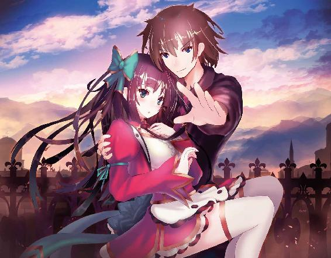
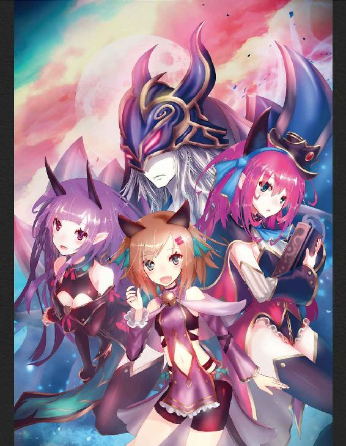
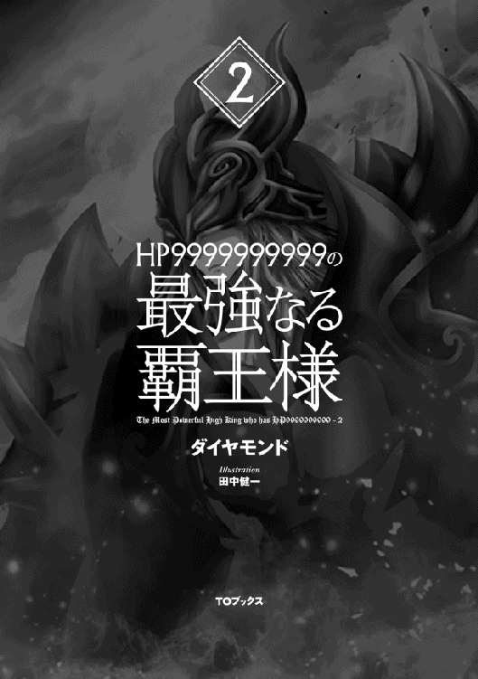
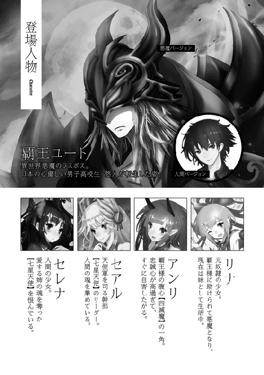
ユート達一向が『邪竜の洞窟』へと足を踏み入れた頃。ラファエはセアルから頼まれた通り、『七星の光城』に残ってミカの看病を続けていた。
「............」
やがて意識が戻ったらしく、ミカはゆっくりと上半身を起こした。
「ミカさん！ 目が覚めたんですね！」
ラファエは安堵した顔でミカに声をかける。ミカは不思議そうに部屋の中を見回していた。
「私は人間領にいたはず......どうして自分の部屋に......」
「セアルさんが連れ帰ってきてくれたんです。さっきまで意識を失ってたんですよ。だけどガブリさんが回復呪文で治してくれたので、ひとまず大丈夫だと思います」
「......そう。迷惑かけたみたいでごめん」
「気にしないでください。それより体調を崩した原因に何か心当たりはありますか？ セアルさん、凄く心配してましたよ」
「......特にない」
そう言いながら、ミカはベッドから降りようとする。
「あっ、何か欲しい物があるなら僕に言ってくれれば持ってきますよ。やっぱりお菓子ですか？」
「人間領に......戻らないと......」
「えっ!? な、何を言ってるんですか！ まだ安静にしてないと！」
「大丈夫......もう平気......。っ！」
目眩がしたのか、ミカは頭に左手を当てる。
「どこが平気なんですか！ それにセアルさんはミカさんへの【能力共有】を解除したのでもう【魂吸収】は使えません！ 人間領に行っても無意味です！」
「......関係ない。そもそも私の本当の目的は人間の魂を集めることじゃない」
「じゃ、じゃあどうして!?」
「......お姉ちゃんを、殺すため」
両手で布団を強く握りしめながら、ミカは言った。
「地上で何か大きな事件を起こせば、お姉ちゃんが私の存在に気付いて来てくれると思ったから。その手段として人間の魂を狩っていたってだけ」
「そ、そのために、人々の魂を......!?」
ミカはユナが覇王に仕える四滅魔の一人になったという事実を知らないので、ユナの居場所の手掛かりは何も持ち合わせていなかった。
「私の中にあるのは、お姉ちゃんを殺すという信念だけ。人間の魂を奪えなくなったのなら、何か別の事件を起こしてお姉ちゃんの気を引きつける。だから退いてラファエ」
「............」
「ラファエ？」
「......ごめんなさいミカさん。呪文【睡魔の囁き】！」
ラファエの両目が妖しく光り、程なくしてミカは眠りに落ちた。ラファエはミカをベッドに寝かせ、そっと布団をかける。
「こんな方法しか思いつきませんでした。許してください......」
ミカの寝顔を見ながら、ラファエは申し訳なさそうに呟いた。
＊
洞窟に入って十分が経過した。空間の幅は広くなったり狭くなったりと規則性がなく、地面も整備されていない山道のように不安定なので、僕達は慎重に歩くことを余儀なくされた。
「皆、前を見て!!」
セレナの声で前方に注目すると、なにやら巨大な蛇が恐ろしいスピードで接近してくるのが見えた。
ポイズンスネーク Ｌｖ１０３
ＨＰ ３６５８／３６５８
ＭＰ ２７８９／２７８９
ＡＴＫ ８６
ＤＦＥ ４９
ＡＧＬ １０５
ＨＩＴ ７７
すると蛇の頭上にこのようなステータスが表示された。なるほど、悪魔や天使と違ってモンスターは一定の距離になるとステータスが勝手に見えるようになるのか。
思えばこの世界に転生して実物のモンスターに遭遇するのはこれが初めてだ。数日前までアンリ達とトランプやジェ○ガで遊んでばかりで、ほとんど覇王城から出る機会はなかったわけだし当然か。
「い、いきなりレベル１００超え!? どうなってんのよこの洞窟！」
ポイズンスネークは僕達と十メートルほどの距離を置いて止まり、慎重に獲物を狙う目つきで睨んでくる。どうやらこちらの様子を窺っているらしい。
「皆下がってろ！ こいつがオレがやる！ 呪文【電撃──」
「待てアスタ。ここは僕に任せろ」
呪文を発動しようとしたアスタを僕が制止する。
「あ!? さてはユート、女の子達の前でカッコイイとこ見せようって腹だな!? そうはさせねーぞ！」
「それはお前だろ。一緒にするな」
「はあっ!? お、オレは別にそんなつもり、ま、全くねーし!!」
図星かよ。
「この洞窟にはあの蛇以上に強いモンスターがゴロゴロいるだろうし、アスタ達はＭＰを温存しておく必要があるだろ。僕なら呪文を使わないからＭＰは関係ないしな」
「そ、そりゃそうだけどよ......」
アスタも納得したようなので、僕は皆の前に出て拳を握りしめる。直後、ポイズンスネークが僕を喰らおうと大きく口を開いた。まったく、蛇如きが覇王である僕を喰らおうなど、身の程を弁えてほしいものだ。
「〝破滅一撃〟!!」
僕は瞬時にポイズンスネークとの距離を詰め、胴体に拳を叩き込んだ。
悲痛な叫び声が洞窟内に響き渡る。間もなくポイズンスネークは地面に倒れ、その身体は塵となって消滅した。やっぱりゲームとかと違ってモンスターを倒してもお金やアイテムが出てきたりはしないか。
「れ、レベル１０３のモンスターをワンパンＫＯかよ......」
後ろを振り向くと、皆が唖然とした顔で僕を見ていた。ま、驚くのも無理はない。
「セレナ、今のユートを見てカッコイイって思ったでしょ」
「ば、馬鹿なこと言わないでスー!! これくらい全然大したことないわ!! 百点満点中の五点っていったところね!!」
低っ!? 前回の評価よりも下がってるし！
「ところでユート。その〝破滅一撃〟ってオレとの勝負の時にも叫んでたが、気に入ったのか？」
「ど、どうでもいいだろそこは！ ほら早く行くぞ！」
僕は早足で前に進んでいく。実は結構気に入ってるなんて恥ずかしくて言えない......。
その後も何体かモンスターが襲ってきたが、その度に僕はワンパンで倒した。中にはレベル４００近いモンスターも出現したが、特に苦戦することもなかった。
「ユートばっかりずりーぞオイ！ これじゃオレらがいる意味ねーじゃねーか！」
不満をぶちまけるアスタ。確かに今のところ僕以外戦っていない。
「さっきも言ったけど、アスタ達はＭＰを温存しておくに越したことはないだろ。この先何が起きるか分からないし」
「限度があるだろ限度が！ いい加減オレにもやらせろ！」
子供のようなアスタの我が儘に、思わず溜息が出てしまう。
「分かったよ。少し休みたいと思ってたところだし、しばらくはアスタに任せる」
「へへっ、そうこなくっちゃな！」
僕は先頭をアスタに譲る。直後、レベル76のモンスターが僕達の前に現れた。
「早速きやがったな。悪いがテメーにはオレ様が輝くための生贄になってもらうぜ！ 呪文【電撃祭】!!」
アスタは電撃を身に纏い、すかさず〝雷撃弾〟を放つ。それは見事モンスターに直撃し、ＨＰが０になって消滅した。
「どうだ見たか！ オレも一発ＫＯにしてやったぜ！ さあレディ達よ、オレの勇姿に黄色い歓声を上げるがいい!! そして惚れるがいい!!」
「ねえ見て、こんな所に花が咲いてる」
「ホントだ。こんな真っ暗な洞窟で花が咲くなんて不思議なものね」
「綺麗ですね......」
戦隊ヒーローのようなポーズを決めるアスタだが、三人ともアスタの方を見ていなかった。今にも泣き出しそうなアスタの肩に、僕は優しく手を乗せる。
「気を落とすなよ。僕はちゃんと見てたから」
「オメーじゃ意味ねーんだよ!!」
洞窟に入って約一時間が経過した。未だに『狂魔の手鏡』は発見できておらず、洞窟にも終わりが見えない。
「リナ、疲れてないか？」
「あっ、はい！ 私なら大丈夫です！」
無理してそう言ってるんじゃないかと一瞬思ったけど、リナの様子を見るに本当に大丈夫そうだ。リナって意外とタフなんだな。
それにしてもこの洞窟、一体どこまで続いているのやら。ゴールの見えない道を歩き続けるのは精神的にキツいが、唯一の救いは単純な一本道であることだ。これなら道に迷うこともないし──
などと思っていた矢先に、前方の道が二つに分かれていた。僕達は分かれ道の手前で足を止める。
「一旦ここで休憩しようぜ。ここまでずっと歩きっぱなしだったからな」
アスタの提案に全員が頷いた。本音を言えば一刻も早く『狂魔の手鏡』の封印場所まで辿り着きたいところだが、この先の戦闘に備えて身体を休めることも必要だろう。僕は手荷物から水筒を取り出して口に含んだ。
「それで、この先どうする？ 皆でどっちかの道を進むか、それともここで二手に分かれるか。アタシは二手に分かれた方がいいと思うけど」
「オレも賛成だ。全員で一つの道を進んでそっちに『狂魔の手鏡』がなかったらまたここまで戻んなきゃならねえ。そうなったら二度手間だ」
「......いや、僕は全員でどちらかの道を進む方がいいと思う」
僕はセレナとアスタの意見に異議を唱える。
「なんでだ？ オレ達以外にも『狂魔の手鏡』を狙ってる奴がいるかもしれねーんだし、二手に分かれた方が効率的だろ」
「それはそうだけど......」
気掛かりなのは、この洞窟にいるのが七星天使だった場合だ。二手に分かれてしまえば一方のメンバーを僕が守れなくなってしまう。僕が進んだ道に七星天使が現れるのはいいが、もう一方の道に現れたら......。
「それでどう分かれる？ 五人だから二人と三人に分かれるのは確定だよな」
「無難に男と女でいいじゃない」
「いやいや女の子だけとか危険すぎんだろ！」
「大丈夫よ、女は三人いるんだし」
僕が考え事をしている内に、アスタ達は二手に分かれる方向で話を進めていく。
「待って。こんな時はこれの出番」
スーがどこからともなく五本の割り箸を取り出した。
「先が赤色の割り箸が三本、青色の割り箸が二本ある。赤を引いた人は左の道、青を引いた人は右の道ってことで」
「......スー、そんなの持ってきてたの？」
スーが右手に五本の割り箸を握り、そこからセレナとアスタが一本ずつ引く。
「ほら、ユートとリナも早く引けよ」
「......ああ」
「は、はいっ」
仕方なく僕は割り箸を引いた。くじ引きの結果、リナ、アスタ、スーが赤色を、僕とセレナが青色を引いた。
「決まりだな。そんじゃオレとスーとリナちゃんが左の道、セレナとユートが右の道ってことで」
「待って!! どうしてアタシがこの変態と一緒にならないといけないのよ!!」
セレナが僕の顔を指差しながら抗議する。予想通りの拒絶反応である。
「んなこと言っても、決まっちまったもんはしょうがねーだろ」
「こ、こいつはアタシのむ、胸を二回も触ったのよ!? 二人っきりになったら何をされるか分かったもんじゃないわ!!」
「落ち着けってセレナ。いくらユートでもこんな時にそういうことはしねーだろ」
おい、その言い方だと普段から僕がそういうことをしてるように聞こえるんだけど。
「いいえするわ!! 暗闇に乗じて絶対変なことをしてくるに決まってる!! こんな変態と一緒なんて死んでもゴメンよ!!」
「......僕も反対だ」
僕がそう口にすると、セレナがキッと僕を睨みつけてきた。
「な、何よアンタ！ アタシと一緒になるのは嫌だって言いたいの!?」
「そうじゃなくて......。つーかセレナは僕と一緒になりたくないんじゃないのか？」
「そ、そうだけど、アンタの方から拒否されるとなんかムカつくの！」
なんだそりゃ。女心はよく分からないな。
「僕が反対と言ったのは、二手に分かれること自体についてだ。やっぱり全員で一つの道を進む方がいいと思う。なんせこの洞窟には──」
「七星天使がいるかもしれない、か？」
アスタが割り込むような形で言った。
「......ああ。二手に分かれたら僕が一方を助けることができなくなる。アスタ達が七星天使と遭遇したらどうする？」
「悪いがユート、オレはお前に助けてもらおうだなんて思ってねえ。オレが七星天使に何をされたのか昨日話しただろ？」
「！」
アスタは親友の魂を七星天使に奪われ、その復讐の為にサーシャの仲間になったと話していた。
「オレは必ず七星天使の奴らに復讐する。七星天使と遭遇するのはむしろ好都合、いくら強かろうが迷わず戦うぜ。たとえその時『狂魔の手鏡』がなかったとしてもだ」
「......分かった」
僕は観念してそう言った。おそらく僕が何を言ってもアスタは自分の意志を曲げることはないだろう。それにまだ七星天使がいると決まったわけじゃない......。
「それよりお前はリナちゃんの純潔を心配した方がいいかもしれねーぜ？ なんせこのオレと一緒なんだからな」
「おい!! リナに手を出したら承知しないからな!!」
「ははっ、冗談に決まってんだろ。んじゃ、そろそろ休憩は終わりにして行くとすっか。ユートとセレナはまた後で会おうぜ」
アスタは腰を上げ、左の道の方に歩き出した。
「それじゃセレナ、気を付けて」
「スーもね。ってちょっと待って!! 結局アタシはこの変態と一緒ってこと!?」
「そういうこと。頑張ってユートとの愛を育んできて」
「ふ、ふざけないで!!」
スーもアスタの後に続く。リナは僕と離れるのが心細いのか、僕とアスタ達を交互に見てオロオロしていた。
「わ、私はどうしたら......」
「まあ、公正なくじ引きで決まったことだし仕方ない。リナとも一旦ここでお別れだな」
「......はい」
リナは小さく頷いた。正直心配でしょうがないけど、リナは僕との【悪魔契約】によってステータスは大幅に上がってるし、僕が与えた【災害光線】の呪文もあるので大丈夫だと信じよう。
「だけどもしリナ達の方に七星天使が現れたら、すぐに念話で僕に知らせてくれ。急いで駆けつける」
僕は小声でリナに囁いた。
「......分かりました。ふふっ」
「ん？ 何か僕変なこと言ったか？」
「あっ、すみません。ただその、お優しい方だと改めて思っただけです。アスタさん達のこと、本当に心配しておられるのですね」
「......別にそんなんじゃない」
僕と行動を共にしていた人間が七星天使に魂を奪われたり殺されたりしたとあらば、僕が「人間と悪魔が共存できる世界を築く」という理想を成し遂げる上での汚点になりかねないと思っただけ──そう僕は自分に言い聞かせた。
それからリナは左の道へ進み、その背中が暗闇に溶けて見えなくなるまで見送った。
「それじゃセレナ、僕達も......ってあれ？」
振り返ると既にセレナはそこにおらず、一人でさっさと右の道を進んでいることに気付いた。
「お、おいセレナ！ 一人じゃ危ないだろ！」
僕は慌ててセレナの後を追いかけたのであった。
リナ達と分かれてから五分が経過した。今まで洞窟の幅は広くなったり狭くなったりしていたが、この道に入ってからは広がっていく一方である。それに不思議とモンスターが一体も出てこない。なんだか逆に不気味だな......。
セレナはというと、僕の五メートルほど先を早足で歩いている。その背中からは僕の傍を歩きたくないという意志がヒシヒシと伝わってくる。
「な、なあセレナ。この先何が起きるか分からないし、できるだけ固まって歩いた方がいいと思うんだけど......」
「嫌よ！ どさくさに紛れて変なとこ触るつもりなんでしょ！」
まだ言ってるのか。まあ僕の前科を考えたら警戒するのは当然だろうけど。
「......セレナって、本当に僕のことが嫌いなのか？」
なんとなく聞いてみると、セレナは立ち止まって僕の方を振り向いた。
「今更何言ってんのよ!! 大大大大大っ嫌いよ!!」
「......だよな」
これは照れ隠しとかじゃなくガチで嫌われてるな......。
それにしても、だ。サーシャが【未来予知】で近い内に僕とセレナがキスをする（しかもセレナの方から意図的に）未来を視たという話が本当ならそろそろデレ始めてもおかしくない頃合いだろうに、一向にデレる気配がない。むしろ好感度は下がる一方のような気がする。いよいよサーシャの話が本当かどうか疑わしくなってきた。
「僕はセレナのこと、好きなんだけどな......」
僕は溜息交じりに呟いた。その瞬間、セレナの顔が暗闇でもハッキリと分かるくらい真っ赤になるのが分かった。
「ななななな、何言ってんのいきなり!? こ、こんな時に告白するとか頭おかしいんじゃないの!? 時と場所を考えなさいよ!!」
「は!? ちょっと待て、今のは告白とかじゃなくてただ......」
いや、これは告白になるのか？ 僕は腕を組んで考えてみる。
「そうだよな。セレナは可愛いしスタイルも良いし料理上手だし、性格は僕にはキツいけど本当は優しかったりするし、僕って無意識の内にセレナのことが──」
「わーわー!! ストップストップ!! それ以上言ったら肘のぶつけたらビリビリする部分を百回ぶつけてもらうから!!」
「これまた地味に痛そうだな......」
半分冗談のつもりだったけど、予想以上に効いたようだ。あとどうでもいいけど肘のぶつけたらビリビリする部分は「ファニーボーン」という名称があるんだっけ。
「だ、だいたいアンタのような冴えない男に好きになられても困るの！ アタシにはイケメンで背が高くてすっごいお金持ちの、アンタとは比較にもならないくらい魅力的な彼氏がいるんだから！」
「ん？ 確か昨日『異性との交際経験はゼロ』ってサーシャが言ってたような......」
「......!!」
再びセレナの顔が真っ赤に染まる。
「セレナ？」
「ええそうよ!! 今のは見栄を張っただけで本当は交際経験ゼロよ!! 笑いたければ笑えばいいじゃない!!」
「......はは」
「なに笑ってんのよ!!」
「セレナが笑えって言ったんだろ!?」
というか今はこんなことで言い争ってる場合じゃない（原因は僕にあるけど）。一刻も早く『狂魔の手鏡』の封印場所を──
「ん？」
僕の右足に何か固形物が当たった。何だろうと思い、僕はしゃがみ込んで目を凝らしてみる。それは石ころサイズの〝金塊〟だった。なんでこんな物が......？
「きゃっ!?」
その時セレナが小さく悲鳴を上げた。
「どうかしたか？」
「前を見て!!」
セレナに言われて前方に注目すると、何体ものモンスターが僕達の方へ向かってくるのが見えた。レベルはどれも１００前後だが、軽く二十体はいるだろう。
「しばらくモンスターが出てこないと思ったら、今度はこれか......」
だがまとめて出てきてくれた方が僕としてもありがたい。この程度の数なら三十秒もあれば余裕で片付けられ──
と、そこで僕は気付いた。あのモンスター達の目が僕達の姿を全く捉えていないということに。僕はあのモンスター達が僕達を襲おうとしているのではなく〝何か〟から逃げているのではないかという推測を立てた。
「やるしかないわね......!!」
「待てセレナ。ここは壁際に避けてジッとしていよう」
「はあ!? そんなことして囲まれたりしたら......」
「いいから」
「ちょ、ちょっと！」
僕はセレナの腕を掴み、半ば強引に壁際に引き寄せる。間もなくモンスター達が迫ってきたが、僕達には目もくれずにそのまま通過していった。やはり僕の推測通りだったようだ。
「ごめんセレナ。急に引っ張ったりして......あっ」
ふと見ると、セレナの顔がものすごく近くにあった。あと少しでキスしてしまいそうな距離。ひょっとしてサーシャが言ってた未来ってこれのことか......!?
「ぐはっ!?」
しかし唇が触れ合うことはなく、セレナは僕を思いっきり突き飛ばした。
「この変態!! やっぱりこういう変態行為が狙いだったのね!?」
「今のはどう見ても不可抗力だったろ！」
やっぱり違うか。そもそも今のはセレナからでも意図的でもなかったし。
「それより前方を警戒した方がいい。この先に〝何か〟がいる」
「！ 何かって、もしかして......」
「ああ」
地面の激しい揺れと共に大きな足音が近付いてくる。そして幾ばくもなく、二体の巨大なドラゴンが僕とセレナの前に姿を現した。
＊
ユートとセレナが二体のドラゴンに遭遇したのとほぼ同時刻。左の道を進んだアスタ、スー、リナの三人も一体の巨大なドラゴンと対峙していた。
ディストレスドラゴン Ｌｖ７４１
ＨＰ ８９６７４／８９７６４
ＭＰ ５０８８７／５０８８７
ＡＴＫ ８２１
ＤＦＥ ７９８
ＡＧＩ ４８０
ＨＩＴ ６０１
アスタ達の視界にドラゴンのステータスが表示される。そのドラゴンはアスタ達を前にして爆音の如き咆哮を轟かせた。
「ついに出てきやがったな！ やっぱレベル７００のドラゴンともなるとステータス半端ねえなおい！」
「アスタ、今は無駄口を叩いてる場合じゃない」
「分かってるって！ それじゃいくぜスー、リナちゃん！」
「うん」
戦闘態勢に入るアスタとスー。
「ってあれ？ リナちゃん？」
リナからの返事が聞こえなかったので、アスタとスーは後ろを振り向いてみる。そこには白目を剥いて石像のように硬直したリナの姿があった。
「うおーい!! リナちゃんの奴ドラゴンを見て気を失ってるぞ!! これじゃ付いてきた意味ねえ！」
「こうなったら二人でやるしかない」
「......はあ。みてーだな」
アスタとスーは改めてドラゴンと向き合う。程なくして戦闘が始まった。
＊
僕とセレナの前に現れた二体のドラゴン。まず僕はドラゴン達の頭上に目を凝らし、そこに表示されているステータスを確認した。
ペインドラゴン Ｌｖ７２３
ＨＰ ６２４０９／７５７０８
ＭＰ ６４３１２／６４３１２
ＡＴＫ ７５６
ＤＦＥ ７４６
ＡＧＩ ４０２
ＨＩＴ ５６４
ヘイトレッドドラゴン Ｌｖ７５６
ＨＰ ８０１７８／９１９６７
ＭＰ ５１０９８／５１０９８
ＡＴＫ ９９６
ＤＦＥ ８８７
ＡＧＩ ５５９
ＨＩＴ ６０８
右の青い竜はペインドラゴン、左の赤い竜はヘイトレッドドラゴンという名前らしい。こいつらがサーシャの話にもあった『邪竜の洞窟』を統べるドラゴンか。まさか三体の内二体が同時に現れるとは予想外だった。
しかもステータスだけで見るなら二体とも七星天使のウリエルよりも高い。これは今までのようにワンパンＫＯというわけにはいかなさそうだ。しかしドラゴンといっても所詮はモンスター。知能は高が知れてるし恐れるに足りないだろう。
ただ一つ気になるのは、二体とも既にＨＰが一割ほど減っているということだ。間違いなく僕達の前にこのドラゴン達と戦った者がいる。まさか──
「ユート、ここはアンタがドラゴン達を引きつけて！ その隙にアタシが先に行くわ！」
「ああ！ ってちょっと待て、その台詞って普通逆じゃないか!?」
「アンタなら二体のドラゴンが相手でも死なないでしょ多分！ それともアタシにドラゴンの相手をしろって言いたいの!?」
「そうじゃないけど......。っておい、くるぞ!!」
ヘイトレッドドラゴンがセレナに向けて紅蓮の炎を吐き出した。
「セレナ！ 僕の後ろに隠れ──」
「呪文【重力操作】!!」
セレナが呪文を唱え、地面を強く蹴り上げる。するとセレナの身体が洞窟の天井近くまで浮き、ドラゴンの炎を見事にかわした。
僕は空中に浮くセレナを見上げる。重力を操る力、それがセレナの呪文か。
「っ!?」
その時〝あるもの〟が視界に入り、僕の両目はそれに釘付けになってしまった。
「これがアタシの呪文【重力操作】の力よ。アンタなんかに心配されるまでも......って、何をそんなにまじまじと見てるの？」
「いやその、ここからだと、セレナのスカートの中が......」
「へっ......？ きゃあっ!? や、やだ、スパッツ穿き忘れてきちゃった!!」
顔を真っ赤にし、素早くスカートを押さえるセレナ。ちなみに今日は白でした。
「この変態!! これ以上アタシの方を見たら許さないわよ!!」
「そ、そう言われても......。それより次の攻撃がくるぞ！」
ヘイトレッドドラゴンが火炎を、ペインドラゴンが濁水をセレナに向けて放射する。それらをセレナは【重力操作】の力を駆使して華麗にかわしていく。さっき見るなと言われた手前、あまりハッキリとは目視できないけども。
「ああもう、やりづらくてしょうがないわ......」
セレナはスカートを押さえたまま僕の前に着地し、溜息交じりに呟いた。
「それもこれもアンタがここにいるせいよ！」
「僕のせいかよ!? スパッツを穿き忘れてきたセレナが悪いんだろ！」
「うるさい！ アンタが女の子の下着を見て興奮するような変態なのがいけないの！」
「そんな無茶苦茶な......ってか今はこんなことで言い争ってる場合じゃないだろ！」
「......そうね」
するとセレナは足下に転がっている石ころを十個ほど拾い上げた。
「何をする気だ？」
「黙って見てなさい」
セレナが石ころをドラゴン達の真上を目がけて投げる。その石ころはドラゴン達の頭や背中に落下し、二体とも苦痛の叫びを上げながら地面に這いつくばった。それを見て僕はなるほどと納得する。
「石ころの〝重力質量〟を変化させたのか」
「そういうこと。アタシの【重力操作】は触れたもの全てに有効なの。重力質量は最大で千キロまで変化させられるわ。その分ＭＰの消費も大きくなっちゃうけどね」
セレナが涼しげな顔で説明する。ドラゴン達にとっては複数の鉄球が直撃したにも等しいので堪ったものではないだろう。
「それじゃこの隙にアタシは先に行ってるから！ 後は任せたわよユート！」
「結局そうなるのかよ!?」
セレナは【重力操作】を使ってドラゴン達の頭上を軽々と飛び越え、洞窟の先へと進んでいく。この先には七星天使がいるかもしれない。セレナを一人で行かせるわけにはいかない。
「待てってセレナ......っと!!」
セレナを追いかけようとする僕にペインドラゴンが濁水を放射し、僕は横に跳んでそれをかわした。
地面から起き上がり、怒りに満ちた目つきで僕を睨む二体のドラゴン。なんかめっちゃ怒ってない？ 言っとくけどさっきのは僕がやったんじゃないからな？ ともかく簡単に僕を行かせる気はないようだ。
「......やるしかないか」
ここでドラゴン達を撒いたとしても帰りもまたここを通るだろうし、こいつらはここで倒しておいた方が良さそうだ。セレナのことは心配だけど、今は大丈夫だと信じよう。
既にセレナの姿は見えなくなっていた。戦うことを考えたらセレナが先に行ってくれたのは都合が良い。これで心置きなく呪文が使える。
「呪文【大火葬】!!」
ドラゴン達の身体が炎の渦に包まれ、二つの悲鳴が洞窟内で反響する。同時に呪文を使ったことで【変身】が解除され、僕は覇王の姿に戻った。
「小動物共よ、かかってくるがいい。余が遊び相手になってやろう」
＊
ユート達が『邪竜の洞窟』内でドラゴン達と闘っている頃。洞窟の入口でユート達と別れたサーシャは、一人アジトまでの帰路を歩いていた。皆のことが心配なのか、洞窟の方を何度も振り返りながら。
「全員無事に帰ってきてくれるといいが......」
未だにサーシャの中では、洞窟内に七星天使がいるかもしれないという不安が消えていなかった。本当は洞窟の入口で待っていたかったが、サーシャにはアジトの子供達の世話があるので、子供達が起き出す前にアジトに戻らなければならない。
「まあ、ユートが一緒なら大丈夫だと──っ！」
その時サーシャは軽い目眩に襲われ、足を止めて頭を押さえた。サーシャの呪文【未来予知】が発動する合図だ。【未来予知】は発動タイミングを自分の意志で選べないので、いつどこで発動するかはサーシャ自身にも分からない。
「こんな時に、私にどんな未来を視せるつもりだ......？」
サーシャは静かに目を閉じる。やがて脳内に未来のビジョンが映し出された。そして次の瞬間、サーシャの顔は真っ青になり、全身が震え出した。
「そんな......セレナ達が......!!」
未来のビジョンに絶望し、その場で立ち尽くすサーシャ。どうしてもっと早く視えなかったんだと、サーシャは己の呪文を嘆いた。
「今すぐ......戻らなければ......!!」
サーシャの【未来予知】の的中率は99％。何をしようが視えた未来を変えることはほぼ不可能である。それでもサーシャはいてもたってもいられなかった。
「くっ......!!」
しかし左足の怪我の痛みが再発し、サーシャはその場でうずくまる。
「この程度の痛みで......立ち止まるわけにはいかない......!!」
サーシャは歯を食いしばって立ち上がり、アジトの子供達のことなども忘れ、ただ『邪竜の洞窟』までの道を全力で駆けていった。
＊
二体のドラゴンの相手をユートに任せ、一人洞窟の先へと進むセレナ。そして走ること約五分、セレナは大空洞に辿り着いた。
「ここって......」
セレナはサーシャから貰った【蛍光】で、大空洞をあちこち照らしてみる。これまで進んできた洞窟の道は自然にできたものだったが、この大空洞だけは明らかに人工的に作られた場所だった。
「絶対何かありそうな雰囲気ね......」
セレナはここが『狂魔の手鏡』の封印場所だと確信する。セレナは逸る気持ちを抑えながら、大空洞の中を慎重に歩いていく。
「あら。随分と可愛らしい子がやってきたものね」
その時、一つの女の声が大空洞の中で響いた。
「誰!?」
セレナは足を止め、大空洞全体を見渡す。すると中央に神妙な祭壇が置かれていることに気付き、その上では一人の女が優雅に腰を下ろしていた。
「なんだか奥から騒がしい音が聞こえてきたから待ってみたけど、どうやら人間が迷い込んでたみたいね」
長い金髪、全身に身に付けた宝石、そして誇示するように広げられる二枚の白い翼。それを見たセレナは驚愕の表情を浮かべた。
「まさか......七星天使......!?」
「ご名答。私は七星天使の一人、イエグ。よろしくねお嬢ちゃん」
妖艶な笑みを浮かべながらイエグは名乗る。セレナは恐怖を抱きながらも、鋭くイエグを睨みつけていた。大好きな姉の魂を奪った七星天使。その中の一人が今、サーシャの前に姿を現していた。
「洞窟の入口に障壁を張っていたのは、アンタの仕業だったのね......!!」
「障壁？ そんなものを張った覚えはないけど」
「......!?」
イエグが嘘をついているようには見えない。障壁を張った者は別にいるのだろうかと、セレナの中で疑問が渦巻く。
「......まあいいわ。それよりどうして七星天使がこんな所にいるのかしら」
「そんなの決まってるでしょ。これを破壊する為よ」
「!!」
赤い布に包まれた円形の物を見せられ、大きく目を見開くセレナ。
「それが『狂魔の手鏡』......!!」
「その通り。どれほど美しい鏡なのかこの目で確認したいところだけど、そういうわけにはいかないものね。なんせこの鏡には私達天使を無力化してしまう力があるんだもの。このまま布で包まれた状態で破壊するしかないわね」
「そんなことさせない!!」
大声で叫ぶセレナを見て、イエグは不気味に微笑んだ。
「ふふっ。その様子だと貴女の目的もこの鏡だったようね。さしずめ貴女は七星天使に大切な人の魂を奪われ、七星天使に復讐する為にこの鏡の力を利用しようとしたってところかしら」
「そうよ......!!」
セレナは爪が皮膚に深く食い込むほど強く拳を握りしめる。
「七星天使は私のお姉ちゃんの魂を奪った......絶対に許せない!!」
「そう、姉の復讐ってわけね。でも一応言っておくけど、私は〝人間の魂狩り〟には参加してないの。だから私に怒りを向けるのはお門違いというものよ？」
「うるさい!! 七星天使は全員アタシ達の敵よ!!」
イエグは深々と溜息をつく。
「まったく、とんだとばっちりね。でもただ壊すだけじゃ面白くないと思ってたところだし、ちょうどいいわ。一回だけ貴女にチャンスをあげる」
「チャンス......!?」
イエグは『狂魔の手鏡』を祭壇の上に置き、地面に降り立った。
「私と殺し合いをしましょう、お嬢ちゃん。もし貴女が私を殺すことができたら、あの鏡は好きにしていいわよ。だけど私が貴女を殺したら、予定通りあの鏡は破壊させてもらうわ」
「......!!」
「もちろん隙を見てあの鏡を持って脱出するというのもアリよ。そんな隙を与えるつもりなんてないけど。どうする？ 受ける？」
イエグからは人間ごときに負けるはずがないという自信が溢れ出ていた。
「怖いのならこのままＵターンして逃げてもいいのよ？ 特別に見逃してあげるから。さあ、どうするの？」
イエグは明らかにセレナを挑発していた。しばし俯くセレナだったが、やがて静かに顔を上げる。その目には確固たる意志が宿っていた。
「分かったわ。その提案、乗ってやろうじゃない......!!」
「ふふっ、そうこなくっちゃね。貴女の美しい決心に敬意を表してあげる。でも本当にいいのかしら？ 人間の分際で七星天使の私に勝てると本気で思ってるの？」
「当然よ。アタシ達はこういう時の為に、今まで鍛錬を積んできたんだから......!!」
イエグは淫靡な視線をセレナに向けながら、不気味に口角を上げる。
「では始めましょうか。貴女がどれだけ美しい悲鳴を上げてくれるか、とっても楽しみだわぁあ......!!」
＊
大空洞でセレナとイエグの戦闘が始まった頃。アスタとスーは途中で遭遇したディストレスドラゴンとの戦いを続けていた。
「くそっ。流石はレベル７００オーバーのドラゴン、一筋縄じゃいかねーか......!!」
アスタとスーは息を切らしながらドラゴンと対峙している。ドラゴンのＨＰは五分の一まで削ることができたものの、二人ともＨＰとＭＰはほとんど残っていなかった。
「おいスー、お前の【生類召喚】と【憑依】はあと何回ずつ使えそうか？」
「一回か二回。アスタの【電撃祭】はどれくらい保ちそう？」
「あと三十秒ってところだ。せめてその倍あればな......」
「ユートの忠告通り、ＭＰを温存しなかったからそんなことになる」
「う、うるせえ！ 過ぎたことをゴチャゴチャ言ってもしょうがねーだろ！」
ディストレスドラゴンがスーに向けて巨大なヘドロボムを放つ。スーは横方向に地面を蹴り、辛うじてそれを避けた。
「それじゃどうする？ 諦めて引き返す？」
「冗談じゃねえ！ この先に『狂魔の手鏡』があるかもしれねーんだ、諦めてたまっかよ──っと危ねえ！」
今度はアスタに向けてヘドロボムが放たれる。同じくアスタも横に跳んでそれをかわした。
「あっ、やべえ!?」
が、その時アスタは自分の後ろに気絶状態のリナがいたことを思い出した。このままではヘドロボムがリナに直撃してしまう。
「おいリナちゃん目を覚ませ!! そして避けろ!!」
助けが間に合わないと判断したアスタは大声で叫んだ。
「......はっ!?」
その声で我に返ったのか、リナの目に色が戻った。そして何か紫色の物体が自分に向かって飛んでくることに気付く。
「ひゃあっ!?」
リナは反射的に右腕を大きく振った。するとその風圧でヘドロボムの軌道が変わり、リナから少し離れた所で爆発した。
「じゅ、じゅ、呪文【災害光線】!!」
左手を前に出し、呪文を唱えるリナ。直後、その掌から凄まじい光線が放たれた。この反撃はディストレスドラゴンも想定外だったのか、反応する間も与えず光線はドラゴンの脳天を貫いた。
断末魔の悲鳴を上げながら、ディストレスドラゴンは地面に倒れる。程なくしてドラゴンはアスタ達の視界から消滅した。
「あ、あれ？ 私は一体何を......」
ほとんど無意識でやったのか、リナは自分が何をしたのかよく分かっていない様子だった。そんなリナをスーとアスタは唖然とした顔で見つめる。
「......凄い。流石はユートの妹」
「ああ。つーかリナちゃん、呪文使えたんだな......」
「あっ、えっと、はい！ い、今まで黙っていてすみませんでした！」
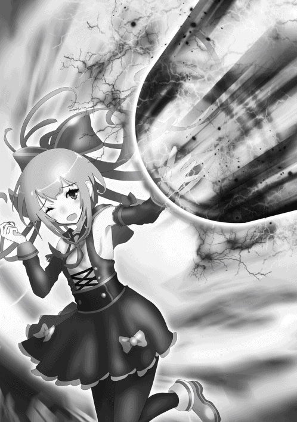
慌ててリナは頭を下げる。
「いやまあ、別に謝る必要はないんだけどよ。でもビックリしたぜ、まさかビーム一発でドラゴンを倒しちまうとはな」
「とにかくリナのおかげで助かった。ありがとう」
「い、いえ！ 私こそ気を失っていたようで、御迷惑をおかけしました！」
二人と会話しながら、リナは自分が何をしたのか少しずつ理解してきた。
「これが......お兄様が与えてくださった力......」
自分の左手を見つめながら、リナは小さく呟いた。
「っと、今は呑気に話してる場合じゃねえ。行くぜ二人とも！」
ディストレスドラゴンを撃破したアスタ達は洞窟の先へと駆けていく。
「どうやらもうこっちの道にドラゴンはいねーみたいだな」
「うん。だけどそれはセレナ達が進んだ道の方にドラゴンが二体いることを意味してる」
「だな。まあユートなら二体のドラゴンが相手でも心配いらねえ気が──」
「っ!! アスタ、リナ、止まって!!」
突然スーが足を止めて大声を出し、アスタとリナは急ブレーキをかけた。
「びっくりしたじゃねーか。どうしたスー？」
「......誰か来る」
「何？」
前方を注視する三人。やがて暗闇の中から一人の女が姿を現した。
「ほう、これは驚いた。まさかこんな所で人間に出くわすとはな」
アスタ達は瞠目する。全身から迸るただならぬオーラは、この女が何者かを察するには十分だった。
「テメエ......七星天使か......!?」
「いかにも。ワシは七星天使のリーダー、セアルじゃ」
更なる衝撃がアスタ達を襲う。天使の頂点に君臨する存在、七星天使。それを統べる女が今、アスタ達の目の前に立っていた。
「入口には障壁を張っておいたはずじゃが、どうやって入った？ お前達の中に呪文を解除できる者がいるのか？」
洞窟の入口に障壁を張ったのはこいつの仕業だったのかと、期せずしてアスタ達は理解した。
「......まあいい。それよりお前達、どこかでイエグという女を見かけなかったか？」
「イエグ......？ まさかそいつも......」
「ああ、七星天使じゃ。髪は金色、全身に宝石を身に付け、『美しい』が口癖の女じゃ。この洞窟内で合流する予定だったのじゃが、なかなか見つからなくてな」
アスタ達は絶句した。洞窟内に七星天使がいることは想定していたものの、それが二人もいるとは誰も予期していなかったからだ。
「ま、見ていないのなら仕方ない。ところでお前達が障壁を割ってまでこの洞窟に入ってきた目的はなんじゃ？」
「......そんなの決まってんだろ。『狂魔の手鏡』を手に入れて、お前ら七星天使をブッ倒す為だよ」
憎しみの籠もった声でアスタは答えた。
「なるほど。その怒りに満ちた目を見る限り、ワシらへの復讐が目的といったところか。ワシらが人間に恨みを買われて当然の所業に手を染めているのは紛れもない事実。その意志を咎めるつもりはない」
「よく分かってんじゃねーか。で、七星天使が何故こんな所にいやがる。テメーも『狂魔の手鏡』が狙いか？」
「その通り。あの鏡が人間や悪魔の手に渡れば厄介なことになるからな。そうなる前にワシらの手で破壊する必要がある」
そう言って、セアルは小さく嘆息する。
「が、残念ながらこっちの道はハズレのようじゃ。この先は行き止まりで何もなかったからな。だからこうしてやむを得ず引き返してきたところじゃ。おそらく『狂魔の手鏡』はもう一方の道を進んだ先にある」
つまり『狂魔の手鏡』はユートとセレナが進んだ道の方にある。アスタ達はそう確信を得た。
「しかしこちらの道でイエグと会わなかったということは、イエグはもう一つの道の方に行ってくれたようじゃな。そろそろ『狂魔の手鏡』の破壊が完了したとの報告が入ってくるはずじゃ」
「......どうかな。そっちの道にもオレ達の仲間が行っている。そう簡単にはいかないだろうぜ」
「ほう。随分と信頼しているのだな、自分の仲間を」
それからセアルはアスタ達の後方に視線を移した。
「そういえば、この道の途中にいたドラゴンの気配が消えておるな。私が遭遇した時は戦うのが億劫だったから〝威嚇〟で黙らせて素通りしてきたが、どうやらあのドラゴンはお前達が倒したようじゃな。人間にしてはやるではないか」
アスタ達は戦慄を覚えた。レベルが７００を超えていたあのドラゴンを威嚇一つで黙らせたのか、と。
「さて。先程貴様は『七星天使をブッ倒す』と宣言したな。ならばどうする？ 今ここでワシと戦うか？」
「......当然だろ。テメーら七星天使には計り知れねーほどの恨みがある。テメーはこの場でオレが殺してやる......!!」
憎悪を滾らせながら宣言するアスタ。思わずセアルは薄ら笑いを浮かべる。
「ふっ。『狂魔の手鏡』もなしにワシを殺せると思っているとは、まったく見くびられたものじゃな」
「落ち着いてアスタ。今の状態でまともに戦って勝てる相手じゃない。ここは退くことを最優先で考えるべき」
戦う意志を見せるアスタを、スーが真っ当な意見で宥めようとする。
「スー、悪いがそいつは聞けねえ。さっき言ったろ、オレは七星天使と遭遇したら迷わず戦うってな。復讐の相手を目の前にして逃亡するなんざオレのプライドが許さねえ」
ドラゴンとの戦いでアスタはＨＰもＭＰもほとんど残っておらず、頼みの綱だった『狂魔の手鏡』もない。それでもアスタの意志は変わらなかった。
「いいじゃろう。ちょうどワシも人材の発掘に力を入れようと思っていたところじゃ。お前達の実力がどれほどのものか、このワシが直々に見定めてやろう」
「人材の発掘......？ 何を言ってやがる？」
「こっちの話じゃ、気にせんでいい。さあ人間共よ、どこからでもかかってくるがいい」
数の不利など意にも介さない様子でセアルは言った。
「......その前に一つ聞かせろ。オレの親友の魂を奪ったのはテメーか？」
「親友？」
「灰色の髪に緑の瞳、背はオレと同じくらいで、名前はヤストだ。そいつの魂を奪ったのはテメーなのかと聞いている」
アスタの問いに、セアルは腕を組んで小首を傾げる。
「ヤスト？ 誰だそれは？」
「......!!」
「なんせワシ一人だけでも奪った魂は百を優に超える。有象無象の名前などイチイチ覚えていられない。ワシが奪ったのかもしれないし、他の奴が奪ったのかもしれん。だからお前の問いに対する答えは〝分からない〟だ。悪く思わないでくれ」
アスタの拳がワナワナと震え出す。魂を奪われた親友を軽んじるような態度に、アスタは激しい怒りを覚えた。
「呪文【電撃祭】!!」
アスタは残りＭＰを全て使い、最大出力の電撃を自分の身体に纏わせる。怒りで冷静さを失ったアスタだが、どちらにせよ残り少ないＨＰとＭＰでセアルを倒すには最初の一撃でケリをつける以外になかった。
「ヤストの無念、テメエの死をもって晴らさせてもらう!!」
アスタは地面を激しく蹴り、一直線に駆け出す。最大出力の電撃を身に纏ったアスタのスピードは、もはや常人では認識できない領域に達していた。その音速にも匹敵する速度で、アスタはセアルの顔面に向かって拳を炸裂させた。
「なっ......!?」
次の瞬間、アスタの表情が驚愕に染まった。自分の渾身の一撃を、セアルが片手で平然と受け止めていたからだ。
「いきなり女の顔面を狙ってくるとは、容赦のない男だ」
直後、アスタの身体はセアルによって地面に勢いよく叩きつけられた。
「がはっ......!!」
その振動で洞窟全体が大きく揺れ、地面に無数の亀裂が生じる。アスタは口から血を吐き出し、気を失ってしまった。
「......口ほどにもないな」
続いてセアルはスーの方に視線を移す。一瞬でねじ伏せられたアスタを見て愕然とするスーだったが、セアルが自分に狙いを定めたことが分かり、すぐに思考を切り替えた。
「呪文【生類召喚】!!」
スーも残りのＭＰを全て費やし、全身が赤い岩で覆われた巨大なモンスターをこの場に出現させた。モンスターの咆哮が洞窟内で反響する。
ヴォルカニックジャイアント Ｌｖ６８８
ＨＰ ５４９８９／５４９８９
ＭＰ ２０８９７／２０８９７
ＡＴＫ １２６８
ＤＦＥ ６５９
ＡＧＩ １２９
ＨＩＴ ３５４
スーの戦術は【生類召喚】でモンスターを呼び寄せ、それを【憑依】で操って戦わせるというもの。しかし【憑依】が有効なモンスターはレベル５００までなので、スーはこのモンスターを操ることはできない。
今は【憑依】にＭＰを費やす余裕はなく、またレベル５００程度のモンスターではセアルを倒すことはできないと判断したスーは、残りのＭＰを全て【生類召喚】に費やすという選択をとったのである。よって呼び寄せたモンスターが誰を狙うかは分からない。これはスーにとって一か八かの賭けだった。
「ほう、召喚系の呪文とは珍しいな。使える人間を見るのは初めてじゃ」
一方セアルは少しも驚く様子はなく、感心した様子でモンスターを眺めている。すると運はスーに味方したのか、モンスターは真っ先にセアルに攻撃を仕掛けた。
「どうやらワシが最も危険な存在だと本能で察知したようじゃな。だが......」
セアルは静かに指先をモンスターに向ける。
「目障りだ......消えろ。呪文【死の宣告】!!」
暗転する視界。直後、葉脈のような黒い筋がヴォルカニックジャイアントの全身を蝕んでいく。そして激しく身悶えた後に地面に倒れ、呆気なく消滅してしまった。
「そ......んな......」
この光景を目の当たりにしたスーは絶望に打ち拉がれる。もはや戦意すら喪失したスーに対しセアルは一瞬で距離を詰め、腹に拳を叩き込んだ。
「かはっ......!!」
スーの口から液体が吐瀉される。そのままスーは気を失い、倒れた。セアルは地面に横たわるアスタとスーを交互に見た後、小さく溜息をついた。
「所詮は人間、この程度か。少しでも期待したワシが愚かじゃったな......」
セアルはゆっくりと右手を前に出す。
「もうお前達に用はない。その魂、幻獣復活への糧とさせてもらう。呪文【魂吸──」
「呪文【災害光線】!!」
セアルが二人の魂を奪おうとした、その時。リナの【災害光線】がセアルに向けて放たれた。
「むっ......!?」
セアルは咄嗟に右腕を前に出し、その光線を受け止める。その威力に押され、セアルの身体は大きく後退した。
「そんなこと......させません......!!」
リナは必死に意識を保ちながらセアルと向かい合う。自らの右腕を見てセアルは僅かに口角を上げた。
「良い威力じゃ。ただの声援要員の女かと思っておったが、外見で判断してしまったことは謝ろう」
リナの脳裏には、ユートの「もしリナ達の方に七星天使が現れたらすぐに〝念話〟で僕に知らせてくれ」という言葉が過ぎっていた。
本当は今すぐにでもお兄様に助けを求めたい。だが洞窟内に七星天使が二人いることはお兄様も想定外のはず。自分達を助けている間にもう一人の七星天使に『狂魔の手鏡』を破壊されたら元も子もない。
そう考えたリナは、ユートに助けを求めることはせず、自分一人でセアルと戦う覚悟を決めた。
「貴女は......私が......倒します......!!」
足をガクガクに震わせるリナ。その股からは、薄い黄色の液体が止めどなく流れ出ている。
「失禁するほどの恐怖を感じながらも尚、ワシに戦いを挑むか。その勇気は称えてやる」
セアルはアスタ達の魂の回収を一旦見送り、リナに敵意を向ける。
「が、勇気だけで倒せるほどワシは甘くはない。それを身をもって教えてやる」
「......!!」
お兄様、私に力を貸してください──リナは心の中で何度もその言葉を唱えた。
＊
「呪文【覇導弾】!!」
僕は二発の覇導弾を放ち、ペインドラゴンとヘイトレッドドラゴン双方の腹部に炸裂させる。これがトドメとなり、二体のドラゴンのＨＰは０となった。
「......思ったよりも手こずったな」
ドラゴン達の消滅を見届けながら僕は呟いた。正直三分もあれば事足りると思ってたけど、流石はレベル７００超えのドラゴン、一筋縄ではいかなかったか。あまりやりすぎると洞窟そのものを崩壊させかねないので、力の調節に苦労したというのも要因の一つだろう。
これならさっさと【死の宣告】で片付ければよかったかな。【死の宣告】はＭＰを１０００００も消費するので、モンスター相手に使うのは勿体ないという考えが無意識に働いてしまった。
「さて、急ぐか」
僕は今一度【変身】の呪文で人間の姿になって走り出す。僕を置いて先に行ってしまったセレナが心配だ。何事もなければいいけど......。
＊
一方、大空洞で『狂魔の手鏡』を賭けて闘うセレナとイエグは──
「はあっ......はあっ......!!」
全身血だらけで立つのがやっとの状態のセレナと、ほぼ無傷のイエグ。どちらが優勢かは火を見るより明らかだった。
「美しい......美しいわぁ......!!」
イエグは祭壇の上に立ち、恍惚とした表情でセレナを見下ろしていた。
「私がこの世で最も美しいと思ってるもの、何だか分かる？ 実は金でもなければ宝石でもないの。それはね......血よ!!」
両手を大袈裟に広げ、イエグは高らかに叫ぶ。
「特に貴女のような若い女が流す血は最っ高!! あ、もちろん金も宝石も好きよ？ けどやっぱり血に勝るものはないわあ!! 貴女もそう思わない!?」
「......うる......さい!!」
セレナは足下に転がっていた石ころを数個拾い上げ、イエグに向かって投げる。先程ドラゴン達にお見舞いしたように【重力操作】によって石ころの〝重力質量〟を変化させ、標的にぶち当てるという策だ。
セレナは石ころの質量を全て五百キロまで引き上げる。しかしもはやそれは苦し紛れでしかなかった。
「またそれ？ 私には通用しないっていい加減分からないのかしら」
飛来する石ころに向けて、イエグは右手をかざす。
「呪文【金色世界】!!」
イエグが呪文を唱えた瞬間、セレナが投げた石ころは全て〝金塊〟に変化した。
「私には無機物を〝金〟に変える力がある。しかもそれだけじゃない」
その数個の金塊は空中でピタリと止まり、逆にセレナの方へ飛んでいく。
「金に変えた物は私が自在に操ることができる。どう？ 美しい私にピッタリの能力だと思わない？」
セレナの呪文によって質量を増した石ころが金塊となり、セレナ自身に襲い掛かる。
「うっ......!!」
その内の一個がセレナの右足に直撃し、とうとうセレナは地面に倒れてしまった。
「勝負あり、ね」
イエグは祭壇の上に置いていた『狂魔の手鏡』を手に持ち、地面に降り立つ。そしてそれを自分の足下に落とした。
「それじゃ約束通り、この鏡は破壊させてもらうわよ」
「待っ......!!」
セレナは右手を伸ばす。だが今のセレナにイエグを止める術などなかった。
「よぉく見てなさい。貴女の希望が粉々に砕かれる瞬間を!!」
右足を上げるイエグ。そして──無慈悲な音が大空洞全体に響いた。イエグによって『狂魔の手鏡』は完全に破壊されてしまった。
「そん......な......」
大きく目を見開くセレナ。人間が七星天使に対抗しうる唯一の希望。それを目の前で粉砕され、セレナは絶望に打ち拉がれた。
「あっはははははははははは!! いいわよぉ、その絶望に染まった顔!! 最高に美しいわあああああ!!」
イエグは豪快に笑いながら、粉々になった鏡を更に踏みつける。
「皆......ごめん......アタシのせいで......!!」
セレナは拳を握りしめ、悔しさのあまり大粒の涙を流した。
「さて、残るはお嬢ちゃんね。このまま殺しちゃってもいいけど、どうしようかしら」
イエグは地面に横たわるセレナのもとまで歩み寄り、考える素振りを見せる。
「そうねえ、じゃあ私の足の裏を舐めながら『イエグ様はお美しい』って十回言ったら命だけは助けてあげる。さあどうする？」
「............」
セレナは顔を地面に伏せたまま、反応しない。
「ちょっと、なに無視してんのよ。何とか言いなさいよ!!」
「がはっ......!!」
イエグはセレナの背中を激しく踏みつけた。
「それとも鏡と同じように粉々に砕かれたいのかしらぁ!?」
「うっ......げほっ......がはっ......!!」
無抵抗のセレナをイエグは何度も何度も踏みつける。やがてイエグは足を止め、不気味に口角を吊り上げた。
「いいことを思いついたわ。貴女の可愛らしいお顔の皮をゆっくりじっくり剥いで、原型を留めなくなったあたりで殺してあげる。貴女の美しい悲鳴を存分に聞かせてちょうだい......!!」
イエグがセレナの顔に手を伸ばそうとした、その時。
「!!」
前方から凄まじい気配を感じ取り、イエグは反射的にセレナから飛び退いた。
「誰か来る......!?」
警戒心を最大まで引き上げるイエグ。間もなく一人の男が駆けてくるのが見えた。それはユートであった。
＊
「セレナ!!」
二体のドラゴンを撃破し、走ること数分。最初に僕の目に飛び込んできたのは、全身血だらけで地面に横たわるセレナの姿だった。
「大丈夫か!? しっかりしろセレナ!!」
僕はセレナのもとに駆け寄り、必死に呼びかける。
「ユー......ト......？」
うっすらと目を開けるセレナ。よかった、ちゃんと息はある。
「ごめんユート......狂魔の手鏡......壊されちゃった......」
「!!」
前方に鏡の破片のようなものが散らばっていることに気付く。そしてその傍では、一人の女が薄気味悪い笑みを浮かべていた。
「なーんだ、何かと思えばただの人間のオスじゃない。私としたことが気配を読み違えるなんてね」
「......お前、七星天使か」
僕は立ち上がり、その女を睨みつける。
「ええ。私は七星天使の一人、イエグよ。よろしくね坊や」
やはり予感していた通り、七星天使もこの洞窟に来ていたのか。
「......セレナをこんな姿にしたのはお前だな」
「そうよ。血まみれになったその子、とっても美しいと思わない？」
「......!!」
僕の拳に尋常ではないほどの力が入る。
「どうやらその子の仲間のようね。ちょうど物足りないと思ってたところだったし、今から坊やが私の相手をしてくれない？ 仲間の仇を討つ為に闘志を燃やすなんて美しいでしょ？」
「............」
その時、セレナが最後の力を振り絞るように、僕の足を掴んできた。
「あの女と戦っちゃダメ......私達じゃ到底敵わない......」
「セレナ......」
「勝手に一人で突っ走った私が悪いの......だからユートだけでも逃げて......」
瀕死の状態でありながら、セレナは僕の身を案じてくれていた。
「何？ もしかして戦わないつもり？ それとも『女と戦うことなんてできなーい』みたいな紳士気取りのことを言っちゃうタイプなのかしら？」
挑発のつもりなのか、イエグがこのようなことを言ってくる。
「お願いユート......逃げて......」
セレナの力が更に強くなる。その手を通じてセレナの決死の思いが伝わってきた。
「......分かった」
僅かな沈黙の後、僕は静かに言った。
「イエグ、といったな。僕はお前とは戦わない」
「......は？」
「お前の言う通りだ。僕には女と戦うことなんてできない。悪いがこの場は退散させてもらう」
するとイエグは呆れたように溜息をついた。
「失望したわ。まさかこれほど根性なしの男とはね。まったく美しさの欠片も──」
「とでも言うと思ったか」
次の瞬間、僕の拳がイエグの顔面に炸裂した。イエグの身体はロケットのように吹き飛び、壁に激突して凄まじい衝撃波を巻き起こした。
「安心しろ。貴様は僕がこの世で最も美しく殺してやる......!!」
＊
時間は少し遡り、セアルと戦闘中のリナ。
「......っ」
全身傷だらけになりながらも、リナはなんとか地に足を付けて立っていた。ここで倒れたら、自分だけでなくアスタとスーの魂まで奪われてしまう。その思いがリナを奮い立たせていた。
「手加減してやっているとはいえ、ワシ相手にここまで持ち堪えるとはな。素直に褒めてやる」
一方ほぼ無傷のセアルは、感心した様子でリナを見ている。
「お前こそワシが求めていた人材だ......と言いたいところじゃが、戦ってみて一つ分かったことがある。その力、元々お前にあったものではないな？」
「!!」
セアルの言う通り、リナの現在のステータスも呪文【災害光線】も全てユートが与えたものであり、リナ本来の力ではなかった。
「どうやら図星のようじゃな。それがお前自身の力だったのなら七星天使に引き込むことも考えたんだが、残念じゃ。お前に力を与えた者の存在は気になるが、ワシは借り物の力などに興味はないのでな」
「......私も一つ、分かったことが、あります」
息を切らしながらリナが言う。
「ほう。なんじゃ？」
「貴女が私と戦っている間、貴女の中からずっと〝心の声〟が聞こえていました」
「......心の声、じゃと？」
「はい。その声はとても辛く、悲しそうでした......。本当は貴女も、こんなことはしたくないんじゃないですか......？」
「!!」
予期せぬリナの発言に、セアルは僅かながらも動揺する。
「私は少し前まで奴隷でした。そこでは人の顔色ばかり伺う日々を過ごしていたので、なんとなく人の本心が分かるんです。こうして私と戦うことも、人々の魂を奪うことも、貴女が心の底から望んでいることじゃない......。違いますか？」
短い沈黙の後、セアルは静かに口を開く。
「この状況でワシを観察する余裕があるとは、たまげたものだな」
小さく笑みを浮かべるセアルだったが、すぐに真剣な表情に戻る。
「だがこれだけは言っておく。たとえそれが自分の望んでいないことであったとしても、使命を果たす為なら絶対にやり遂げなければならない。それが七星天使のリーダーとしての責務じゃ」
「使命......？」
「......喋りすぎたな。そろそろ終わりにしよう。お前達の魂、狩らせてもらうぞ」
セアルが本気の力を発揮しようとした、その時。
「!?」
洞窟内の別の場所で爆発にも似た激しい音が響いた。それはユートがイエグを拳で吹っ飛ばし、壁に叩きつけた音だった。
「なんじゃ今のは......!? どうしたイエグ、返事をしろ！」
セアルは念話でイエグと連絡を取ろうとするが、イエグからの返答はない。
「まさかイエグに何かあったのか......!? もし『狂魔の手鏡』を何者かに奪われていたらまずい......!!」
今すぐイエグのもとに向かう必要がある。セアルはそう判断した。
「......命拾いしたな、女」
セアルはリナとの戦いを放棄し、その場から突風のように去っていった。途端にリナの全身から力が抜け、その場にヘタリと座り込む。
「ごめんなさい、お兄様。私にできるのはここまでのようです......」
やがてリナは気を失い、地面に横たわった。
＊
僕の一撃によって、壁に大きくめり込んだイエグ。間もなく奴の身体は壁から剥がれ落ち、地面に落下した。
「立てよ。貴様も七星天使の一人、この程度じゃくたばらないだろ？」
僕は一歩一歩、イエグのもとへ近付いていく。イエグは地面に手をついて、ヨロヨロと起き上がった。
「よくも......よくも私の美しい顔をおおおおおお......!!」
もの凄い剣幕で僕を睨みつけるイエグ。頬は凹み、口の端からは血がしたたり落ち、もはや美しさとはかけ離れた顔になっていた。
「お前は傷つけてはならないものを傷つけた......!! その罪、残酷な死をもって償わせてあげる!! 呪文【金色世界】!!」
イエグの周囲のものが全て金塊へと変わっていく。二体のドラゴンと遭遇する直前に見つけた金塊はこいつの能力によるものだったわけか。ドラゴン達のＨＰが若干減っていたのもこいつの仕業だろう。
「ふふふ......蜂の巣にしてあげるわぁあ......!!」
やがて金塊はグニャグニャと形を変えていき、無数の槍となってイエグの頭上に集まった。どうやら金塊に変えたものを自由に操ることも可能なようだ。
「ユート......!!」
「セレナ、これ以上喋らない方がいい。安心して見ていてくれ」
僕は一旦足を止め、背中をセレナに向けたまま言った。
「強がりもここまでよ!! 今すぐ地獄の底に叩き落としてあげる!!」
全ての槍が僕を目がけて放たれる。僕はその場から敢えて動かず、槍の雨を一身に受けた。
「あはははははははははは!! 所詮は人間ね!! 足がすくんで避けることすら──」
イエグの言葉が止まる。槍は一本たりとも僕の身体に突き刺さることはなく、全て地面に落ちた。
「これがお前の言う〝残酷な死〟か？ 笑わせるな......」
再び僕はゆっくりと歩き出す。
「む、無傷!? 何らかの呪文で防いだというの......!?」
「貴様には僕が呪文を使ったように見えたのか？ こんな生温い攻撃ではかすり傷一つ付けられないぞ」
「な、なら！ これでどうかしら!?」
続いてイエグは僕の頭上に金塊を集結させ、一つの巨大な金塊を形成した。直径十メートル以上はあるだろう。
「さあ、ペシャンコになりなさい!!」
巨大な金塊が僕の頭に直撃した。しかし逆に金塊が粉々に砕け、僕の周囲に破片が散らばる。僕へのダメージは微々たるものだった。
「あ、有り得ない!! どうして効かないの!?」
「............」
イエグが驚愕している間も、僕は歩を進めていく。
「お......おのれえ!!」
イエグは金の剣を形成し、僕の喉元に向かって剣先を炸裂させた。
「あは、あはははは!! いくら何でも喉を狙われたらさすがに──」
「さすがに、何だ？」
金の剣に亀裂が生じ、これも粉々に砕け散る。
「ば......化け物......!!」
絶望の表情を浮かべるイエグに対し、僕は右の拳を握りしめた。
「歯を食いしばれよ......二発目だ」
「ガハアッ!!」
僕の拳がイエグの腹に叩き込まれ、再びイエグの身体は壁にめり込んだ。
思えば僕は、ウリエルとの戦いもガブリの分身との戦いも攻撃手段はほとんどが呪文によるもので、拳で蹂躙することはしてこなかった。一体何故か。
それは僕が無意識の内に、直接この手で誰かを殺めることに抵抗を感じていたからだろう。僕だって元々は人間だ。いくら相手が悪の権化であったとしても、命を奪うことに全く躊躇がないと言ったら嘘になる。だから今までの僕は呪文に頼り切っていた。
だが今の僕は、そんな躊躇も感じなくなるほどの怒りに満ちていた。『狂魔の手鏡』を破壊されたから？ いや違う。この怒りの源は間違いなく、セレナを変わり果てた姿にされたことにあった。
もちろん呪文を使ったらセレナに正体がバレるというのも理由の一つだ。だがこいつだけはどうしても直接この手で殺さなければ気が済まなかった。
「......生きてここから出られると思うなよ。この洞窟が貴様の墓場だ」
殺意を滾らせながら、イエグとの距離を詰めていく。最初の余裕はどこへ消えたのか、イエグの顔はすっかり恐怖に歪んでいた。
「ひっ......!! く、来るな!!」
すると途中で僕の足が前に進まなくなった。足下に目をやると、僕の靴が地面に固定された状態で金塊に変わっていた。これもイエグの能力か。
「呪文【蜘蛛金糸】!!」
その隙にイエグは地面に散らばった金塊を細い糸のようなものに変え、蜘蛛の巣のように僕の目の前に張り巡らした。
金が展性や延性に優れているというのは聞いたことがあったが、このような芸当も可能とは驚きだ。しかしこれで僕の行く手を阻んだつもりなのだとしたら、所詮はただの悪足掻きでしかない。
僕は右手の人差し指と中指に最大限の力を込め、その二本指を右下から左上にかけて力一杯振る。その風圧で、イエグが蜘蛛の巣のように張り巡らした金糸はバラバラに砕け散った。
「嘘でしょ......指の風圧だけで......!?」
イエグがヘタリと座り込んで絶望の表情を浮かべている間に、僕は両足に力を入れて靴を地面から引き剥がした。
「来るな!! 来るなあああああ!!」
続いてイエグは金塊の壁を形成し、僕の周りを取り囲んだ。まったく往生際が悪い。僕は拳で金塊の壁をあっさり破壊し、歩を進める。程なくして僕はイエグの眼前に立った。
「ど......どうか命だけは......!!」
「さっきも言ったはずだ。この洞窟が貴様の墓場だとな。僕の慈悲には期待するな」
「そんな......!! そ、そうだわ!! この宝石を好きなだけあげる!! これでどう!?」
イエグは身に付けていた宝石を何個か引きちぎり、僕に差し出してきた。
「宝石......？」
「そう!! どの宝石も金貨千枚以上の価値はあるわよ!? 少なくともそこに倒れている女の何倍もの価値がグハッ!!」
僕は三発目の拳をイエグに炸裂させ、宝石ごと右方向に吹っ飛ばした。
「そんなガラクタ、全部合わせてもセレナの１％ほどの価値もない」
地面に倒れたイエグのもとへ、僕は静かに歩み寄っていく。そしてトドメを刺すべく、僕は右の拳にこれまで以上の力を込めた。
「最期に言い残したい言葉はあるか？」
「............」
イエグに反応はない。どうやら気を失ったようだ。まあ三発も僕の拳を喰らって絶命しなかっただけでも褒めてやるべきだろう。
「七星天使イエグ......さらばだ」
僕がイエグに拳を炸裂させようとした、その時。
「呪文【緊急回避】!!」
呪文を詠唱する声と共に、イエグが僕の視界から忽然と姿を消した。行き場を失った僕の拳はそのまま地面に直撃し、巨大な穴を開けた。
「消えた......!?」
僕は素早く周囲を見回した。今の呪文は明らかにイエグが唱えたものではない。イエグを離脱させた第三者がどこかにいる......!!
「お見事。まさか七星天使をここまで追い詰める人間がいるとはな。お前こそワシが求めていた人材じゃ」
大空洞の入口に注目すると、一人の女が軽く手を叩きながら歩いてくるのが見えた。
「......今の呪文はお前か？」
「ああ。他人の戦いに水を差すのは好きではないが、仲間が殺されるのを黙って見過ごすわけにもいかんからな。悪く思わないでくれ」
この尋常ではないオーラ、まさかこいつも七星天使か......!?
「おっと、自己紹介がまだじゃったな。ワシは七星天使のリーダー、セアルじゃ」
「!!」
魂消失事件の首謀者にして、七星天使の統率者、セアル。名前は既に聞いていたが、こうして目にするのは初めてだ。何故こんな所に......!?
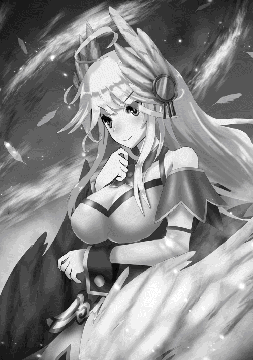
「イエグはお前に敗れはしたものの、どうやら『狂魔の手鏡』を破壊する任務は無事に遂行してくれたようじゃな」
地面に散らばった『狂魔の手鏡』の破片らしきものを見下ろしながらセアルが言う。その時僕はセアルの服に返り血が付いていることに気付き、嫌な予感が脳裏を過ぎった。
「まさかお前......アスタ達を......!!」
「ん、あの人間共のことか？ 勇敢にもワシに戦いを挑んできたものだから相手をしてやった。結果は言うまでもないじゃろう」
無意識に僕の拳に力が入る。それじゃアスタ達の魂もこいつに......!?
「お前......!!」
「おっと動くな」
セアルが指を鳴らす。すると地面からツタのようなものが生え、セレナの首に巻き付いた。
「セレナ!!」
「大人しくワシの話を聞け。さもなくばこの女の胴と首が離れることになるぞ」
セレナを人質にする気か......!! 今のセレナにあれを自力で解くほどの力は残されていないだろう。
「......七星天使のリーダーともあろうお方が、随分と姑息な手を使うんだな。イエグですらそんな真似はしなかったぞ」
「ワシにとっても不本意なやり方じゃが、今は深刻な人材不足で手段を選んでいる場合ではないのでな」
人材不足？ どういう意味だ......？
「それと、あの人間共の魂なら無事じゃ。奪おうとはしたんじゃが、【災害光線】を使う女に阻まれてしまった」
「！」
間違いない、リナのことだ。リナがアスタとスーを守ってくれたのか。
もし七星天使と遭遇したら僕に念話で知らせるようリナには言っておいたはずだが、リナからの念話はなかった。リナのことだから僕に迷惑をかけまいと、セアルに立ち向かう選択を取ったのだろう。
だがそのおかげで、セレナをイエグから救うことができた。もしリナが僕に助けを求めていたら、今頃セレナはイエグに殺されていただろう。
「あの女もなかなかの逸材だと始めは思ったが、残念ながら何者かに力を与えられただけの紛い物に過ぎなかった。もしや与えたのはお前か？」
「......さあな」
僕はセレナの方に目をやる。依然としてセレナの首にはツナのようなものが絡み付いており、セレナは苦しそうに藻掻いていた。
「ユート......アタシに構わないで......!!」
「............」
もはや僕の正体がどうとか言ってる場合じゃない。ここは呪文を使ってでもセアルをブッ倒し、セレナを救い出すしかない。たとえ覇王であることがバレたとしても──
いや、待て。本当にそれが最善の手か？ 今の僕はイエグとの戦いで頭に血が昇って思考が短絡的になっている。まずは冷静になれ。
相手は七星天使のリーダー。今までの七星天使と同じように考えては駄目だ。仮に呪文を使ったとしても、１００％セレナを人質から解放できるとは限らない。そんな賭けでセレナの命を危険に晒すわけにはいかない。
まず、セアルの狙いは何だ？ 僕の魂か？ だが奴からは僕と戦う意志も、僕の魂を奪う意志も感じられない。奴にとっては人質を捕った今が絶好のチャンスのはずだ。それともセレナを人質にしたのは何か別の目的があるのか......？
そういえば先程セアルは「深刻な人材不足」と言っていた。そして最初には「ワシが求めていた人材」という発言もあった。この二つから導き出される奴の目的は──
「......まさかお前、僕を仲間に引き入れようとしているのか？」
「ご名答。お前にはワシらと同じ、七星天使になってもらいたい」
僕を七星天使に......!?
「現在ワシらは人間の魂を集めておるんじゃが、その人員が圧倒的に足りてなくてな。先日七星天使の一人が欠けたということもあって、新たな七星天使を擁立しようと考えていたところなんじゃ」
欠けた一人というのはウリエルのことで間違いない。まさか手にかけた張本人が目の前にいるとは夢にも思っていないだろう。
「しかしそれは誰でもいいというわけではなく、それ相応の実力を伴っていなければならない。イエグを圧倒したお前なら七星天使に匹敵、いやそれ以上の力がある。まさしくワシが求めていた人材じゃ」
まさか覇王である僕を七星天使に勧誘してくるとはな。これほど滑稽な話はない。
だが、これは利用できる。もちろん七星天使などになるつもりはないが、セアルは完全に僕を人間だと思い込んでいる。これを利用しない手はない。
イエグによって『狂魔の手鏡』を破壊された以上、もはやサーシャと交わした取り引きは成立しない。他にゲートの場所を知る手段がなければ『天空の聖域』に乗り込むことは叶わない。
しかしここで僕がセアルの勧誘に応じれば、こいつは必然的に僕を『天空の聖域』に連れて行くことになるだろう。そうすればゲートの場所を知ることができるのと同時に、上手くいけば奪われた魂を取り戻すことができるかもしれない......!!
「さて、どうする？ 七星天使になれば莫大な富と権力が約束されておる。お前にとっても悪い話ではないはずだ」
「......人質を捕られた状態で言われたんじゃ、選択肢を与えられている気がしないな」
「フッ、確かにな。だが先程も言ったように、今は手段を選んでる場合ではないんじゃ」
だがここであっさり承諾すると逆に怪しまれる可能性がある。ここは返事を濁しつつも前向きな態度を見せ、僕を『天空の聖域』に連れて行くよう誘導するしかない。
「莫大な富と権力、か。魅力的な話だとは思うが、いきなり人間から七星天使になれと言われても抵抗があるというのが正直な答えだ」
「ま、それはそうじゃろうな」
「だからひとまず返事は保留にさせてくれ。なんせ僕の今後の人生を大きく左右することだ、すぐに結論は出せない。できればお前達の住環境をこの目で直接見て、色々考えた上で結論を出したい。生憎と僕は天使のことを何も知らないからな」
これが人質を捕られた僕に言えるギリギリのライン。七星天使になるのと引き替えにセレナの解放を要求する手も考えたが、それだと「七星天使になる」というのがセレナを解放する為の建前だと受け取られる怖れがある。
「ユート......何を言って......!?」
僕はセレナに目配せをする。僕に何か考えがあることを察したのか、セレナは口を噤んで小さく頷いた。
セアルは僕の真意を探ろうとしているのか、静かに僕の目を見据えている。さあ、どう出る。
「......確かに、お前の言うことはもっともじゃ。よかろう、まずはお前を『天空の聖域』に連れて行ってやる」
よし、誘導に成功だ。敵との駆け引きにおける最大の武器は、呪文でもステータスでもなく〝言葉〟だということを改めて思い知った。こればっかりは覇王だろうと人間だろうと関係ない。
「その代わり連れて行くのはこの女もだ。いいな？」
「......分かった」
セアルが親指でセレナを指し、僕は了承した。僕に妙な真似をさせない為の抑止というわけか。この場は応じるしかない。
「それではまずここを出るとしよう」
僕らはセアルの【瞬間移動】によって『邪竜の洞窟』から脱出した。
次に目を開けた時、僕は草木が生い茂る山の中にいた。視線の先にはセアルがセレナを肩に担いで立っている。
「どこだここは？」
「人間領の北方面にある山の中じゃ」
「......どうしてこんな所に？」
「地上と天空は【瞬間移動】で行き来することはできん。ここから『天空の聖域』へ行くには〝ゲート〟を介する必要がある」
もちろん【瞬間移動】で行き来できないことも〝ゲート〟を介する必要があることも知っていたが、ここは知らない振りをしておくのが自然だろう。
「で、そのゲートとやらはどこにある？ 見たところ草木ばかりじゃないか」
「そう急かすな、今見せてやる。呪文【認識遮断】を解除！」
すると突如として僕達の目の前に、半径二メートルほどの黒い渦が出現した。ジッと見ているだけで吸い込まれそうな感覚に襲われてしまう。
「これが......ゲート......!?」
「そうじゃ。普段はワシの【認識遮断】によって、天使以外は視認できない状態にしてある。ゲートの存在を人間や悪魔に知られたら面倒なことになるからな」
やはり対策は施してあったか。どうりで覇王軍の悪魔達に捜索させても見つからないわけだ。
「さて。『天空の聖域』に向かう前に、念の為ガブリに連絡しておくか」
「！」
七星天使の一人、ガブリ。分身はこの前僕が消滅させたが、本体は依然として人間の魂を狩り続けているに違いない。
「......まったく、相変わらず困った奴じゃ」
ガブリとの念話を終えたセアルが溜息交じりに呟く。会話の内容は分からないが、どうやらガブリの素行の悪さにはセアルも手を焼いているようだ。
「待たせたな。それでは行くとしよう、『天空の聖域』へ」
セアルはセレナを担いだままゲートの中に身を投じ、僕も後に続く。斯くして僕は大義を果たすべく『天空の聖域』へ向かったのであった。
＊
ユート達が天空の聖域』へ向かった頃、『邪竜の洞窟』にて。
「しっかりしろリナ！ 大丈夫か!?」
「......うっ」
自分の名を呼ぶ声でリナは意識を取り戻し、うっすらと目を開ける。そこにはサーシャの顔があった。
「サーシャさん......どうしてここに......？ アジトに戻ったのでは......」
「【未来予知】でお前達が七星天使にやられる未来が視えて引き返してきたんだ。すまない、もう少し早く視えていれば......」
「......いえ、サーシャさんは何も悪くないです」
リナはゆっくりと上体を起こす。
「動いて平気か？ あまり無理はするな」
「私なら大丈夫です。それより、アスタさんとスーさんを......」
「二人なら意識こそないが命に別状はない。既に私が介抱しておいた」
「......そうですか」
地面に横たわるアスタとスーを見て、リナは安堵の息をついた。
「......リナが七星天使から二人を守ってくれたんだな」
「えっと、守ったと言えるかどうかは分かりませんが......」
サーシャは深々と頭を垂れる。
「ありがとう。お前がいなかったら今頃はアスタもスーも七星天使に魂を奪われていただろう。本当にありがとう......!!」
「い、いえそんな！ 私だってドラゴンと遭遇して気を失っていた時お二人に守っていただきましたし、それに......」
リナは俯き、服を握りしめる。
「相手は明らかに手加減をしていました。最初から本気を出されていたら、今頃は私も......」
自分の無力さを噛みしめるようにリナは言った。
「そ、それよりお兄様とセレナさんは!? 途中で二手に分かれたのですが......!!」
「ああ、これから様子を見に行こうと思っていたところだ。だがアスタ達をここに置いていくわけにもいくまい。二人くらいならなんとか運べるか......？」
「スーさんは私が運びます。サーシャさんはアスタさんを」
「いいのか？ お前は七星天使との戦いで怪我を負っているというのに......」
「怪我をしているのはサーシャさんも同じでしょう？ 私のことなら心配しないでください」
「......すまない。恩に着る」
サーシャは【急成長】を発動して大人の姿になってアスタを背負い、リナもスーを背負って歩き出す。不幸中の幸いと言うべきか、数刻前にドラゴンが暴れてくれたおかげでモンスター達は遠くへ逃げており、リナ達の前に現れることはなかった。
「お兄様とセレナさん、無事だといいんですけど......」
「ユートのことだ、たとえ相手が七星天使でも殺されるようなことはないだろう。セレナもユートが守ってくれたと信じよう」
「......はい」
そして歩くこと数分、リナ達は洞窟奥の大空洞に到着した。
「これは......!!」
壁や地面の大きな亀裂、あちこちに飛び散った血。生々しい戦闘の跡を見て、リナとサーシャは顔をしかめた。
「お、お兄様とセレナさんがどこにもいません!!」
「七星天使の姿も見当たらない......。ここに来るまで誰ともすれ違わなかったということは、転移呪文で離脱したのか......？」
するとサーシャは地面に散らばる鏡の破片に目が止まり、その内の一つを拾い上げた。
「それは......？」
「......おそらく『狂魔の手鏡』の破片だ」
「えっ!? そ、それじゃ......!!」
「ああ。ユート達が手に入れるより先に、七星天使によって破壊されたと見て間違いないだろう......」
サーシャは唇を噛みしめる。『狂魔の手鏡』はサーシャ達にとって七星天使を抹殺する為の唯一の希望だったので、その悔しさは計り知れないものがあった。
「まさか、お兄様とセレナさんは、七星天使に魂を奪われて......!!」
「......ユートほどの男がそう簡単に敗れるとは思えない。それに魂を奪われたのならユートとセレナの身体はここに残っているはずだ。わざわざ魂の抜け殻を持ち帰る意味はないだろうしな」
「で、では、お兄様達はどこに──」
その時リナは何かを思い出したような顔をした。
「どうしたリナ？」
「......セアルという人は、私と戦っている最中に『求めていた人材』『七星天使に引き込む』などと言っていました。その時はよく意味が分からなかったのですが、もしかしたらお兄様は......」
サーシャはしばらく考え込んだ後、口を開いた。
「あくまで推測だが、セアルはユートの力に惚れて七星天使に引き込もうと考えた。そこでセアルはセレナを人質に取り、言うことを聞かざるを得ない状況にしてユートを『天空の聖域』に連れて行った......といったところか」
「そ、それではお兄様とセレナさんは『天空の聖域』に......!?」
「その可能性は高いな」
ユートが敢えてセアルの誘いに乗ったという点を除けば、サーシャの推測はほぼ当たっていた。
「......サーシャさん、お願いがあります。私にゲートの場所を教えてください」
「！」
思わぬリナの発言に、サーシャは目を丸くする。
「『狂魔の手鏡』を手に入れたらゲートの場所を教えるという約束をお二人がしていたことは知っています。だけどサーシャさんの推測が本当だったら、誰かがお兄様達を助けに行かなければなりません。だから、どうか......!!」
深く頭を下げるリナ。その言葉にはユートの力になりたいという想いが強く表れていた。
「......お前はアスタとスーの命の恩人だ。教えるのは構わないが、一人で『天空の聖域』に向かうなど無謀にも程が──」
「うっ......」
その時アスタに意識が戻った。直後にスーの目もうっすらと開く。
「よかった。二人とも目が覚めたか」
「......すまねえサーシャ。もう下ろしてくれて大丈夫だ」
「......私も。ありがとうリナ」
アスタとスーは壁に寄りかかるように座り、サーシャから簡単に事情を説明された。
「ユートとセレナが『天空の聖域』に連れて行かれた......!?」
「あくまで推測の域だが、私はほぼ間違いないと思っている」
「くそっ。オレが不甲斐ないせいで......!!」
「......悪いのはアスタだけじゃない」
アスタは地面を叩き、スーは拳を握りしめる。七星天使のセアルに為す術もなく敗れ、二人は己の弱さを痛感せざるを得なかった。
「だが、そうと決まればやることは一つだ。『天空の聖域』に乗り込んでユートとセレナを取り戻すしかねえ......!!」
「馬鹿なことを言うなアスタ。そのボロボロの身体で一体何ができる」
強力なドラゴン、そしてセアルとの戦闘で、アスタ達のＨＰとＭＰは風前の灯火と化していた。
「それに七星天使の力はお前達も身をもって味わったはずだ。たとえ万全の状態で『天空の聖域』に向かったとしても何もできはしない。死にに行くようなものだ」
「それじゃセレナ達を見捨てろってのか!? このままやられっぱなしで終わるなんてオレのプライドが許さねえ......!!」
「私もアスタと同じ気持ち。だからゲートの場所を教えてサーシャ」
「私からもお願いします！」
アスタ、スー、リナの三人は真剣な眼差しをサーシャに向ける。やがてサーシャは小さくかぶりを振った。
「......駄目だ。その身体で『天空の聖域』に行かせるわけにはいかない」
「サーシャ!! お前仲間を何だと──」
「早とちりするな。私は〝その身体で〟と言ったんだ」
「......どういう意味だ？」
当惑顔のアスタ達に、サーシャは静かに右手をかざした。
「呪文【自己犠牲】！」
サーシャが呪文を唱えると、三人の身体が温かい光に包まれた。
「凄い。身体の傷が治っていく......！」
「サーシャお前、回復呪文も持ってたのか!?」
「......残念ながらこれは回復呪文ではない」
数秒後、サーシャはその場で膝をついた。その表情はまるで全力疾走した直後のように疲れ果てていた。
「さ、サーシャさん!? どうしたんですか!?」
「......【自己犠牲】は自分のＨＰとＭＰを他者に分け与える呪文だ。私のＨＰとＭＰをギリギリまで削り、お前達三人に与えたんんだ」
「サーシャ、お前......！」
「『天空の聖域』に向かうべきではないという私の考えは変わらない。だがお前達のことだ、いくら私が止めても無駄だろう」
サーシャは息を切らしながら、力無く微笑む。
「それに、ユートとセレナを助けたいという思いは私も同じだからな。これは私からのささやかな贈り物だ。と言っても、私一人分のＨＰとＭＰでは気休めにしかならないだろうが......」
「いや、十分だ。助かったぜサーシャ」
それからサーシャは懐から四つ折りにされた紙を取り出し、リナに手渡した。
「サーシャさん、これは？」
「ゲートの場所が示された地図だ。まさかこのような形で教えることになるとは思っていなかったが」
リナ達は地図を広げ、ゲートの場所を確認する。
「うげっ、ゲートって人間領の北方面にあるのかよ。オレ達は転移呪文なんて持ってねーし、普通に歩いたら三日は掛かっちまうぞ」
「私が【生類召喚】で飛行モンスターを呼び出して空を飛んで行けば、時間は大幅に短縮できる」
「それだ！ ナイスアイデアだぜスー！」
「も、モンスターに乗るんですか......!?」
いかにも不安そうな表情のリナ。
「ん？ どうしたリナちゃん、もしかして高所恐怖症か？」
「いえ、そういうわけではないのですが、モンスターに乗るのなんて初めてなので、途中で振り落とされたりしないか不安で......」
「なあに、オレも初めてだし大丈夫だって。なあスー？」
「うん。モンスターは【憑依】で常に私がコントロールするから心配は無用。アスタは途中で振り落とすかもしれないけど」
「おおい!! 理不尽にも程があるだろ!!」
三人のやりとりを見て、サーシャは呆れたように溜息をつく。
「お前達、そんな話をしている暇はないはずだろう」
「っと、そうだった。それじゃ行くぜ、『天空の聖域』へ！」
アスタ達はユートとセレナを取り戻すべく、『天空の聖域』に乗り込む覚悟を決めたのであった。
＊
やや時は遡り、人間領の東方面にて。そこでは七星天使のガブリによる人間の魂狩りが引き続き行われていた。
「ンッフッフッフ。やっぱ人間の怯えきった顔は何度見ても飽きねえなあ......!!」
とある町の路地裏で、ガブリは一人の若い女性を追い詰めていた。女性は恐怖に満ちた目でガブリの方を見ている。
「お願いします......どうか命だけは......」
「安心しな、奪うのは命じゃなくて魂だからよ。さあて、そろそろ鬼ごっこも終わりにしようか......！」
ガブリが【魂吸収】の呪文で女性の魂を奪おうした、その時。ガブリはセアルからの念話をキャッチし、面倒臭そうに舌打ちをした。
「何の用だセアル。こっちは取り込み中だってのによぉ」
『それは悪かったな。お前に報告することが二つある。一つ目は無事「狂魔の手鏡」の破壊に成功したこと。二つ目はこれからワシが「天空の聖域」に帰還することじゃ。今ワシはゲートの前にいる』
「はあ？ 何回行ったり来たりすりゃ気が済むんだよ。まさかまた魂狩りを中断して戻ってこいとか言うんじゃねーだろうな？」
『いや、お前は戻らなくていい。むしろ戻ってくるな。お前は人間領で魂狩りを続けていろ』
邪魔者のような扱いに、ガブリは少なからず苛立ちを覚える。
「けっ、そーかよ。で、帰還する理由は何だ？ まさかマジで人間の魂を奪うのが辛くなって引き籠もることにしたのか？」
『ほざいてろ。ちょっとした事情ができただけじゃ。それが済んだらワシも魂狩りを再開する』
「あぁ？ 何だよちょっとした事情って？」
『お前が知る必要はない。用件は以上じゃ』
「おい!! そこまで言ったんなら教えたっていいだろうが──」
そこでセアルから念話が切れる。二度目の舌打ちをするガブリ。
「セアルの奴、勿体つけやがって......。あ？」
ガブリは先程の女性が目の前から姿を消していることに気付いた。ガブリがセアルと話している隙に逃げたようだ。
「あーあ、やっちまった。まあ人間は腐るほどいるんだ、一人逃がしたところでどうってことねえか」
ガブリは後頭部を掻きむしった後、不敵な笑みを浮かべる。
「にしても、戻ってくるなと言われたら逆に気になっちまうのが、オレの性なんだよなあ......!!」
今ここに、更なる波乱が生まれようとしていた。
ゲートの中に飛び込んだ僕は、激しい風の奔流に身を任せ、そのトンネルのような空間を突き進んでいく。やがて前方から差し込む眩い光に僕の視界が覆われた。
気付いた時には、僕はゲートの出口に立っていた。そして目の前に広がる光景に、思わず僕は見とれてしまった。
「ここが『天空の聖域』......！」
見渡す限り、雲、雲、雲。一体どういう原理なのか、雲の上には様々な建造物が建ち並んでいる。今僕が立っているのも雲の上だ。もし天国が存在するとしたら、きっとこのような世界なのだろう。
「どうじゃ、『天空の聖域』は。地上の何倍も素晴らしいところじゃろう」
隣りに立っているセアルが言った。悔しいが認めざるを得な──
「っ!?」
不意に強烈な頭痛の吐き気が僕を襲った。まるで害虫が身体中を這いずり回るような感覚だ。何だこれは、攻撃を受けたわけでもないのに一体どうして......!?
そうか、この『天空の聖域』はいわば天使達の世界。天使と悪魔は対極の存在であり、悪魔がこの世界に立ち入ることなどあってはならない。おそらくこの空間そのものが覇王の身体には毒であり、僕にダメージを与えているのだろう。
「ん、どうかしたか？」
僕の異変を察したのか、セアルが僕に声を掛ける。ここで怪しまれるとマズい。万が一にも僕の正体がバレたら全てが水の泡だ。
「......いや、何でもない。ちょっと立ち眩みがしただけだ」
僕はなんとか平静を取り繕いながら言った。
「そうか。ま、初めてゲートを通れば目眩くらいはするじゃろうな」
僕は胸を撫で下ろす。とりあえず怪しまれてはいないようだ。
ＨＰ ９９９９９９９８４５／９９９９９９９９９９
ステータスを確認すると、ＨＰが秒単位で削られているのが分かった。このＨＰの量なら心配はいらないだろうが、この頭痛と吐き気がずっと続くのは辛いな......。
「さて、まずはお前を『七星の光城』に招待するとしよう」
「『七星の光城』......？」
「ワシら七星天使の城郭じゃ。本来なら人間など立ち入ることすら許されない。光栄に思うことじゃな」
ということは、残りの七星天使もその『七星の光城』にいるのだろうか。これまで僕が直接目にした七星天使はセアル、ガブリ、イエグ、ウリエル（故）、そしてキエルさんの五人。つまり僕が会ったことのない七星天使がまだ二人いる。
そしてその内の一人は、昨日覇王城でユナが話してくれた、ユナの妹のミカ。できることならこの目で見ておきたい。
「おっと、その前に。呪文【認識遮断】！」
セアルが先程解いた【認識遮断】を再発動し、僕の視界からゲートが消えた。どうやらまた認識できない状態に戻されたようだ。
「では行くとしよう。呪文【瞬間移動】！」
セアルの【瞬間移動】により、僕は巨大な城の前に連れてこられた。ここが『七星の光城』か。想像よりも遙かに大きく、覇王城が小さく思えてしまうほどだ。たかが数人の為にこんな城を用意するなんて贅沢極まりない話である。
「！」
その時僕はセレナの姿が消えていることに気付いた。さっきまでセアルが肩に担いでいたはず......！
「お前、セレナをどこにやった!?」
「落ち着け。いつまでも肩に担いでいては邪魔になるからな。さっきの【瞬間移動】の時にあの女だけは別の場所に転移させた」
「何......!?」
「正確な場所は教えられんが、『七星の光城』内のどこかとだけ言っておこう。お前が大人しくしている限り安全は保証してやるから安心しろ」
「......!!」
僕は自分の感情を抑え込むように拳を握りしめる。今は冷静になれ。ここに来た目的を忘れるな。
まず僕がやるべきことは、こいつらに奪われた人々の魂がどこにあるのかを知ること。できれば何故こいつらが人間の魂を必要としているのかも聞き出したい。セレナのことは心配だけど、今はこいつの言葉を信じるしかない。
「城に入る前に、右腕を出してもらおうか」
「......何をする気だ？」
「ちょっとした〝おまじない〟をかけるだけじゃ。別に危害を加えるつもりはないから警戒するな」
「............」
言われた通り右腕を差し出すと、セアルは僕の手首に人差し指を当てた。
「呪文【魔封じの枷】！」
セアルが呪文を唱えると、僕の手首に手錠のようなものが装着された。
「何だこれは？」
「【魔封じの枷】は呪文の発動を封じる呪文じゃ。その手錠が装着されている限り、お前は呪文を発動することが一切できない」
「......物騒なおまじないだな」
「なんせお前はイエグを圧倒した人間じゃ。人質を捕るだけでは抑止としては心許ないのでな」
僕の【変身】が解除されていないってことは、この手錠は現在発動中の呪文に対しては作用しないようだ。どちらにせよ呪文を使うつもりなんてなかったから、こんな手錠はあってもなくても変わらない。
しかしこんな手錠を装着させるあたり、セアルは僕が呪文の力でイエグを圧倒したと思い込んでいるようだ。それはそうだろうな、ただの人間が拳だけで七星天使をねじ伏せたなんて普通思うはずがない。
「！」
扉の前に立った時、ふと横の壁に刻まれている文字が視界に入った。
第一席 セアル
第二席 キエル
第三席 ラファエ
第四席 ガブリ
第五席 ミカ
第六席 イエグ
第七席 ウリエル
どうやら七星天使の序列を表しているようだ。リーダーのセアルはやはり第一席か。そして何気に第二席のキエルさん。ユナの妹、ミカの名もちゃんとある。
この中で今の僕が人間に変身した覇王だと知っているのはキエルさんとガブリのみ。だけどキエルさんは地上でバイト中だろうし、ガブリは魂狩りの最中だと先程確認できた。よってここに僕が覇王だと知る者はいないので、正体がバレることはないと言っていいだろう。
「では入るとしよう。付いてくるがいい」
重々しい音と共に扉が開かれる。僕はセアルの後に続き、七星天使の根城に足を踏み入れた。
高級ホテルのような内装に感嘆しながら、僕はセアルの後ろを歩く。城の外もそうだったが、中にも至る場所に天使達が配置されており、虫一匹の侵入も許さないような警備態勢が敷かれている。やがて僕はとある部屋の前まで案内された。
「ひとまずお前にはこの中に居てもらう」
「......ここは？」
「七星天使の一人、ミカの部屋じゃ」
「......！」
セアルは軽くノックをし、ドアを開ける。そこにはベッドで眠っている女の子と、その傍で看病している少年の姿があった。
「あっ、おかえりなさいセアルさん」
「ミカの容態はどうじゃ？」
「今のところは安定しています。ところでその人は......？」
その気弱そうな少年は、訝しげに僕を見ながらセアルに尋ねる。
「地上から連れてきた人間じゃ。ワシは此奴を次の七星天使にしようと考えている」
「し、七星天使に!?」
「うむ。ワシが声をかけたら快く付いてきてくれた」
快く、ね。人質を取っておいてよく言ったもんだ。
「でも、どうしてその人を......？」
「此奴はこう見えてイエグをねじ伏せた人間じゃ。七星天使に相応しい実力を備えていると判断した」
「その人が、イエグさんを......!?」
信じられない、といった顔で少年は僕を見つめる。
「まずはワシらの住環境を見分した上で結論を出したいそうじゃ。もちろん人間のまま七星天使にするわけにはいかんから、ワシの【天使契約】で此奴を天使にしてからの話になるがな」
天使契約......。僕がリナに使った【悪魔契約】の天使バージョンってところか。当然天使などになるつもりはないが、果たして覇王の僕にその呪文が有効なのかどうかは少しばかり興味がある。
「さて、ワシはこれから再び地上に向かう。なんせ瀕死のイエグを地上に置いてきたままじゃからな。ちゃんと生きているといいんじゃが......」
「そ、そんなに酷い状態なんですか？」
「ワシが【緊急回避】で逃がしていなかったら、そのまま此奴に殺されていたじゃろう。ただしこの呪文は座標を指定する手間を省ける代わりに、どこに飛ばされるか分からないという欠点があるからな。咄嗟の事態でやむを得なかったとはいえ、見つけ出すのに一苦労しそうじゃ」
溜息交じりにそう言った後、セアルは僕に目を向ける。
「お前にはワシが戻ってくるまでの間に結論を出してもらいたい。とはいえ、もし承諾しなかった場合〝あの女〟がどうなるか、それは想像に任せるがな」
次にセアルは少年の方に目を向ける。
「ラファエにはその間、この男の監視をお願いしたい。【魔封じの枷】で呪文の発動を封じておるから下手な真似はできないじゃろうが、念の為にな」
「......分かりました」
なるほど。何故僕をこの部屋に連れてきたのか疑問だったけど、こいつに僕を見張らせる為か──
ん？ ちょっと待て、今こいつラファエって呼ばれたよな？ 確かさっき見た七星天使の序列の第三席にラファエという名前があったはず......。
ってことは、こいつも七星天使なのか!? 見た目的に七星天使の補佐とか見習いとかそんなポジションだと勝手に思い込んでいた。しかも第三席ってことは単純に考えて七星天使の中で三番目に強いってことだよな？ 人は......いや天使は見かけによらないものだ。
「では頼んだぞ、ラファエ」
そう言い残し、セアルは退室する。それから僕は改めてベッドで眠っている女の子に目を向けた。
似ている......ユナに。この子がユナの妹、ミカか。昨日ユナが僕に語ってくれた話が自然と思い起こされる。
天使と悪魔の間に生まれたユナとミカ。迫害から逃れる為に森の中で肩を寄せ合って生きてきた二人も、今では四滅魔と七星天使という形で決別することになってしまった。何か僕にできることはないものか......。
「あ、あの、僕はラファエっていいます。よろしくお願いします」
するとラファエがオドオドした様子で僕に自己紹介をした。なんか七星天使というわりには威厳が全く感じられないな。だがこいつが第三席というのは確かな事実だし、油断は禁物だ。
「僕はユート。セアルが言ってたように、地上から来た人間だ」
そう名乗った後、僕はミカとラファエを交互に見る。
「......さっきまでお前は眠っている女の子と密室で二人っきりだったわけか」
「なっ!? い、言っておきますけど何も変なことはしてませんよ!? ずっと看病だけに専念してましたから!!」
「本当に？」
「本当です!!」
顔を真っ赤にするラファエ。まあそういうことをする奴には見えないし、実際何もしていないのだろう。
「ところでその子に何かあったのか？ あまり顔色が良くなさそうだけど」
「詳しいことは僕にも分かりませんが、地上に出向いている時に体調を崩したそうです。ミカさんは元々身体が弱い人ですから、急な環境の変化が原因かもしれないとセアルさんは言っていました」
元々身体が弱い？ ユナからそんな話は聞いてないが......。
ミカの身体には天使と悪魔の血が半分ずつ流れている。この『天空の聖域』に来た時に僕が頭痛や吐き気に襲われたのは、僕が覇王であり悪魔だからと考えて間違いない。ということは、悪魔の血が半分流れているミカも、この空間の影響を少なからずを受けているはずだ。もしかしたらそれが原因じゃないのか？
つまりミカは元々身体が弱いのではなく、この空間の影響によって身体が弱くなった、と考えるのが妥当だ。だがセアルやラファエはそのことには一切触れていなかった。おそらくミカは自分が天使と悪魔の間に生まれた子であることは誰にも話していないと思われる。
「どうかしたんですか？」
「......ちょっと考え事をしてただけだ。気にするな」
少し迷ったが、これは僕の口から言うべきことではないと判断し、黙っておくことにした。
「ユートさん、でしたよね？ イエグさんをねじ伏せたというのは本当なんですか？」
「......まあな」
「す、凄いですね。七星天使より強い人間がいるなんて思いませんでした」
本当は人間じゃないけどな。
「それでユートさんはセアルさんに実力を認められて、この城に？」
「ああ。と言っても人質を取られて強制的にだけどな。あいつはどうしても僕を七星天使にしたいらしい」
「人質!? それじゃさっきセアルさんが言ってた〝あの女〟って......」
「その人質のことだ。今頃酷い目に遭わされてるんじゃないかと思うと、気が気じゃなくなる」
セレナのことが頭に浮かび、無意識に拳に力が入る。
「......それは大丈夫だと思います。セアルさんは何の意味もなく誰かを傷つけるような人ではありませんから。きっとその人は安全な場所にいると思います」
「大勢の人間の魂を容赦なく奪ったりしてるのにか？」
「!! それは......」
一瞬ラファエの表情に影が差す。
「......それは、ちゃんと意味のあることですから」
「何の意味がある？ 人々の魂を集めて一体何をするつもりなんだ？」
もしかしたらこいつから七星天使が人々の魂を狩っている理由と目的を聞き出せるかもしれない。そう考えて僕は尋ねた。
ラファエは少し逡巡する様子を見せた後、静かに口を開けた。
「『幻獣の門』の封印を解く為です」
「......幻獣の門？」
「はい。『幻獣の門』の封印を解くには、最低でも千の人間の魂が必要なんです」
「どうしてそんな門の封印を解こうとしてるんだ？」
「悪魔の頂点に君臨する存在......覇王を滅ぼす為です」
えっ？ 僕？
「規格外の力を備えた覇王に対抗するには、もはや幻獣の力を利用する以外に方法はありません。だから人間の魂を集めて『幻獣の門』の封印を解こうとしているのです」
「......なるほど」
僕は頭を抱えた。ということは人々の魂が奪われているのは間接的に僕が原因ってことになるじゃないか。何もそこまでして僕を滅ぼそうとしなくたっていいだろう。そりゃ大昔に覇王のせいで世界が滅亡しかけたという逸話が残ってるくらいだし、気持ちは分からなくもないけどさ......。
「ユートさん、顔色悪いですよ？ どうかしました？」
「......気にするな。それよりお前はずっとこの城にいるみたいだけど、魂狩りには加わってないのか？」
「......はい。人間の魂を奪うなんて、僕にはとても......」
ラファエの表情が曇る。こいつもキエルさんと同じく、人間の魂を狩ることに関しては反対派のようだ。やはり事が事だけに全員が足並みを揃えるのは難しいのだろう。
だがラファエの場合、覇王を滅ぼすこと自体に反対していそうな気もする。上手くいけばこちら側に引き入れることができるかも......。
「ちなみに覇王のことはどう思ってるんだ？ 実はそこまで滅ぼすべき存在とは思ってなかったり──」
「いえ、覇王が滅びるべきという考えは僕も同じです」
さいですか。
「一ヶ月ほど前に、覇王によって五万の軍勢が全滅させられたと聞きました。絶対に許せません。覇王が人々の平和を脅かす存在であることは間違いないと思っています」
「うっ......」
返す言葉もない。言い訳をさせてもらうなら、あの時はまだ覇王に転生したばかりで力の調整がままならなかっただけで、全滅させるつもりなんてなかったというか......。
ただ、僕が五万もの人間の命を奪ってしまったことは紛れもない事実だ。そんな僕が人々の魂を取り戻そうとしてるなんておかしな話だということも分かっている。分かった上で僕はここまで来たんだ。
「だけど覇王を滅ぼす為に大勢の人間を犠牲にするというのは、間違ったやり方だと思います。僕は何度もやめるようセアルさん達に言ったのですが、聞いてもらえず......。もう何が正しくて何が正しくないのか、分からなくなってしまいました」
そう話すラファエの表情は見るからに辛そうだった。こいつは心から人間の魂を狩ることを否定している。七星天使にもまともな奴がいるんだな。
......こいつになら話していいかもしれない。僕がここに来た目的を。
「奪った人々の魂は今どこにある？」
「この城の最上階にある『魂の壺』の中です。どうしてそんなこと......？」
「奪われた魂を取り戻すためにここまで来た、と言ったら信じるか？」
「......え？」
ラファエは目を丸くして僕を見つめる。
「人々の魂を取り戻す為に敢えてセアルの誘いに乗った、と言ったら信じるか？」
「............」
ラファエはしばらく沈黙した後、
「信じます」
そう口にした。そしてラファエは覚悟を決めた目を僕に向けた。
「行ってくださいユートさん。『魂の壺』を破壊すれば全ての魂は持ち主の身体へと還っていくはずです」
「！ いいのか？ セアルから僕を監視するように言われたお前が......」
「いいんです。ただ、『魂の壺』には強力な保護呪文がかけられているはずです。破壊するのは無理かもしれませんが......」
「その情報だけで十分だ」
まず僕は【魔封じの枷】によって手首に装着された手錠の破壊を試みる。しかしその手錠はビクともしなかった。やはり力でどうこうできる代物ではないか。もし手錠がなかったらその保護呪文を【解呪】で解除できるというのに。
だがたとえ今は『魂の壺』を破壊できなくとも、次に僕がこの城に来た時にすぐさま破壊できるよう、場所と様相を把握しておく必要がある。それにもしかすると僕のパワーなら保護呪文ごと粉砕できるかもしれない。
「それと、この城には何千もの下級天使が配置されています。それらの警備をかいくぐって最上階に辿り着くのは困難を極めるかと思いますが......」
「それは問題ない」
僕は椅子から立ち上がる。欲しい情報は手に入った。
「それじゃ僕は行く。色々ありがとなラファエ。お前に会えてよかった」
「そんな、僕は何も......」
「っと、その前に」
僕はラファエのもとに歩み寄り──
「がはっ......!?」
その腹に拳を叩き込んだ。
「ユートさん......何を......!?」
「〝逃がした〟より〝逃げられた〟の方がお前にとって都合が良いはずだ。悪く思うな」
ラファエは気を失い、僕の身体に寄りかかる。僕はそっとラファエを床に寝かせた。安心しろ、お前の想いは絶対に無駄にしない。
「......さて」
ベッドで眠るミカの顔を横目に、僕は部屋を出た。『魂の壺』の所に向かう前に、僕にはやるべきことがある。それは言うまでもなくセレナの救出だ。セレナはこの城のどこかにいるとセアルは言っていた。一刻も早く助けなければ......!!
＊
一方、人間領にて。サーシャ、アスタ、スー、リナの四人は『邪竜の洞窟』を出た後、スーが【生類召喚】で呼んだモンスターの背中に乗って空を飛行していた。目的地はもちろん〝ゲート〟である。
「おいスー、もっとスピード出せねーのか!?」
「無理。このモンスターのＡＧＩ（速さ）的にこのスピードが限界」
「なら限界を超えさせろ！ 早くしねーとセレナとユートが痛っ!?」
サーシャがアスタの頭をグーで叩いた。
「落ち着けアスタ。気持ちは分かるが、スーは【憑依】の発動中なのだからあまり話しかけるな」
「......そうだな、すまん。てか今更だけどサーシャまで付いてくることなかったんじゃねーか？ もうゲートの場所が標された地図も貰ったことだしよ」
「ゲートは何らかの呪文で外部から視認できない状態にされている。それを探す手間を省くためにも、正確な場所を知る者が必要だろう」
そういうことか、とアスタは納得した。
「でもアジトのガキ共のことはいいのか？ そろそろ起き出す時間だろ？」
「そちらも気掛かりだが、今はセレナとユートの救出が最優先だ。アジトの様子は【千里眼】でいつでも把握できるし、何かあったらすぐに戻るさ」
「そっか。にしてもモンスターに乗って空を飛ぶのってスッゲー爽快だな！ リナちゃんもそう思うだろ？」
「............」
「ん？ どうしたリナちゃん？」
アスタが振り返ると、そこには白目を剥いて気を失っているリナの姿があった。
「うおーい!! リナちゃんまた気絶してんぞ！ やっぱ高所恐怖症だったのか!?」
「......リナは振り落とされないように私が支えているから安心しろ。目的地に着いたら起こしてやるとしよう」
半ば呆れたようにサーシャは言った。
＊
ミカの部屋を出た僕は、まず人質に取られているセレナの救出を決意した。セアルが不在の今がチャンスだ。
だがセレナの居場所はこの城のどこかというだけで、それ以外の情報は何もない。手間は掛かるが城中の部屋を一つ一つ見て回るしかない。今ほど【千里眼】を使いたいと思ったことはないな。
「はあっ！」
最初に見つけた部屋には鍵が掛かっていたので、僕はドアを素手で破壊した。しかし中には誰もいない。この城ってかなり大きいし、何回もこれを繰り返さなければならないと思うと気が遠くなりそうだ。
「おいお前!! そこで何をしている!?」
ドアが破壊される音を聞きつけたのか、二人の天使が僕の前に現れた。早速見つかってしまったか。もっと目立たないように行動すべきだったかもしれないが、どうせ遅かれ早かれ見つかっていただろう。
「......お前達、セレナという人間の女の子がどの部屋にいるのか知らないか？」
「セレナ？ 誰だそれは！」
「それよりお前は何者だ!? 天使ではないな!?」
駄目もとで聞いてみたけど、やはり知らないか。セレナを人質に取られてからそれほど時間は経ってないし、下級天使にまで情報が出回っていないのだろう。
「お前達に用はない。どけ!!」
「ぐはっ!?」
「がふっ!?」
僕はその二人をワンパンで倒し、次の部屋へと向かう。依然としてＨＰは減少を続けているものの、頭痛と吐き気にもだいぶ慣れてきたし、ただの天使をねじ伏せるくらい呼吸するよりも簡単なことだ。
「おい、何だ今の音は!?」
「向こうから聞こえたぞ！」
間髪を入れず、遠くの方から別の声が聞こえてきた。面倒なことになる前に早くセレナを見つけなければ。
その後も僕はドアの破壊と下級天使の撃破を何度も繰り返し、城中を駆け回った。
＊
その頃セレナはというと、城三階の一室に閉じ込められていた。ドアは外側から鍵が掛けられているので出ることはできず、独房のように狭くて暗い。
「ユート......大丈夫かな......」
セレナはどうすることもできず、ただ体操座りで踞っていた。イエグとの戦いで、セレナのＨＰとＭＰはほとんど残っていなかった。
「アタシのせいでこんなことになって......ユートや皆に合わせる顔がない......」
膝に顔を埋めるセレナ。その時、ドアの鍵が開くような音がした。
「誰......？」
ユートが助けに来てくれたのだろうか。そんな淡い期待を抱きながらセレナは顔を上げる。間もなく部屋のドアが開いた。
「おっ！ ビンゴじゃねーかオイ！」
それはユートではなく、七星天使の一人──ガブリだった。
「セアルの奴が急に『天空の聖域』に戻るとか言い出したもんだから地上で面白い奴でも見つけてきたのかと思って来てみたら、当たりだったなぁ。骨折り損にならなくてよかったぜ」
「何者よ、アンタ......!?」
セレナは震える声でガブリに問う。
「俺か？ 俺は七星天使の一人、ガブリ様だ」
「!! 七星天使......!?」
「いやー、セアルからは戻ってくるなと指示されたんだが、そう言われると逆に気になっちまうのがオレの性でさあ。困ったもんだよマジで！」
そう言いながら、ガブリはセレナの身体を舐めるように眺め回す。
「にしてもスゲー上玉だなぁ。セアルはこんな女を拾ってきて何をするつもりなんだ？ ま、そんなことはどうでもいいか」
ガブリはドアを閉めると、気味の悪いニヤケ面を浮かべながらセレナの方へ近付いていく。
「人間の女になんざ興味はなかったが、お前は特別だ。この俺が直々に可愛がってやるぜえ......！」
「嫌っ......来ないで......!!」
セレナは後ろに下がるが、すぐに背中が壁にぶつかる。この狭い部屋でセレナに逃げる場所などあるはずもなく、ガブリに抗う力も残ってはいなかった。
「ンッフッフッフ。怯える顔もそそるねえ。だが安心しな、すぐに俺が今まで味わったことのないような快楽を体験させてやるからよぉ」
「助......けて......!!」
恐怖のあまり、セレナの目から涙が溢れ出る。そしてガブリはセレナの服を荒々しく掴んだ。
「助けてユート!!」
その時、激しい音と共にドアが吹き飛んだ。振り返ったガブリは驚愕の表情でそこに立つ人物を見た。
「テメエは......覇王!? 何故ここに......!!」
＊
遠くの部屋からセレナらしき声が聞こえたのでドアを拳で粉砕したところ、そこには七星天使のガブリと、今にも襲われそうなセレナの姿があった。
「今すぐその汚い手をどけろ......!!」
僕は鋭くガブリを睨みつける。ガブリは驚愕の表情を浮かべるが、すぐに不敵に笑ってみせた。
「ンッフッフッフ。こんな所でまた会えるとは光栄だなあ。ヒロインのピンチに正義のヒーロー登場ってかぁ？ カッコイイなオイ！」
「............」
「そうそう、この間はよくもやってくれなぁ。なんでテメーがこんな所にいるのかは知らねえが、この際そんなことはどうだっていい。この場でテメエから受けた屈辱を百倍にして返して──がはっ!!」
僕はガブリの話を最後まで聞かず、その胸に拳を貫通させた。
「......これ以上空気を汚すな」
ガブリは床に倒れ、そのまま塵となって消滅した。この手応えの無さ、やはりこいつも分身か。
「セレナ!!」
僕がセレナのもとに駆け寄ると、セレナは泣きじゃくりながら僕の身体に思いっきり抱きついてきた。
「ユート......怖かったよおっ......!!」
「......ごめんな、遅くなって」
セレナの声を耳元で聞きながら、僕は優しく抱き締め返した。
「もう平気か？」
「......うん」
しばらくするとセレナは泣きやみ、目元を擦りながら小さく頷いた。
「ありがとうユート。助けに来てくれて......」
「そんなの当然だろ。それより急ごう、ここに来るまでにもだいぶ派手にやらかしたし、見つかるのは時間の問題だ」
そう言いながら僕はセレナに背中を向ける。
「乗ってくれ。イエグとの戦いでまともに動ける状態じゃないだろうし」
「......うん。迷惑ばっかりかけてごめん」
セレナは躊躇うことなく僕の背中に乗った。普段のセレナだったら「どさくさに紛れて変なところ触る気でしょこの変態！」とか言いそうなものだけど、今はそんな余裕もないのだろう。
「しっかり掴まってろよ」
セレナが思ったより軽いことに驚きつつ、僕は立ち上がった。部屋を出る前、僕は一度足を止めて振り返り、ガブリの分身が消滅した跡を見つめた。
以前ガブリの分身と戦った時、あいつは僕を見て「テメーの魂は人間数万人分に匹敵するだろう」と言っていた。あれは幻獣の復活に必要な魂のことを言ってたんだろうが、ラファエは「幻獣を復活させるのは覇王を滅ぼす為」だと話していた。つまりガブリの発言は手段と目的が逆転していることになる。
ラファエの話が嘘だったとは思えない。となると、ガブリには他の七星天使とは違う目的があるのか......？
「どうしたのユート？」
「......いや、何でもない」
まあ、今そんなことを考えてもしょうがない。僕は部屋を出て走り出した。
「ぬおっ......！」
それと同時に僕の背中に二つの柔らかいものが押し当てられ、思わず声を出してしまった。心が健全な男子である以上、この感触には動揺せざるを得ない。
「何よ、変な声出して」
「いやその、セレナの胸が、当たって......」
「しょ、しょうがないでしょ!? アンタがしっかり掴まってろって言ったんだし!! 思う存分堪能すればいいじゃない!!」
「おおおっ!?」
セレナが更に強く胸を押し当ててくる。セレナってこんなことする子だったっけ!? ともかく身体の底から力が漲ってくるようだ......!!
「......そういえばさっきのガブリって奴、ユートのことを知ってるみたいだったけど、もしかしてどこかで会ったことあるの？」
「えっ!? あ、会ったことあるわけないだろ!? 完全に初対面だ！」
「そうなの？ なんかユートを見て、えっと......ハオウ？ そんなこと言ってたし、どういう意味なのか気になってたんだけど......」
「ど、どういう意味なんだろうな！ 僕にもサッパリだ！ 多分どっかの誰かと勘違いしてたんじゃないか!?」
「......そうよね」
それ以上セレナが追及してくることはなく、僕は密かに安堵の息をついた。僕の正体が覇王だなんてセレナは想像もしてないだろうな。
「それより城から出る前に寄っておきたい所があるんだけど、いいか？」
「......別にいいけど、どこに行くつもりなの？」
「この城の最上階だ。そこに『魂の壺』が置かれているらしい」
「『魂の壺』？」
「その壺の中に、七星天使が奪ってきた人々の魂が集められているそうだ」
「!! それじゃ、アタシのお姉ちゃんの魂も......!?」
「ああ。きっとその壺の中にある」
間もなく前方から複数の足音が近付いてくるのが分かった。
「いたぞ、あそこだ！」
「絶対に捕らえろ！」
下級天使の集団が僕達の方へ走ってくるのが見える。数は二十、いや三十といったところか。次から次へと湧いてきて困ったものだ。これでも一応この城に招かれた客人だというのに。
「どうするのユート......!?」
「心配するな。セレナは絶対に僕が守る。ただし振り落とされないようにな」
「......う、うん」
僕は一旦足を止め、下級天使の集団と向かい合う。
「さあ観念しろ！」
下級天使共が槍のようなものを向けてくる。残念ながらこの程度で観念するような僕ではない。
「大人しく道を空けろ。命の保証はしないぞ......!!」
威圧するように僕が言うと、下級天使共はたじろぐ様子を見せた。
「なんだ、こいつの殺気は......!?」
「一体何者だ......!?」
「え、ええい怯むな!! 全員一斉にかかれ!!」
下級天使達が進撃してくる。その度胸だけは褒めてやるとしよう。
「〝破滅一閃〟!!」
僕は右腕を斜めに大きく振り、発生させた風圧で下級天使共をまとめて吹き飛ばした。
「「「うわあああああっ!!」」」
天井に激突する者、壁に叩きつけられる者、床を転がる者。他愛もないと思いながら僕は先へと進んだ。
「ユート、アンタ本当に何者？ 七星天使のイエグを相手にしても圧倒してたし......」
「......ただの人間だよ。とにかく僕の背中にいる以上、セレナは傷つけさせないから安心してくれ」
「......うん」
セレナの頬が背中に当たる感触が伝わる。
「ユートって、頼もしいとこあるのね」
「そうか？ そんなこと初めて言われたぞ」
「ちょ、ちょっと！ 今のは聞こえてないフリをするところでしょ!? なに普通に返してるのよ！ あ、アタシが恥ずかしいじゃない！」
「じゃあ最初から言うなよ!?」
時折こんなやり取りをしながら、僕とセレナは城の最上階を目指した。
下級天使を薙ぎ倒しながら進むこと十数分、ようやく僕達は最上階に辿り着いた。その中央には巨大な灰色の壺が置かれている。
「これが『魂の壺』か......」
僕は壺の近くまで歩み寄る。よく見ると壺の中で無数の〝白く光るもの〟が浮遊している。まさかこれ全部が魂なのか......!?
「お姉ちゃん......!!」
セレナは僕の背中から下りて壺に駆け寄ろうとする。しかし身体の怪我が響いたのか、すぐに膝をついてしまった。
「お姉ちゃんが......お姉ちゃんの魂があの中に......!!」
「落ち着けセレナ。無理はするな」
僕はセレナを宥めながら、再度『魂の壺』に目をやる。この壺の中にセレナの姉やアスタの親友、サーシャの父親、その他大勢の人々の魂が閉じ込められている。
「......セレナはそこから動かないでくれ」
僕は拳を握りしめ、壺のすぐ傍まで近付いた。
「何をする気なの？」
「この壺を破壊する。そうすれば全ての魂は持ち主の身体に還っていくと聞いた」
「!!」
確かにラファエはそう言っていた。あいつの話が本当だという確証はないが、どうしても試さずにはいられなかった。
「はっ!!」
僕は壺の表面に拳を叩き込む。しかしそれを嘲笑うかのように、壺はビクともしなかった。その後も何回か拳を打ち込んでみたものの、結果は同じだった。
ダイヤモンドを素手で粉々にするくらいの力はあると自負している。この壺がダイヤモンドより固いとは思えない。となると、やはりラファエが言っていた通り何らかの保護呪文がかけられていると考えて間違いない。
今僕の手首に装着されている【魔封じの枷】の手錠と同様、腕力でどうにかできるものではないらしい。【解呪】で保護呪文を解除したいところだが、今の僕は呪文の発動を封じられているし、そもそもセレナの前で呪文を使ったら【変身】が解けて僕が覇王だとバレてしまう。
「......ごめん、セレナ。どうやらこの壺を破壊するのは無理みたいだ」
僕は諦めて右手を下ろした。
「そんな、じゃあ、お姉ちゃんは......」
今にも泣きそうになるセレナの頭に、僕はそっと手を乗せた。
「でも大丈夫だ。この壺に囚われた人々の魂は、必ず僕が取り戻すと約束する」
「......本当......？」
「ああ。だから今は辛抱してくれ」
セレナは僕の目を見つめた後、小さく頷いた。
仮にこの場で『魂の壺』の破壊に成功したとしても、それで全てが終わったとは言えない。完全な解決のためには、やはり首謀者のセアルを葬る必要がある。あいつが生きている限り人々の魂は奪われ続けるだろう。
だから僕は覇王城に帰還したらアンリ達を引き連れ、覇王としてこの『七星の光城』を襲撃する。セアルを討ち取り、奪われた人々の魂を解放する為に。
「......それじゃ地上に戻るとするか」
セレナは救出した。『魂の壺』の場所も把握した。これ以上『天空の聖域』に留まる意味はない。覇王城に帰って襲撃の準備を整えるとしよう。
再びセレナを背負って立ち上がった時、下の階から数多の足音が近付いてくることに気付いた。どうやら下級天使共がしつこく追いかけてきたようだ。またあいつらの相手をするのは億劫だな......。
そう思っていると、セレナが窓の一つを指差した。
「ユート、あそこの窓から飛び降りて！」
「......は!? 何言ってんだセレナ、ここ城の最上階だぞ！」
おそらくビル二十階以上の高さはあるだろう。そんな所から飛び降りたら、僕は平気でもセレナの身体が衝撃に耐えられるとは──
「！ セレナ、まさか......」
「そういうこと！ ほら来たわよ、急いで！」
最上階の入口から、下級天使共が蜘蛛の子を散らしたようになだれ込んできた。
「いたぞ、あそこだ！」
「もう逃げ場はないぞ！ 大人しくしろ！」
迷ってる時間はない。僕はセレナを背負ったまま一直線に駆け出し、窓をブチ割って飛び降りた。
「馬鹿め、血迷ったか！」
「自ら死を選ぶとはな！」
ここが『天空の聖域』といえど重力は地上と変わらない。僕とセレナの身体は重力に従って落下していく。
「呪文【重力操作】！」
落下途中でセレナが呪文を唱えた途端、急激に落下速度が遅くなった。僕達の身体にかかる重力をセレナが操作したのである。
そのまま僕は城外の地面ならぬ雲面にゆっくりと着地した。上の方からは下級天使共の驚嘆の声が聞こえてくる。
「んっ......」
すると僕の背中でセレナが小さく呻いた。きっとＭＰが残り僅かしかないのに呪文を使った影響だろう。
「ありがとうセレナ、助かった。だけどもう呪文は使わない方がいい。セレナの身体が保たないぞ」
「それは......んっ......」
「ほら、いかにも苦しそうじゃないか。これ以上無理はするな」
「そうじゃなくて......ユートの手が......」
「えっ......？ あっ!?」
そこで僕はようやく、自分の両手がセレナのスカートの中まで侵入していることに気付いた。なんか布の感触がするなと思ったら......!!
「ご、ごめんセレナ!!」
慌てて両手を元のポジションに戻す。今度はどんな制裁が下されるか──
「......別にいいわ。ワザとじゃなかったんでしょ？」
「えっ？ それは、まあ......」
「く、くすぐったかったから、気を付けてよね」
「......!?」
おかしい。普段のセレナならここは問答無用でビンタのはずだ。実際セレナの胸を触った時もそうだった。さっきも自分から胸を押し付けるようなことをしてたし......。
「セレナ、何か変な物でも食わされたか？」
「何も食べてないわよ！ それより地上に帰るんでしょ？ ゲートの場所はちゃんと分かってるの？」
「まあ、だいたいな」
城まではセアルの【瞬間移動】によって連れてこられたので、ここからだと正確な場所までは分からないが、その時の転移方向と転移時間からおおよその距離と方角は導き出すことができる。
「何が何でも捕まえるのだ!!」
城の入口から何十人もの下級天使が飛び出してきた。本当にしつこいな。そんなに城の中で暴れられたことが許せないのか。こんなの全部相手にしてたらキリがない。
「セレナ、しっかり掴まってろよ！」
僕は気を引き締め直し、ゲートを目指して走り出した。
走り続けること小一時間。おそらくあと少しでゲートの場所に到着する。下級天使共は未だに僕達を追いかけてきている。ファンに追われるアイドルにでもなった気分だ。
一応新幹線以上の速さで走れる自信はあるので、その気になれば奴らを振り切ることなんて簡単だけど、そんなに速く走ったらセレナを振り落としてしまいかねない。
「セレナ、大丈夫か？」
「......うん」
そう返事するセレナだが、その表情はあまり大丈夫そうには見えなかった。今でも結構な速さで走ってるし、それが身体の傷に響いているのだろう。
僕はセレナのことを考えて減速することにした。しかしそのせいで下級天使共との距離が徐々に縮まっていく。このまま追いつかれては元も子もない。
「......やっぱやるしかないか」
僕は足を止め、下級天使共に向かい合う。数は更に増えており、雲の上を走ってくるのが五十、空を飛んでくるのが五十といったところか。二方向から挟み撃ちする算段なのだろう。
「ユート......戦うの？」
「ああ。鬼ごっこにもウンザリしてたところだ」
何人でかかってこようが無駄ということを教えてやるしかないだろう。
「〝破滅一撃〟!!」
僕は雲面に拳を叩き込み、すかさず後方に跳んだ。
「うわあああああ!!」
僕が殴った地点を中心として巨大な穴が空き、その中に天使達が落下していく。しかし天使達は空を飛ぶことができるので、この攻撃で敵の数が減ることはない。狙いは天使達を空中に集め、一網打尽にすることだ。
「〝破滅一閃〟!!」
想定通り雲面を走っていた天使達も空を飛び始めたので、僕は上空に向けて風圧を放った。
「ぎゃあああああ!!」
まるで竜巻が通り過ぎたかのように天使達が吹き飛ばされていく。このまま〝破滅一閃〟を繰り返していけば──
「呪文【方向転換】!!」
しかし次に〝破滅一閃〟を放った時、天使の一人が唱えた呪文によって僕の一閃が全く別の方向へ飛んでしまった。
そう簡単にはいかないか。こんだけ数がいるんだ、呪文を使える奴が一人二人いてもおかしくはない。
「呪文【溶解液】!!」
続いて別の天使が呪文を唱え、掌から紫色の液体を放射してきた。僕は素早く横に跳んでそれをかわす。その液体は僕が立っていた場所をジワジワと溶かしていった。これをまともに浴びたらちょっとマズいな。
「セレナの服だけ溶かしてくれたら文句ないんだけどな......」
「こんな時に何言ってるの!? ふざけてる余裕なんてないでしょ!?」
「大丈夫、それくらいの余裕はある。悪いけど少しの間だけ背中から下ろしていいか？」
「え？ うん......」
僕は一旦セレナを下ろし、上空を見据える。さっき【方向転換】を使ったのは......あいつだな。また使われると厄介だし、あいつは直に潰そう。
僕はその場で膝を曲げ、五メートルほどジャンプ。一瞬で狙いを定めた天使の前に移動した。
「ぎゃあっ!!」
反応する間も与えず、僕は拳を炸裂させてそいつを雲面に叩きつけた。そして僕は難なく着地する。
「なんだあの脚力は......!?」
「化け物か......!?」
下級天使共から動揺の声が洩れる。その通り、僕は化け物だ。
「呪文を使う時は気を付けろよ。でないとこのように真っ先に潰されることになるぞ」
僕の言葉に下級天使共がたじろぐ。
「ひ、怯むな!! 我ら天使の誇りに懸け、絶対に奴らを捕らえるのだ!!」
「うおおおおおおおおおお!!」
それでも下級天使共は果敢に挑んでくる。大人しく引き下がれば無駄な犠牲を出さずに済むというのに。その後も僕は下級天使共を蹂躙し続けた。
「......ふう」
雲面に倒れる下級天使共を見渡しながら、僕は一息ついた。やっと全部片づいた。これだけやればさすがに諦めてくれるだろう──
「ユート、あれ！」
セレナが指差した先を見ると、前方から下級天使共が更に数を増して進撃してくるのが見えた。
「......ここまでしつこいと感心すら覚えるな」
溜息交じりに僕は呟いた。七星天使に仕える下級天使って一体どんだけいるんだよ。もしかしたら覇王軍より規模が大きいかもしれない。とにかくいくら倒してもキリがないということだけは確かなようだ。
僕は再びセレナを背負って走り出す。しかし例によってあまり速く走ることはできないので、下級天使共との距離がジワジワと縮まっていく。これではイタチごっこだ。
「......っ」
しかもここにきて頭痛と吐き気がまた酷くなってきた。走ることで呼吸回数が増えているせいだろう。時間が経てばこの空間にも慣れるだろうと高を括っていたけど、どうにもこの聖域に覇王の僕が適応するのは厳しいようだ。戦闘面での影響はないだろうけど、この状態で走り続けるのは結構しんどい。
「ユート、止まって」
すると突然セレナがこんなことを口にした。
「......これ以上あいつらの相手するのはゴメンだぞ」
「そうじゃないの。いいから止まって」
「いや、ここで止まったら奴らに追いつかれ──」
「いいから!!」
「は、はい！」
セレナの強い口調に思わず僕は足を止めてしまう。
「どうしたんだよ急に。あっ、まさかトイレか？」
「違うわよ!!」
「じゃあ何だよ？」
セレナは自ら僕の背中から下りると、こう言った。
「アタシが囮になる。その隙にユートは先に行って」
「......え？」
セレナの思わぬ発言に、僕は目を丸くする。
「本当はもっと速く走れるのに、アタシの身体に気を遣ってくれたんでしょ？ でもこれ以上ユートに迷惑はかけたくないの」
「............」
「ここまでアタシを守ってくれてありがとう。だけど、もう十分。アタシのことはいいから、ユートは一人で皆の所に帰って」
「......本気で言ってるのか？」
「うん」
セレナの目から強い意志が伝わってくる。僕は観念したように息をついた。
「分かった。僕は先に行くから後は頼んだ......ってそんなことできるか！」
「ひゃん!?」
セレナの頭にチョップをかます。思いの外可愛らしい声が出た。
「な、何すんのよ！」
「まったく何を言い出すかと思えば......。次そんな馬鹿なこと言ったらタンスの角に小指を百回ぶつけてもらうからな」
僕は前にセレナから言われた台詞をそのまま返した。
「あいつらに捕まったらどんな酷い目に遭わされるか分かったもんじゃないぞ。つーか囮になったとして、そんなボロボロの身体で一体何ができるんだよ」
「そ、それでも、ユートが地上に戻るまでの時間稼ぎくらいは......」
「そんなの必要ない。僕は何が何でもセレナと一緒に地上へ帰る。だから早く背中に乗ってくれ」
「だけど、これ以上ユートの足を引っ張るわけには......」
「あーまどろっこしい!!」
苛立った僕はセレナの身体を両手で抱えた。所謂お姫様抱っこというやつだ。
「ちょ、ちょっとユート何してるの!? 両手が塞がってたらいざという時に応戦できないでしょ!?」
「セレナがいつまでも意地を張るからだろ！」
僕はそのまま走り出した。足を止めたせいで下級天使共との距離がだいぶ縮まってしまった。
「ユート、どうしてそこまでアタシを......」
「そんなの理由が必要か？ セレナは黙って守られていればいいんだよ」
「......っ」
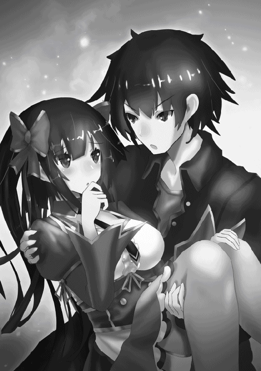
セレナは頬をほんのり赤く染め、か弱い力で僕の服を握りしめた。
「......ユートって、ほんと大馬鹿ね」
「それはお互い様だ」
女の子一人守れないで何が覇王だ。たとえ敵が一億人で来ようが絶対に守りきってみせる。
数分後。僕は足を止め、周囲を見回した。
「確かゲートはこの辺りにあったはず......」
最初にこの『天空の聖域』に来た時に見た景色を記憶の中から引っ張り出す。うん、やはりこの辺りで間違いない。
しかし問題なのが、ゲートはセアルの【認識遮断】の呪文によって僕達の目には映らないということだ。あくまで認識を遮断されているだけなのでゲートそのものが消えたわけではないが、残念ながら一度見ただけで正確な位置を把握できるほど僕の記憶力は優れていない。
こうなったらこの一帯を闇雲に走り回って運良くゲートに入れることを祈るしかない。ここまで来て運任せというのはもどかしいが、それ以外に方法はないだろう。
「ユート！」
そのようなことを考えていた時、セレナが叫んだ。顔を上げると、いつの間にか上空が数多の下級天使で埋め尽くされていた。二百、いや三百か？ もはや数える気力も失せてきた。
「この短時間に随分とファンが増えたもんだな」
「そ、そんな悠長なことを言ってる場合じゃないでしょ!?」
「......だな」
こいつらがいたんじゃゲートを探すこともままならない。面倒だが戦うしかない。
「アタシを下ろしてユート！ アタシを抱えてたらまともに戦うこともできないわよ！」
「......いや、このままでいい」
「何言ってるの!? 今のままじゃ両手が使えないでしょ!?」
「いいからセレナは僕にお姫様抱っこされてろよ」
敵はこれだけの数だ、セレナを僕から離した状態では守りきれなくなる怖れがある。もうセアルの時のようにセレナを人質に捕られるようなヘマはしない。
両手が使えないのもちょうどいいハンデだ。なにより女の子を抱えながら戦うというシチュエーションは結構燃える。
「〝破滅一閃〟!!」
僕はボールを蹴るような動作で足を振り上げ、その風圧で上空の下級天使共を引き裂いていく。今までの〝破滅一閃〟は腕を使ったものだったけど、案外足の方が威力は高いかもしれない。
「呪文【落石警報】!!」
天使の一人が呪文を唱え、真上から巨大な岩が降ってくる。
「〝破滅一撃〟!!」
僕はその場で高く跳び上がり、頭突きでその岩を粉々に破壊した。下級天使共からはざわめきが起きる。
「大丈夫かセレナ？」
「う、うん。アタシは全然平気......。ていうかさっきから思ってたけど、こんな時まで技名を叫ぶ必要ってある？ 今のもなんか無理があったし」
「いや、技名を叫ぶのと叫ばないのとでは威力が30％違う」
「そうなの!?」
まあ30％は言い過ぎだろうけど（というか実際ほとんど変わらないだろうけど）テンションが上がるのは確かだ。
「呪文【五月雨光線】!!」
別の天使が放射状に光線を放ってきた。全部避けるのは難しいと判断した僕は、光線がセレナに当たらないように身体を１８０度回転させ、背中でその光線を受けた。
「ぐあああっ!!」
「ユート!? しっかりしてユート!!」
「......ごめん、演技。これくらいじゃ僕は何ともない」
「あ、アンタねえ!! 今がどういう状況か分かってるの!?」
「分かってるよ」
これだけ数が多いと時々ジョークでも挟まないとやってられない。一体いつになったら片付くのやら......。
「呪文【電撃祭】!!」
くっ、また呪文かよ。呪文を使えない僕への嫌がらせのように......。
「ぎゃああああああああああ!!」
再び僕は叫び声を上げた──と言いたいところだが、この叫び声は下級天使共のものだった。そう、今のは僕ではなく下級天使共への攻撃だったのである。
仲間割れ、というわけでもなさそうだ。それにさっきの声、なんか聞き覚えがあるような......。
「呪文【災害光線】!!」
また別の呪文を唱える声と共に、下級天使共が吹き飛ばされていく。またしても聞き覚えのある声だ。
「な、何だ!?」
「どこからの攻撃だ!?」
動揺する下級天使共。【電撃祭】、それに【災害光線】。まさかと思いながら僕は周囲を見回した。
「リナ!! みんな!!」
なんとリナ、アスタ、スーの三人が僕達の方に駆けてくるのが見えた。一瞬酷い目眩のせいで幻覚でも見えてるんじゃないかと思ったが、どうやら現実のようだ。
「助けに来てやったぜユート！ って言いたいところだが、見た感じあんまり必要なかったみてーだな......」
「いや、正直マジで助かる。この数相手に気が遠くなりそうだったし」
「お兄様、ご無事で何よりです......!!」
「ああ。心配かけて悪かった」
安堵の表情を浮かべるリナに、僕は小さく笑みを返した。
「セレナ......!!」
スーが全身傷だらけのセレナを見て血相を変える。これまでスーはほとんど表情を変えることがなかったので、相当ショックを受けているのが伝わってくる。
「こんなボロボロになって......。ユート、いくらセレナが可愛くてエロい身体をしてるからって、これはあまりにも酷すぎる」
「僕がやったんじゃないからな!?」
「セレナ、私が来たからにはもう大丈夫。これ以上ユートに淫らなことはさせない」
なんかもう僕が犯罪者みたいになってる。
「えっと、スー？ なんか勘違いしてるみたいだけど、ユートはずっとアタシを守ってくれて......」
「もう何も言わなくていい。セレナは私が守ってあげる。ユート、セレナを渡して」
「あ、ああ......」
スーはひょいとセレナを抱える。きっと僕の負担を減らそうというスーなりの心遣いだったのだろう。今の冗談はあんまりな気がしたが。
「しかし驚いた。アスタ達まで『天空の聖域』に来てたとは......」
「ついさっき着いたばかりだけどな。それより今の内に行くぞ、ゲートはこっちだ！」
僕は頷き、アスタ達と共に走り出す。
「に、逃がすな!! 追えー!!」
それでも下級天使共は追いかけてくるが、アスタとリナがそれぞれの呪文で反撃してくれる。これほど頼もしい救援はない。
「着いたぞ、あそこだ！」
アスタが指差した先にはゲートがあり、その傍ではサーシャが僕達を待っていた。
「......よかった。『天空の聖域』に着いた矢先に天使の大群が見えたものだから何事かと思ったが、ひとまず二人とも無事だったようだな」
サーシャが僕とセレナを見て安心したように言った。ゲートが視認できるということはサーシャが【解呪】の呪文で【認識遮断】を解除したのだろう。おかげで闇雲に走り回らずに済んだ。
「サーシャ、早速で悪いけどこれを解いてくれないか？」
僕はセアルの【魔封じの枷】によって手首に装着された手錠を見せた。サーシャが【解呪】を発動すると、その手錠は綺麗サッパリ消えた。これでようやく呪文が使えるようになる。
「さて、全員揃ったことだし地上に帰還するぞ」
「ちぇっ。せっかく『天空の聖域』まで来たんだから観光とかしてみたかったんだけどなあ」
「つべこべ言わずにさっさと入れ」
「どわっ!?」
サーシャに背中を押され、アスタはゲートの中へと消える。セレナを抱えるスーも後に続いた。
「何をしているユート、お前も早くしろ」
「......サーシャは先に行ってくれ」
「なに？」
「僕はあいつらに用がある。地上にまで追いかけてこられたら堪ったもんじゃないしな」
「......なるほど、分かった」
サーシャもゲートに入り、一人残った僕は下級天使共と向かい合う。セレナ達がいなくなった今、もう【変身】が解けようが関係ない。これまでの礼はきっちり返してやるとしよう。
「呪文【地獄の黒渦】!!」
僕は文字通り黒い渦を上空に発生させた。そして呪文を使用したことで僕は覇王の姿に戻り、それを見た下級天使共は驚愕の表情を浮かべた。
「お、お前は覇王!!」
「まさか、人間に化けていたというのか!?」
「ふっ......今頃気付いたか。だが余の正体を知られた以上、貴様達を野放しにしておくつもりはない」
僕は指をパチンと鳴らす。直後、黒い渦を中心に凄まじい風が巻き起こった。
「うわああああああああああ!!」
「助けてくれえええええええ!!」
黒い渦は掃除機のように下級天使を吸い込んでいく。やがてその場にいた下級天使を一人残らず呑み込んだ。
「安心しろ。【地獄の黒渦】に呑み込まれた者は時が経てば戻ってこれる。もっとも何年掛かるかは知らないがな......」
独り言を呟いた後、僕はゲートの中へ身を投じた。
＊
地上に帰還した僕達は、その後スーの呪文で呼び出されたモンスターの背中に乗って空を飛び、サーシャのアジトまで戻ってきた。
そのまま夜になり、皆がそれぞれの部屋で寝静まった頃。現在僕はセレナの部屋で、静かに寝息を立てるセレナの傍に立っていた。
もちろん疚しいことをしようとしているわけではない。そりゃ全く変な気が起こらないと言ったら嘘になるけど、今は我慢だ。
「呪文【超回復】」
僕はセレナの身体に呪文をかけた。【超回復】はＨＰを全回復させる呪文である。これも十分チート能力だけど、使ったのは今日が初めてだ。
僕のＨＰは９９９９９９９９９９もあるし、そもそもＨＰが大きく削られることがほとんどなかったので発動する機会自体がなかったのである。デメリットは続けて使用する場合は五分のインターバルが必要ってことくらいか。
セレナの回復を済ませた後は、スーとアスタの部屋にも行き、起こさないようにそっと【超回復】の呪文をかける。何故皆が寝ている時なのかと言えば、無論僕の真の姿を見られないようにする為だ。
「......ふう」
最後のアスタの回復も問題なく済ませ、僕は部屋を出て息をついた。ちなみにリナには真の姿を見られても問題ないので既に回復は済ませており、今は部屋でぐっすり眠っている。
「終わったか？」
すると僕のもとにサーシャが歩いてくるのが見えた。まだ起きていたらしい。
「すまないな、覇王様の手を患わせてしまって」
「この程度、余にとっては造作もない。それにアスタ達には『天空の聖域』で助けてもらったからな。これはその礼だ」
僕は【変身】の呪文で再び人間の姿になった。
「だけど僕が回復してやれるのはＨＰだけだ。精神的な部分まではいくら僕でも手の施しようがない」
「十分だ。感謝する」
アスタ達にとって憎き七星天使に全く歯が立たなかったという現実は、身体に受けた傷以上に苦しいものだろう。もう立ち直れなくなったとしても無理はない。
「アスタ達はお前が思っている以上に強い奴らだ。時間はある程度必要かもしれないが、きっと大丈夫だろう」
そんな僕の心を読んだかのようにサーシャが言った。確かに、僕の救援に来た時のアスタ達はとても頼もしかったし、杞憂かもしれない。
「ところでサーシャ達はこれからどうするんだ？」
僕が尋ねると、サーシャはやや暗い表情で俯いた。
「口惜しいが『狂魔の手鏡』を破壊された以上、私達が七星天使に対抗する手段はなくなってしまった。後は見守ることしかできないだろう」
「......それが一番かもな」
あれだけ粉々にされては呪文による修復も不可能だろうし、そもそも呪文でどうにかなる代物とは思えない。
「だけど安心してくれ。七星天使は必ず僕が殲滅する。そして奪われた人々の魂も取り戻してみせる」
「......ああ。頼む」
頭を下げるサーシャ。もうゲートの場所は分かった。『魂の壺』を破壊すれば人々の魂が還ってくるという情報も入手した。あとはアンリ達と共に『七星の光城』に攻め込むだけだ。
「それじゃ僕はこれから覇王城に戻る。色々と世話になったなサーシャ。っと、その前にリナを起こさないと......」
「差し出がましいことを言うが、そんなに急ぐ必要はないんじゃないか？ 皆に別れの言葉を述べてからでも遅くはないだろう」
「いや、でも......」
「それに『邪竜の洞窟』に入ってからまともに休んでいないだろう。身体を休めることも大事だぞ。あと一日くらいここでゆっくりしていったらどうだ？」
「............」
僕は少し考える。まあ、サーシャの言うことにも一理ある。急いては事をし損じるって諺もあるしな。サーシャだって一秒でも早く父親の声を聞きたいだろうに、今は僕の身を案じてくれている。その優しさに僕は胸が熱くなった。
「じゃあ、お言葉に甘えようかな」
「それがいい。それに、お前にはここでまだやることが残っているじゃないか」
「やること？ 何だよそれ？」
「今更言う必要もないだろう。ちゃんとセレナの気持ちに応えてやれよ」
サーシャは全てを察したような笑みを浮かべた後、軽く手を振りながら僕のもとから去っていった。
それから僕はアジトの屋上まで足を運んだ。特に理由はなかったが、このまま寝ようという気にもなれなかった。
「セレナの気持ち、か......」
空に瞬く満天の星を眺めながら、僕は一人呟いた。
「！」
僕が星空に魅入っていると、屋上のドアが開く音がした。振り返ると、そこにはセレナの姿があった。夜の雰囲気のせいか、いつもよりも色っぽく見える。
「目が覚めたのか？」
「......うん」
「どうして屋上に？」
「......ユートがここにいる気がしたから」
セレナは僕の隣りに立ち、一緒に星空を眺める。
「身体の方は大丈夫か？」
「うん。というか、さっき起きたら身体中の傷がキレイサッパリ治ってたからビックリしたわ。どういうことかしら......」
「セレナ達が寝ている間に、サーシャが回復呪文を使える人を連れてきて治してもらったらしいぞ」
「そうなの？ 後でサーシャにお礼言わなきゃ......」
と、いうことにしておこう。セレナ達の中では僕は呪文を使えないってことになってるからな。既にサーシャにも話は合わせてある。
「......ユート」
「ん？」
「アタシを庇ってイエグと戦ってくれたこと、ガブリに襲われそうになった時に助けてくれたこと、追いかけてくる天使達からアタシを守ってくれたこと......本当にありがとう。ユートには何度助けてもらったか分かんない......」
「いいって、お礼なんて」
「ううん。ユートがいなかったら、アタシはとっくに死んでた。今アタシがこうしていられるのは、全部ユートのおかげ......」
なんだか照れくさくなり、僕は小さく頬を掻いた。
するとセレナは、僕の服の袖を人差し指と中指で摘んできた。その頬はほんのり赤く染まっていた。
「あ、あのね、ユート。ちょっとビックリするかもしれないけど、今からアタシの言うこと、聞いて」
セレナの指の力が強くなり、身体の震えも伝わってくる。やがてセレナは静かに口を開けた。
「あ、アタシ、その、ユートの、ことが......!!」
「セレナ」
セレナの口から次の言葉が出る前に、僕は強めの口調で遮った。
「僕に〝そういう感情〟を抱くのはやめるんだ」
「......え？」
何を言っているのか分からない、というセレナの顔。
これでも人の気持ちには鋭敏な方だと自覚している。セレナの僕に対する心境の変化には薄々気が付いていた。
だからといって突然難聴を患ったり、突発性の睡眠に襲われるような方法で逃げるつもりはない。僕はセレナの気持ちに正面から向き合った上で、それを否定する義務がある。
「僕には誰にも言えない秘密がある。僕に好意を抱いていたら必ず後悔する」
僕は覇王だ。人間の女の子とそのような関係になるわけにはいかない。セレナを不幸にすることはあっても、幸せにすることはない。
「僕はもうすぐここを去る。だから僕のことは忘れてほしい。きっとセレナには僕なんかよりも良い人が見つかる」
長い沈黙の後、セレナの指が僕の袖から離れた。
「......どうして......そんなこと言うの......？」
セレナの方に顔を向ける。その目からは大粒の涙が溢れ出ていた。
「こんなに......こんなにアタシの心を掻き乱しておいて......そんなの卑怯よ......」
「......っ」
こうなることは覚悟していた。だけどいざ直面すると、胸が締め付けられるように苦しくなった。
「アタシの気持ち......返してっ......」
セレナは顔を両手で押さえながら、僕のもとから走り去っていった。
「セレナ!!」
僕はセレナを追いかけようとしたが、無意識に足が止まってしまった。
「......これで、よかったんだ。これで......」
拳を強く握りしめながら、僕は自分に言い聞かせるように呟いた。
屋上を出た僕は、一歩一歩、階段を下りていく。一体あれからどれくらい屋上で立ち尽くしていただろうか。
後悔はしていない。けれでも胸にはポッカリの大きな穴が空いたような感覚だった。
「......やっぱり、もう帰るか」
これ以上アジトにいるのは気まずい。僕は覇王城に帰還することに決めた。せめてサーシャにだけは最後に挨拶をしていこうと、僕はサーシャの部屋に立ち寄る。まだ起きているだろうかと思いながら、僕はドアを軽くノックした。
「どうぞ」
サーシャの声が返ってきたので、僕は静かにドアを開けた。そこは六歳の部屋とは思えないほど整理整頓がなされていた。
「ごめん、もう寝てたか？」
「これから寝ようとしていたところだ。こんな時間にどうした？」
「......やっぱり覇王城に帰ることにしたから、最後の挨拶をしようと思ってさ」
「これまた急だな。何故だ？」
「............」
何から話せばいいものかと僕が悩んでいると、サーシャは小さく嘆息した。
「セレナを振ったのか」
「ど、どうしてそれを!? まさか【千里眼】で見てたのか!?」
「人の告白を覗き見るような野暮な真似はしない。今のお前の顔を見ればそれくらい誰でも分かる」
どうやら自分でも気付かない内にそういう顔になっていたらしい。
「ま、異性の好みは人それぞれ。セレナの気持ちを受け入れるかどうかはお前の自由だ。しかし私からすれば勿体ないことをしたものだな。セレナのような女であれば自分のものにしたいと思う男は星の数ほどいるだろうに」
「......勿体ない、か。確かにそうかもな」
僕は力無く笑みを浮かべる。
「そう思うのなら何故振った？ やはりお前ほどの男ともなると、いくらセレナが相手でも釣り合わないか？」
「......そういう問題じゃない」
「なら何故だ？」
「............」
「......まあ、とりあえず座ったらどうだ」
サーシャにそう促され、僕は近くの椅子に腰を下ろした。それからサーシャは紅茶を淹れたティーカップを僕に差し出してくれた。
「......サーシャは、自分の両親についてどう思ってる？」
紅茶に映る自分の顔を見つめながら、僕は尋ねた。
「唐突な質問だな。何故そんなことを聞く？」
「......前にサーシャは、自分が天使と人間の間に生まれた子供という理由で差別を受けてきたって話してたよな」
「ああ」
「だから、その......。言い方は悪いかもしれないけど、自分の両親を恨んだりしたことはないのかと思ってさ」
サーシャは不思議そうな顔で小首を傾げた。
「何故私が両親を恨む必要がある？」
「だってそうだろ？ 両親が二人とも人間、あるいは天使だったらサーシャが差別を受けることはなかったわけだから」
僕がそう言うと、サーシャは全てを理解したような表情を浮かべた。
「なるほど。お前がセレナを振った理由は、悪魔の自分と人間の女が結ばれることは間違っていると思ったからか。だから私にそのようなことを聞いたのだな？」
「......相変わらず鋭いな」
「呆れたものだ。いくら覇王になって最強の力を得ようとも、精神的にはまだまだ未熟者というわけか」
「なっ......!? どういう意味だよそれ！」
なんだか馬鹿にされているような気がしたので、思わず声を荒げてしまった。
「よく聞けユート。私を自分の父親と母親を恨んだことなど一度もない。だいたい恨んでいたら奪われた父の魂を取り戻そうとはしないだろう」
「それは......」
「確かに私や父はこれまで様々な差別を受けてきた。だが何故それで両親を恨まなければならない？ 私が恨むとしたら、私達に嫌悪の目を向けてきた世間に対してだ」
サーシャの言葉には確かな意志が根付いていた。
「種族の違う二人が結ばれたからといって、誰かが傷つくのか？ 誰かが病に冒されるのか？ 間違っているのは、何の理由もなく『異種族の者と結ばれるのは忌むべきこと』と決めつけている世間の方だ。違うか？」
「......！」
「だが人の考えは千種万様。私の理念を否定する者がいるのは仕方のないことだ。しかしお前ほどの男までもがそのような価値観に囚われ、世間の目を気にしているというのは滑稽に思えてならない」
そうだ......何を僕はこんなつまらないことで悩んでいたんだろう。僕の理想は人間と悪魔が共存できる世界を築き上げることだったはずだ。そんな僕が何故、その理想に反するようなことをしてしまったのか。
「母は私を産んだ時に亡くなったが、父はいつも嬉しそうに母のことを話していた。辛いことも沢山あったが、父も母も、そして私も不幸ではなかったと自信を持って言える」
僕と結ばれたらセレナを不幸にしてしまう。そう思っていた僕にとって、サーシャの言葉は心に刺さるものがあった。
「とはいえ、セレナは私とは違う。お前が覇王だと知った時、セレナがどう感じるかは分からない。お前がこのままの方がいいと思うのであれば、それもよかろう」
そう。セレナが今まで見てきたのは、あくまで人間としての僕だ。僕の正体を知ったとしてもセレナの気持ちが変わらないという保証はどこにもない。
「ただ、一つ聞かせてほしい。お前はセレナのことをどう思っている？ 覇王だの悪魔だの関係なく、一人の男としてだ」
「！ 僕は......」
セレナの顔が脳裏に浮かぶ。村人を襲っている山賊や、女性の魂を奪っているガブリを目の当たりにしてもそこまで憤りを覚えなかった僕が、何故セレナを傷つけられた時はあんなに激昂したのか。『天空の聖域』で下級天使共に追われていた時、何故あそこまでセレナを守ることに固執したのか。
それは......もはや考えるまでもないだろう。だったら迷うことなどない。僕は椅子から立ち上がった。
「ありがとうサーシャ。おかげで目が覚めた。もう一度セレナと話してくる」
「......そうか」
「ところでサーシャって、本当に六歳なんだよな？」
「何度も言わせるな。私は正真正銘の六歳だ」
とても六歳とは思えないほど達観した物言いだったんだけど。人生二周目なのではなかろうかとさえ思ってしまう。
「それじゃ、行ってくる」
新たな決意を胸に秘め、僕はサーシャの部屋を出た。
＊
セレナの部屋に向かった僕は、ドアが僅かに開いていることに気付く。その隙間から中を覗いてみると、そこにはベッドの上で膝を抱え、声を押し殺して泣いているセレナの姿があった。
「セレナ......入っていいか？」
「............」
セレナから返答はない。僕は部屋に入り、そっとドアを閉めた後、セレナの隣りに腰を下ろした。
互いに無言のまま、しばらく沈黙が流れる。やがて僕は静かに口を開いた。
「......さっきはごめん。心にもない言葉でセレナを傷つけてしまった」
「............」
依然としてセレナは膝に顔を埋めたまま。それでも僕は続ける。
「だけど今度は、僕の本当に気持ちを伝える。だから聞いてほしい」
「............」
僕は自分に嘘をついていた。セレナの気持ちに正面から向き合うとか言っておいて、当の僕は自分の本心から目を背けていた。一人の女の子が勇気を振り絞って告白しようとしてくれたのに、僕は「覇王だから」「悪魔だから」と自分勝手な理由をつけて逃げてしまった。我ながら最低の男だ。
だけど、もう逃げない。たとえどんな結果が待ち構えていようとも、僕は本当の気持ちをセレナに伝える。
「僕は......セレナのことが好きだ」
「......！」
ピクッ、とセレナの肩が揺れる。僕は静かにセレナの言葉を待った。
「......信用、できない」
ようやくセレナは顔を上げてくれた。ずっと泣いていたのか、その両目は真っ赤に腫れていた。
「どうせ、アタシの機嫌をとろうと建前で言ってるだけなんでしょ？ 騙されないから」
「違う。僕は本気でセレナのことが......」
「なら口だけじゃなくて行動で示して」
「......行動？」
「ほら、やっぱり何もできないじゃない。結局ユートはアタシの事なんて──」
僕はセレナの身体を勢いよく抱き締めた。
「ゆ......ユート......？」
「好きでもない女の子に、こんなことすると思うか？」
「......っ」
セレナも僕の背中に手を回し、優しく抱き締め返した。
一体どれくらいそうしていただろうか。僕らはどちらからともなく、そっと身体を離した。だがこれでめでたしめでだし、というわけにはいかない。
「セレナ、聞いてほしいことがある。さっき言ってた、僕の秘密についてだ」
セレナの気持ちを受け止めると決めた以上、いつまでも正体を隠しておくことはできない。僕のことを好きになってくれたセレナには、僕の全てを知ってもらう必要がある。僕はそう考えた。
正直、怖い。僕の正体を知ったら、セレナの気持ちが変わる可能性は十分にある。それでも怖じ気づくわけにはいかない。
「驚くと思うけど、実は、僕は......!!」
「話さなくていいわ」
「......え？」
予想外の言葉がセレナの口から出てきたので、僕は唖然とした。
「本当は話したくないんでしょ？ ユートの顔を見れば分かるわ。だったら無理に話すことなんてないじゃない」
「そ、それはそうだけど......。セレナはそれでいいのか？」
小さくセレナは頷く。
「秘密の一つや二つ、誰だって持ってるものよ。アタシだって誰にも自分の三サイズを教える気はないし。もちろんユートにもね」
「はは、可愛い秘密だな」
「お、女の子にとっては真面目な問題なの！」
セレナの思いやりに、僕の心は一気に軽くなった。
「ま、さすがに『実は男装している女の子でした！』とかだったら考え直すしかないけどね」
「......ある意味それ以上の秘密かもしれない」
「えっ!? まさか本当に女の子じゃないわよね!?」
「いや僕は純度１００％の男だ！ それは保証する！」
安心したように息をつくセレナ。
「ならいいわ。たとえどんな秘密があろうと、アタシはユートのことが......好きだから」
胸の鼓動が高まる。セレナの気持ちには気付いていたが、直接「好き」と言われたのはこれが初めてだった。
「......ユート」
「ん？」
「いい......よね......？」
「......ああ」
セレナの顔が、少しずつ近付いてくる。やがてセレナの唇が、僕の唇に──優しく重なった。
「ん......っ」
セレナの色っぽい声が洩れる。一瞬のようで、永遠にも思える時間。
やがて静かに唇が離れる。なんだか目を合わせるのが恥ずかしくなり、僕達は互いに顔を逸らした。
「あ、アタシの初めてのキスを奪ったんだから、ちゃんと責任とってよね」
「セレナの方からしてきたんだから、奪ったという表現はどうかと......」
「つべこべ言わない！ そもそもこういうのって男の方からするものでしょ!?」
「......ごめんなさい」
「............」
「............」
再び僕らの目が合う。なんだか可笑しくなり、僕達は小さく笑い合った。
それから僕達はベッドに腰を下ろしたまま手を握り、色んな話をした。主に僕達が出会ってからこれまでのことを。
「そういえば、サーシャが予知していた通りになっちゃったわね」
「......だな」
サーシャが【未来予知】で視た、僕とセレナがキスをするという未来。たった今それが現実のものになった。当時はサーシャの冗談ではないかと思ったものだ。
「あの時はユートとキスするなんて絶対に有り得ないって思ってたわ」
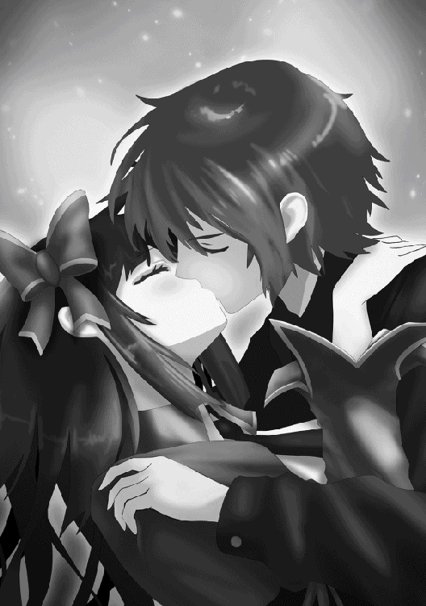
「僕もだ。だってセレナって僕のこと、ものすごく嫌ってたし」
「そ、それは仕方ないでしょ!? あれだけ変なことを何回もされたら......!!」
「思えば出会いも最悪だったよな。初めて会ったのは喫茶店のトイレで、僕がドアを開けたらセレナが用を足している途中で......」
「わーわー!! 思い出しちゃうからそれ以上言わないで!! あの時死ぬほど恥ずかしかったんだから......!!」
「そうか。なら言わないでおく」
「......ユートの馬鹿」
小さく頬を膨らませるセレナ。こういう顔も可愛い。
「でも、今まで冷たい態度をとったり、ビンタしたり、本当にごめん。アタシ、ユートに何度も酷いことしちゃった......」
「ふっ、安心しろ。僕はその十倍は酷いことをしてきたからな！」
「......そこ、ドヤ顔で言うとこ？」
「だって事実だろ？ だから謝る必要なんてないって。むしろ謝るのは僕の方だ」
「そうよね。胸を触られたり、パンツを見られたり」
うっ、と僕の息が詰まる。
「......本当にごめんなさい」
「いいわよ、もう気にしてないから」
「そう言ってもらえると助かる......」
あと一緒に風呂に入ったりもしたし、もはや犯罪と呼べることを僕はしてきた。それを冷たい態度やビンタだけで済ませてくれたのはかなり良心的と言えるだろう。
まあ風呂に入った時の僕はスーに変身してたから、今でもセレナはそのことを知らないわけだけど。よく考えたら僕の正体以上に言えない秘密かもしれない。
「......ねえ、ユート」
それから少し経った後、セレナが不安に満ちた表情で、こう聞いてきた。
「これからもずっと......アタシの傍にいてくれるよね......？」
「！」
僕の手を強く握りしめるセレナ。
「どこにも......行ったりしないよね......？」
不安に揺れるセレナの瞳を見て、僕の中に一瞬迷いが生じる。僕だってずっとセレナと一緒にいたい。だけど、僕は......。
「ごめん、セレナ。僕はもうじきここを去る。僕にはやらなければならないことがあるんだ」
僕は迷いを断ち切り、そう答えた。僕には七星天使を殲滅し、奪われた人々の魂を取り戻すという使命がある。
「......イヤ。そんなのイヤ！」
だけどそんなこと、セレナに分かるはずもない。セレナの叫びが僕の心を貫く。
「こんなに、こんなに好きになったのに、どうしてもう別れなくちゃいけないの!? そんなの絶対おかしい......!!」
「セレナ......」
「どうしても行くというなら、アタシも連れて行って!!」
セレナの目は本気だった。しかしそれでも僕は首を横に振る。
「それはできない」
「どうして!? やっぱりユートは、アタシのことなんて......!!」
「そうじゃない」
「ならどうして!?」
「......セレナには、帰る場所があるだろ」
僕の正体がバレるだけならまだいい。だけどセレナを覇王城に連れて行ったら、もう二度と元の生活には戻れなくなるだろう。リナの時は、彼女には帰る場所がなかった。だから僕の呪文で悪魔にし、居場所を作ってあげた。
だけどセレナにはサーシャ、スー、アスタがいる。そしていずれ還ってくる姉さんもいる。セレナにはちゃんと帰る場所がある。それを僕の手で壊すわけにはいかない。
そして何より、これから始まる七星天使との戦いにセレナを巻き込みたくない。もうこれ以上、セレナが誰かに傷つけられるのは耐えられない。
「セレナにとっても、僕にとっても、それが一番なんだ。だから分かってほしい」
「分かんない......分かんないよ......!!」
セレナの頬を大粒の涙が伝う。また、泣かせてしまった。僕はセレナの身体を優しく抱き締める。
「ごめん、セレナ。ごめん......」
僕にはただ、謝ることしかできなかった。
「......ユート」
しばらくするとセレナは泣きやみ、そっと僕の胸から離れた。
「一つだけ、約束して。たとえ離れ離れになっても、アタシへの気持ちは絶対変わらないって」
「ああ、約束する」
「アタシも、ユートへの気持ちは絶対変わらないって約束するから」
「......ありがとう、セレナ」
本当はまだ納得していないだろう。それでも僕の意志を受け入れてくれたセレナに、僕は心から感謝した。
「でも、会えなくなるのはやっぱり寂しい......。だから、お願いがあるの」
「お願い？」
セレナは頬を赤くし、表情が見えないように俯く。
「離れ離れになってる間も、ユートの優しさを、ユートの温もりを、ずっと持ち続けていたい......。それには、キスだけじゃ足りないと思う......」
「......！」
僕は察した。セレナがキス以上の行為を求めていることに。
「いい......のか......？」
セレナは小さく頷く。その身体は少しだけ震えていた。
「初めてだから、正直怖いけど......。それでも、ユートが求めてくれるのなら......。アタシも、頑張る」
「............」
気が付けば僕はセレナの肩を掴み、ベッドに押し倒していた。
「ユート......」
セレナは抵抗することなく、虚ろな目で僕を見つめてくる。
まず僕はセレナのシャツを捲り上げ、続いてブラを少し上にずらした。とても柔らかそうで、豊かな二つの膨らみが露わになる。
次に僕はセレナの下半身の方に移動し、ゆっくりとズボンを下げる。パンツの色は赤。今まで見たものに比べるとやや派手であり、心なしか布地の面積も小さい。きっとこうなることを見越して、一番自信のある下着を選んだのだろう。
やがて僕はそのパンツをも下げる。僕の目の前に、女の子の一番大事なところが晒された。思わず喉がゴクリと鳴る。
セレナの裸は風呂場でも一度見たけれど、こうして間近で見ると、やっぱり、凄い。この恵まれた肉体を今から僕の自由にできると思うと、もはや理性など保っていられなくなった。
「あんまり、見ないで。恥ずかしい......」
泣きそうな声でセレナが言う。その恥じらいが僕の情欲を更に掻き立てる。
僕が手を伸ばそうとすると、セレナは強く目を瞑った。そして僕は本能の赴くままに、セレナの身体を──
「！」
しかしセレナの肌に触れる前に、僕は手を止めた。
「ユート......？」
恐る恐る目を開けるセレナ。僕は部屋のドアの方に目を向けた。
「......誰かに見られてる」
「えっ!?」
セレナは慌てて胸を右腕で、大事なところを左手で隠した。よく見たらドアが僅かに開いており、その隙間から四つの目が見える。僕はベッドから下り、早歩きでドアの所まで向かった。
「ひゃっ!?」
「......バレてしまったか」
ドアを開けると、なんとそこにはサーシャとリナがいた。この二人が部屋の中を覗いていたのである。
「何やってんだサーシャ!? しかもリナまで!!」
「ごめんなさいごめんなさいごめんなさい!! トイレに行こうと廊下に出たらサーシャさんに会って、面白いものが見られると言われてここまで付いてきてしまい、それでつい......!!」
何度も頭も下げるリナ。まあ、リナはまだ許せる。問題はサーシャだ。
「どういうことか説明してもらおうか、サーシャ」
「なに、単に二人の様子が気になっただけだ。男女の恋の行方をこの目で見届けたいと思うのは至極当然のことだろう」
完全に開き直ってやがる。
「覗かれる身にもなってみろよ!! つーか『人の告白を覗き見るような野暮な真似はしない』とか言ってたくせに矛盾してないか!?」
「私だってまだ六歳だ。好奇心に負けてしまうことはある」
「都合が悪くなった時だけ子供アピールすんな!! そもそもこういうのは子供が見ていいものじゃないからな!?」
「まあまあ、細かいことは気にするな」
いや全然細かくないんだけど。
「しかしお前達がキスをするというのは予知で分かっていたが、まさかここまで進展するとは思わなかった。ユートもなかなかやるな」
「い、言っとくけど合意の上だぞ!? なあセレナ!?」
セレナの方を振り向く。恥ずかしさに耐えられなくなったのか、セレナは耳を真っ赤にして布団に顔を埋めていた。
「ま、お前達に不快な思いをさせてしまったことは事実だ。私が悪かった、謝ろう」
深く頭を下げるサーシャ。絶対悪かったとか思ってないよな。
「では邪魔者はそろそろ退散するとしよう。もう覗いたりしないから安心して続きをやってくれ。それと鍵はちゃんと閉めておくことだ」
「ほ、本当に申し訳ありませんでした。その、が、頑張ってください！」
パタンとドアが閉まり、サーシャとリナが去っていく足音がする。僕はしばらくその場に立ち尽くした後、セレナの方に顔を向けた。
「なんというか......そういう雰囲気じゃなくなっちゃったな」
「......うん」
布団に顔を埋めたまま返事をするセレナ。この様子じゃとても続きなんて無理だろう。
「そ、それじゃ僕は自分の部屋に戻るから。おやすみセレナ」
「......おやすみ」
半裸のセレナを残し、僕は部屋を出た。
「はあ......」
無意識に大きな溜息が洩れる。こうして僕の初体験は先送りになったのであった。
＊
翌日。僕とリナは覇王城に帰還するため、サーシャのアジトを離れることになった。セレナ、スー、サーシャ、そしてアジトに住む子供達も、僕達の見送りの為にアジトの外に出ていた。
「......もう行くんだな」
「ああ。ありがとうサーシャ。色々と世話になった」
「礼を言うのは私の方だ。短い間だったが力を貸してくれてありがとう。お前にとってはつまらない道草だったかもしれないがな」
「そんなことないって。良い経験をさせてもらった」
ここにいる皆は僕を人間として対等に接してくれた。居心地も良かったし、本音を言うともう少し居たかったけど、そうも言っていられないからな。
「ユートお兄ちゃん、リナお姉ちゃん、バイバイ」
「また一緒に遊んでね」
子供達が僕とリナに手を振ってくれる。早くこの子達のお父さんやお母さんの魂を取り戻してあげなければ。
「あれ？ そういやアスタは？」
「ああ、アスタなら落ち込んだ様子で部屋に引き籠もってるぞ」
「えっ!? やっぱり七星天使に敗れたのを引きずって──」
「いや、なにやら『オレのセレナが奪われた......』などとブツブツ呟いてたから、セレナがユートのものになったことが相当ショックだったらしい」
そっちかよ。
「ほっといていいのか？」
「いいのよ。アスタが勝手に落ち込んでるだけだし」
最後にアスタの顔も見たかったけど、まあいいか。そもそもセレナは誰のものでもなかったんだから奪ったって言い方はおかしいだろ。
「ところでセレナ、ユートとの初体験はどうだった？ 感想聞かせて」
「そうね......って何言わせようとしてんのよスー!! そ、そもそもそういうことは全然してないから!!」
「ふっ、ごまかさなくていいぞセレナ。思春期の男女が同じ部屋で一晩過ごしたんだ。ユートとやることはやったんだろう？」
「やってない!! やってないから!!」
顔を真っ赤にしてブンブン首を振るセレナ。
「スー、どう思う？」
「......セレナの反応を見ると、本当に何もやってないかも」
「だ、だからそう言ってるでしょ!?」
するとサーシャの目が僕の方に向けられた。
「......ユートよ。お前はセレナをあそこまで脱がせておきながら一切手を出さなかったというのか？」
「あ、ああ」
サーシャは深々と嘆息する。
「失望したぞ。まさかお前がそこまでヘタレだったとはな」
「誰かさんが途中で邪魔したせいだろ!!」
「ご、ごめんなさいお兄様......」
「ああいや、リナは何も悪くないって」
サーシャが邪魔しなければおそらく童貞は卒業していただろう。正直悔いはある。
「ちょっと邪魔が入ったくらいで中断してしまうとは情けない。セレナもあのまま続けてほしかっただろうに。なあセレナ？」
「そ、それは......」
セレナは無言になり、恥ずかしそうに俯いた。
「サーシャ。子供達が見てる前だから、これ以上はやめた方がいいと思う」
スーが最初に言い出したんだよな？
「確かに、こういう話は子供にはまだ早いな」
と、六歳のサーシャが腕を組みながら言った。もうツッコまないでおこう。
「それじゃ僕とリナはそろそろ行くから。たまには顔を見せに来るよ」
「ああ、いつでも待っているぞ」
「......ユート」
セレナが僕のもとまで歩み寄り、寂しそうな顔を僕に向ける。
「絶対......絶対また会いにくるって約束して......」
「......ああ、約束する」
しばらく見つめ合う僕とセレナ。セレナとのお別れは辛いけど、二度と会えないってわけじゃない。【瞬間移動】という便利な呪文もあることだしな。
「キース！ キース！ キース！」
そして子供達の間から湧いてくるキスコール。こういうのを見るとちょっかいをかけたくなる年頃なのだろう。
「ちょ、ちょっとやめてよ皆!! サーシャ早く止めて!!」
「悪いなセレナ。私は子供達の味方をする」
「なっ......!? スー、なんとか言ってよ!!」
「私もサーシャに同じ」
「そんな......!!」
誰も庇ってくれる者がいなくなり、狼狽えるセレナ。依然としてキスコールは続く。
「ストップ、ストーップ!! 皆が見てる前で、き、キスとかできるわけないでしょ!? ユートも困って──」
僕はセレナの身体を抱き寄せ、その唇に自分の唇を重ねた。
「......!?」
セレナの驚きと戸惑いが直に伝わってくる。数秒後、僕はゆっくりとセレナの身体を離した。子供達の間からは「ヒューヒュー！」という歓声が湧いてくる。
「最初のキスはセレナからだったから、次は僕からじゃないとな」
「〜〜〜〜っ!!」
茹で蛸のように真っ赤になるセレナの顔。
「ユートの......ユートのバカーーーーー!!」
セレナは凄まじい速さでどこかへ走り去っていった。柄にもなく大胆なことをしてしまった。
「まったく、見せつけてくれるじゃないか。正直羨ましいぞ」
「爆発すればいいのに」
「はは......」
思わず僕は苦笑いをこぼしたのであった。
やがて僕達は別れの時を迎えた。僕とリナは手を振りながらサーシャ達のもとを離れていく。名残惜しいけど、きっとそう遠くない内にまた会えるだろう。
「あの、お兄様！」
「ん？」
「その、私は二番目、いえ三番目、いえ百番目でも全然構いませんから！ だから、私も頑張らせてください！」
「あ、ああ......。でも一応リナは僕の妹って設定だから、それは忘れないでくれよ？」
「もちろん分かっています！」
とても気合いの入った顔でリナは言った。
「......さて、そろそろいいかな」
僕は足を止めて振り返り、サーシャ達の姿が見えなくなったことを確認する。周囲にも人の気配はない。今なら呪文を使っても大丈夫だろう。
「それじゃ帰るか、覇王城に。呪文【瞬間移動】！」
僕とリナは人間領に別れを告げ、覇王城に帰還したのであった。
覇王城の大広間に帰還した僕とリナ。予想通り玉座の前では既にアンリが膝をついて待機していた。
「おかえりなさいませユート様！ リナ様！」
アンリは顔を上げ、とても嬉しそうに言った。僕達が帰還することは昨日の内に念話でアンリに伝えておいた。わざわざ大広間で待つ必要はないと言ってたんだけど、やはり忠誠心の高いアンリには無理のある指示だったようだ。
「待たせたなアンリ。ちゃんと飯は食っていたか？」
「はい。ユート様のご命令でしたので」
二日前に一度帰還した時は「ユート様がご不在の時に一番の側近である私が食事をするのは失礼に当たる」とかワケの分からないことを言ってぶっ倒れちゃったからな。
「リナ、ひとまずお前は自分の部屋に戻ってゆっくり休め。この数日間余の我が儘に付き合ってもらってすまなかったな」
「そ、そんな。私こそ色々と御迷惑をおかけして申し訳ありませんでした」
リナは大広間から退室し、僕とアンリの二人が残った。
「と、ところでユート様。前におっしゃいましたよね、ユート様がお戻りになられた際に私の望みを何でも一つ叶える、と......」
頬を赤く染めながらアンリが言う。そういやそんなこと言ったっけ。
「で、ですので、早速私の望みを叶えていただきたいのですが、その、今夜ユート様のお部屋にお邪魔しても......」
「すまないアンリ。その話はまた後日ということにしてくれ」
「......えっ!?」
素で驚きの声を上げるアンリ。何を望んでいるのか大体見当がつくけど、僕は今晩にでも『天空の聖域』に乗り込み『七星の光城』を襲撃する予定なので、そういうことをやっている暇はない。
そうでなくてもセレナと気持ちを確かめ合ったばかりなのに、他の女の子とそういうことをしたらセレナに合わせる顔がなくなってしまう。
「事情は後ほど説明するが、今はそれどころではなくなった。許してくれ」
「............」
アンリはポカンと口を開け、茫然自失になっていた。そんなにショックだったのか。
「......大丈夫かアンリ？」
「ハッ!? も、申し訳ございません！ またユート様に見苦しい姿を......」
「よい。それよりアンリから余に報告することはないか？」
話題を変えた方がいいと思い、僕はアンリに尋ねる。
「一つございます。エリトラが『ギラフの翼』回収の任務を終え、間もなく城に帰還するとの連絡が入りました」
「エリトラか。確か其奴も四滅魔の一人であったな」
「はい」
アンリ、ペータ、ユナに続く、四人目にして最後の滅魔。ちょうどいいタイミングに帰ってきてくれたものだ。
「一体どんな女なのか、早くこの目で見てみたいものだな」
「......お言葉ですがユート様。エリトラは男でございます」
あ、そうなの？ これまでの滅魔が三人とも女の子だったから四人目も女の子だと勝手に思い込んでた。ま、別に四滅魔ハーレムを目指してたわけでもないし、一人くらい男がいた方がいいだろう。
そんなことを思っていると、なにやらアンリが浮かない顔をしていることに気付いた。
「アンリ、体調でも悪いのか？」
「あ、いえ！ そういうわけではないのですが......」
そういやアンリってエリトラのことが苦手なんだっけ。前に「エリトラはあまり帰ってきてほしくないな」とか言ってたし。
「！」
突然、大広間の扉が勢いよく開いた。何事かと思い、僕は前方に目を向ける。
「ん〜〜!! ジェネシス!!」
長身の男がコマのように回転しながら大広間に入ってきた。その男は僕の前まで来るとピタリと止まり、素早くその場で膝をついた。なんだこいつ？
「お初にお目にかかります覇王様。我は四滅魔の一人、エリトラでございます」
頭にシルクハットを被り、目と口が付いているだけの簡素なお面を被った男はそう名乗った。ってこいつがエリトラかよ!?
「覇王様、まずはこちらをお納め下さいませ。『ギラフの翼』でございます」
「......うむ」
僕はエリトラから『ギラフの翼』を受け取った。これで人間の死体を半悪魔に変えるという〝闇黒狭霧〟の生成に必要な材料が三つ目まで揃ってしまった。あと『エンダードの眼』が集まれば〝闇黒狭霧〟生成の準備が整ってしまう。
だけどアンリ曰くエンダードの所在は掴めていないらしいし、全ての材料が揃うのはまだ先のことになるだろう。というかそうでないと困る。
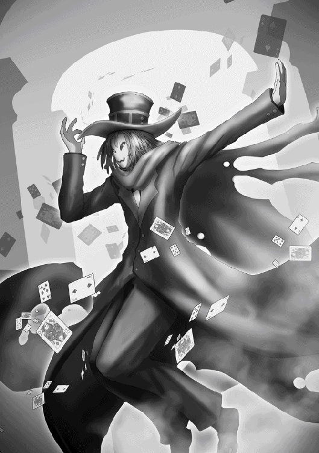
「覇王様とかけ、クイズを考えている人物と解きます」
「......は？」
いきなり何を言ってるんだこいつは。
「覇王様とかけ、クイズを考えている人物と解きます」
また言った。僕が「その心は？」と言うまで繰り返すつもりだろうか。
「......その心は？」
「どちらも至高（思考）の御方!! ん〜〜ジェネシス!!」
再びクルクル回り出すエリトラ。僕は思った......こいつはヤバい、と。アンリに苦手意識が芽生えるのも無理はない。あとそのジェネシスって何だ。
「ゆ、ユート様!! このエリトラの言動はユート様への侮辱に他なりません!!」
「何を言っているのですかアンリ。このローリングこそ覇王様への忠誠の証！ ん〜〜ジェネシス!!」
「ユート様、何とかおっしゃってください!!」
「......アンリは注意しないのか？」
ペータやユナが何かやらかした時はアンリが直接注意していたので、何故今回に限ってそうしないのだろうかと僕は疑問を抱く。するとアンリはとても歯痒そうな顔をした。
「一応、滅魔にも〝席次〟というものが存在します。第四席がペータ、第三席がユナ、第二席が私アンリ。そして第一席が、このエリトラでございます。ですので立場上、注意がし辛いといいますか......」
「......は!?」
思わず声を出してしまった。このふざけた奴がアンリよりも上でしかも第一席!? つまり四滅魔の中で一番強いってことか!?
「そう、我こそ滅魔の第一席エリトラ!! 覇王様の一番の側近なのです!! ん〜〜ジェネシス!!」
「ま、待てエリトラ！ 席次ではお前の方が上かもしれないが、ユート様の一番の側近は私だ！」
「おかしなことを言いますねアンリ。常識で考えれば第一席の我が一番の側近であるのは至極当然のこと！ ん〜〜ジェネシス!!」
「くっ......」
アンリは反論できずに口籠もる。なんかアンリが気の毒になってきた。よし、こんな時は僕が何とかしよう。
「余の権限をもって伝令する。本日より滅魔の第一席と第二席を入れ換える。つまり第一席がアンリ、第二席がエリトラとなる」
「ジェネシーーーーーーーーーース!!」
悲痛な叫びを上げるエリトラであった。
「わ、私が滅魔の第一席!? よろしいのですかユート様!?」
「うむ。元より席次などに拘るつもりはなかったが、お前の忠誠心の高さは第一席に相応しいと判断した。お前もその方が嬉しいだろう？」
「もちろんです!? このアンリ、天にも昇る気持ちでございます......!!」
涙を流しながらアンリが言った。あとはまあ、やっぱりエリトラの言動にも目に余るものがあったし。問題はエリトラがこれを受けてどういう反応を見せるか──
「ホホホ。たとえ第二席に降格しようとも、心はいつでもナンバーワン!! ん〜〜ジェネシス!!」
あ、全然大丈夫そうだ。揉め事になるかもと思ったけど杞憂だったらしい。
「では早速注意させてもらうぞエリトラ」
コホンと咳払いをするアンリ。
「まずその間抜けな仮面を外せ!! ユート様の前で素顔を隠すなど無礼極まりない!! それとこの御方のことは覇王様ではなくユート様と呼べ!! 馬鹿みたいにクルクル回ることは今後一切禁止する!! 突然なぞかけを出すのも禁止だ!! ジェネシスって何だ意味が分からないから二度と言うな!!」
おおう、席次が入れ替わった途端に捲し立ててきた。きっとだいぶ前から鬱憤が溜まっていたのだろう。
「落ち着くのだアンリ、それは少々言い過ぎだ。エリトラにも悪気があるわけではないのだろう」
「ハッ!? もも、申し訳ございません、ユート様の御前で騒々しい声を......!! この非礼を詫びて今すぐ──」
「自害はしなくてよい」
でも仮面については僕も気になっていたところだ。素顔を隠しているのは何か理由でもあるのだろうか。
「エリトラよ。その仮面はいつも身に付けているのか？」
「はい。就寝の時も食事の時も、いついかなる時も我はこの仮面と共にあります。この仮面は我の一部だからです」
「......そうか。ならそのままでよい」
そこまで言うなら無理に外させるつもりはない。美少女ならともかく、野郎の素顔なんて正直あまり興味ないし。
「覇王様のお心遣い、感謝いたします。ん〜〜ジェネシス!!」
「余のことはユートと呼んでくれ。あとその口癖は......禁じるとまでは言わないが、できるだけ控えてくれると助かる」
「承知しました、ユート様。ん〜〜ジェネシス!!」
やっぱり禁じた方がいいか？ でも席次を降格させた上に口癖まで禁止するのは可哀想だし、今は大目に見てやるとするか。
それにしても四人目の滅魔がこんなに濃い奴だったとは驚きだ。他三人もだいぶ濃いけどこいつが一番かもしれない。
「ところでユート様。後ほど説明するとおっしゃっていた〝事情〟についてお聞きしたいのですが......」
「そうだな。だがその前にユナとペータをここに呼んでくれ。これは滅魔全員に聞いてもらいたい」
「かしこまりました」
数分後、ユナとペータが大広間に入ってきた。
「あら、帰ってきてたのねエリトラ」
「なんすかなんすか!? 四滅魔が再集合したお祝いにパーティでも始めるんすか!?」
「控えろペータ。これよりユート様が重大なお話をなさるところだ」
僕の前に四人の滅魔が並ぶ。全員揃ったところを見るのはこれが初めてのことだ。
「今晩、我々は『天空の聖域』に乗り込み、七星天使の根城である『七星の光城』に襲撃を仕掛ける」
僕の発言に対し、アンリは焦燥を見せ、ユナは目を見開き、ペータは目を輝かせる。エリトラは仮面を付けているので表情は見えない。
「おそらくは七星天使との全面対決になるだろう。その時こそ七星天使を殲滅し、余の餌である人間に手を出すという行為がいかに愚かなことか思い知らせてやるのだ」
「た、大変申し訳ございませんユート様。先日ユート様が私に命じていただいたゲート捜索の件ですが、未だに発見の報告は上がっておらず、現段階で『天空の聖域』に乗り込むことは......」
あ、そういやアンリにそんなことをお願いしてたっけ。
「それなら問題ない。ゲートの場所は昨日の時点で余が突き止めている」
「ま、真でございますか!?」
「うむ。よってゲートの捜索は打ち切ってくれて構わない」
「五千の悪魔を動員しても発見に至らなかったゲートを、ユート様がお一人で......!! ユート様の偉大さに改めて感服するとともに、我々の不甲斐なさを嘆くばかりでございます......!!」
厳密に言えばセアルが僕を仲間にしようと『天空の聖域』まで連れて行ってくれたおかげだけど。
「では覇王軍を総動員して『天空の聖域』へ攻め込みますか？」
「いや、余が入手した情報では『天空の聖域』の空間は我々悪魔の身体には毒も同然であり、継続的なダメージが発生してしまう。生半可な悪魔では一時間と保たないであろう」
実際に僕がこの身をもって体験したことだ。あの時の頭痛と吐き気は本当にまいった。
「よって『天空の聖域』へ攻め込むのは余とお前達四滅魔のみとする。奴らを蹂躙するのは五人もいれば十分だ。何か異存のある者はいるか？」
「ユート様の崇高なお考えに異議を唱える者などいるはずがございません。私達もこの時が来るのを待ち焦がれておりました」
「ホホホ。とてもジェネシスな作戦だと思います」
「ウチもワクワクしてきたっす！ テンションＭＡＸっす！」
「............」
アンリ達が盛り上がる中、ユナだけはどこか浮かない顔をしていた。ユナの境遇を考えれば無理もないだろう。
「どうしたユナ？ ようやく目障りな七星天使を殲滅する時が来たのだ。もっと喜んだらどうだ？」
「......え、ええ。そうね」
アンリの言葉にユナは愛想笑いで答える。アンリ達はユナの境遇を知らない。僕だけがそれを知っている。
「話は以上だ。各自出陣の時まで身体を休め、英気を養っておくように」
アンリ達は深く一礼し、大広間から立ち去っていく。
「待てユナ。お前だけはここに残れ」
「！ わ、私ですか？」
「ユート様!? もしや私より先にユナと性の営みを......!?」
「勘違いするな。アンリは早く行け」
「りょ、了解しました......」
こうして大広間には僕とユナの二人が残った。
「ユート様、何故私を......？」
「出陣の前に、どうしてもお前と話をしておきたくてな。お前の妹についてだ」
「！」
僕は『七星の光城』でユナの妹──ミカをこの目で見た。ユナにとてもよく似ていたことを覚えている。
「先程余は七星天使を殲滅すると言った。その中には当然、お前の妹も含まれることになる」
「......はい」
「だがもしお前が望むのであれば、その妹だけは生かしてやろうと考えている」
「......！」
たとえ今は敵対関係にあっても、血の繋がった妹が死ぬのはとても悲痛なことだろう。そう思って僕は言った。そして僅かな沈黙の後、ユナは静かに口を開いた。
「ユート様の器量の深さ、尊崇いたします。ですがその必要はございません。今の私は赫々たるユート様にお仕えする四滅魔の一人。いつまでも姉妹の情に縛られるわけにはまいりません」
「......お前は以前、妹が自分の命を奪うつもりで挑んできたならば自分も覚悟を決める、そう言ったな。その決意は今でも変わらないか？」
「はい」
強く返事をするユナ。だが、僕は気付いてしまった。その瞳が悲しげに揺れていることに。
「......そうか。分かった」
しかし僕は、それ以上何も言わなかった。
日が沈み、夜になった。現在僕は自分の部屋から窓の外を眺めていた。まるで黒い絵の具を塗りたくったような暗闇に覆われている。
そろそろ出陣の時刻だ。アンリ達は大広間に集合している頃だろう。そこから僕の【瞬間移動】でゲートのある場所に向かう予定である。
部屋を出ると、廊下には覇王軍の悪魔達が奥の方までズラリと並んでいた。思わずビクッと肩を揺らす僕。
「いってらっしゃいませ、ユート様!!」
全員が素早く膝をつき、声を揃えて言った。きっとアンリの計らいだろう。こんな盛大に見送ってもらわなくてもいいのに。
「......うむ」
僕はそれだけ言って、覇王らしくあろうと胸を張って堂々と廊下を歩いてみる。やっぱり慣れないな、こういうのは。
さて。大広間に向かう前に、一言リナに挨拶しておこう。僕はリナの部屋に立ち寄り、ドアをノックした。
「あっ、お兄様！」
ドアが開き、パジャマ姿のリナが出てきた。
「夜遅くにすまない。起こしてしまったか？」
「いえ、まだ寝ていなかったので大丈夫です。私に何か御用ですか？」
「ああ。お前と少し話がしたくてな」
廊下は大勢の悪魔がいて落ち着かないので、僕は部屋に入れてもらった。
「す、すみません、こんな格好で。着替えてきますね」
「その必要はない。それほど長居するつもりはないからな」
「あっ、お茶飲みますか？ 今すぐご用意します」
「気を遣わなくてよいぞリナ。人間領にいた時のように接してくれればよい」
「そ、そう言われましても......」
なんだか他人行儀だな。やっぱり覇王の姿だと威圧感を与えてしまうのだろうか。そう思った僕は【変身】の呪文で阿空悠人の姿になってみる。するとリナは安堵したように息をついた。
「リナはこっちの姿の方がいいか？」
「そ、そうですね。今のお姿の方が安心できるというか、私は好きです。あ、いえその、決して普段のお姿が嫌いということではなく......」
「はは、分かってるって」
それから僕は、もうじきアンリ達と共に『天空の聖域』に乗り込んで『七星の光城』を襲撃することをリナに話した。
「そ、それでは、七星天使の皆さんと戦うってことですか!?」
「そうなるだろうな」
「では私もお供させてください！ 私もお兄様の力になりたいです！」
強い決意に満ちた目でリナは言った。しかし僕は静かに首を横に振る。
「気持ちは嬉しいけど、それはできない」
「ど、どうしてですか......!?」
「『天空の聖域』の空間は普通の悪魔の身体では耐えられない。人間領に連れて行くのとはワケが違うんだ。それに、七星天使の強さはリナも身をもって体験したはずだ」
「それは......」
リナの身体が小刻みに震え始める。きっとセアルと戦った時のことを思い出しているのだろう。リナは元々何の能力もない人間の女の子、七星天使とまともにやり合えるとは思えない。
「もうこれ以上、リナを危険に晒すような真似はしたくない。だから分かってほしい」
リナは自分の気持ちを抑えるように、強く拳を握りしめた。
「そう......ですよね。私が付いていっても、お兄様達の足を引っ張るだけ......。我が儘を言って申し訳ありませんでした」
「いいんだ。リナはこの数日間色々と頑張ってくれたし、それで十分僕の力になってくれた。その代わり僕達がいない間、城のことはリナに任せる」
「はい。お兄様も必ず無事に帰ってきてください」
「僕なら大丈夫だよ。なんせ悪魔の頂点に君臨する覇王だからな」
僕がリナの頭を優しく撫でると、リナは嬉しそうに頬を赤くした。
「それじゃ、行ってくる」
「......いってらっしゃいませ、お兄様」
僕は【変身】を解除し、リナの部屋を後にした。
大広間の扉を開けると、そこには既にアンリ達四人が揃っていた。
「待たせたな諸君。これより我々は『天空の聖域』へと向かう。必ずや七星天使を殲滅するのだ！」
「御意!!」
確実に葬らないといけないのは七星天使のリーダー、セアル。こいつが【魂吸収】の呪文を何らかの方法で他の七星天使にも与え、人間の魂を狩らせている。
そしてどの七星天使に与えたのか特定できない以上、一人でも生かしておけば今後も人間の魂が奪われる可能性は残存することになる。万全を期すならば、七星天使は一人残らず葬らなければならない。たとえキエルさんが相手になったとしても──
「では出発する。呪文【瞬間移動】!!」
アンリ、エリトラ、ユナ、ペータ、そして僕の五人は覇王城を離れ、ゲートのある場所へと向かった。
＊
時は遡り、一日前。セアルはユートを『七星の光城』まで連行した後、地上に戻って人間領の上空を飛行し、自分が【緊急回避】の呪文によって不特定の場所に飛ばしたイエグを捜索していた。
「......すぐに見つかると思ったんじゃが、地上は広いな。こんなことなら下級天使達に捜させるべきだったか」
既に捜索から数時間が経過し、セアルはそんなことをぼやく。
「それ以前にちゃんと生きておるのか心配じゃが......む！」
森の上を飛行中、既知の気配を感じ取ったセアルはその森の中に降り立った。そこから少し離れた所で、イエグが気絶した状態で倒れていた。ユートから一方的にやられたせいで、全身血と痣だらけである。
「こんな所におったか。モンスターに食われてなかったのは奇跡じゃな」
セアルはイエグのもとに歩み寄り、右腕を手に取って脈を図る。
「よかった、まだ生きておるようじゃな。おい、起きろイエグ！」
イエグの肩を軽く揺らすセアル。程なくしてイエグの目がうっすらと開いた。
「セアル......私は一体......？」
「まずはＨＰを回復しろ。このままでは手遅れになるぞ」
「......ええ」
イエグは身に付けていた宝石をいくつか手に取った。
「呪文......【宝石恵与】......」
間もなくその宝石が光の粉に変わり、イエグの身体に浸透していく。【宝石恵与】はＭＰの代わりに宝石を消費することでＨＰを回復する呪文である。やがてイエグはゆっくりと身体を起こした。
「もう平気か？」
「ええ。それにしても、どうして私はこんな森の中で寝ていたの......？」
「すまんな、ワシがお前に【緊急回避】を使ったせいじゃ。あの時ユートに殺されそうになっていたお前を救う方法はそれしかなかったものでな」
ハッとした表情を浮かべるイエグ。
「そうだわ、私はあのユートとかいう人間に......!! 次こそ絶対に殺してやるわ!! 私の美しい顔を傷つけた罪は死をもって償わせなければ......!!」
怒りを湧き上がらせるイエグを見て、セアルは複雑な心境に駆られる。
「気持ちは分かるが、ワシはユートを仲間にすると決めた。だから殺すのは勘弁してもらいたい」
「......は!? まさかあんな美しさの欠片もない人間を七星天使に加えるっていうの!?」
「ウリエルも死んで人員が不足しているものでな。お前を圧倒するほどの実力の持ち主ならば申し分ない。今は『七星の光城』で大人しくしてもらっている」
「そ、そんなの......!!」
「遺恨は残るじゃろうが、もう決めたことじゃ。お前にも受け入れてもらうしかない」
しばらく拳を震わせるイエグだったが、なんとか怒りの感情を抑え込み、息をついた。
「......リーダーの決定なら仕方ないわね。七星天使の今後を考えたら戦力の増強も必要だろうし、私がとやかく言う資格もないわ」
「物分かりが良くて助かる。それより『狂魔の手鏡』の破壊任務については大義であった。もしあれが人間や悪魔の手に渡っていたら面倒なことになっていたからな」
「......人間に敗北した上に任務まで失敗していたら、私の立つ瀬がなくなっていたでしょうね」
と、イエグは苦笑いをこぼした。
「それで早速なんじゃが、イエグには次の任務をお願いしたい」
「次の任務？」
「人間の魂狩りじゃ。今のところ目標の半数ほどしか集まっておらんからな。今はガブリが一人でやっておる」
「他のメンバーは？」
「ミカは途中で体調を崩したので城に戻って療養中、ラファエはミカの看病、キエルはいつも通り地上のどこかで呑気にバイトをやっておる。まったく困ったものじゃ」
「......リーダーというのも楽じゃないわね」
溜息をつくセアルを見て、イエグは同情を禁じ得なかった。
「だが立て続けに任務というのも酷じゃろうし、まずは城に戻って身体を休めた方がいいじゃろう。その時に【能力共有】でワシの【魂吸収】をお前にも与えるとしよう」
「......そうさせてもらおうかしら」
セアルとイエグは『天空の聖域』に帰還するため、ゲートの場所に【瞬間移動】で転移する。そこで二人はある異変に気付いた。
「ワシの【認識遮断】が解除されている......!?」
普段のゲートはセアルの【認識遮断】によって天使以外の者が視認することはできないはずだが、今のゲートはそれが解除されており、誰からも見える状態になっていた。
実はこの時既にユートとセレナは『天空の聖域』から脱出しており、【認識遮断】はサーシャによって解除された後だった。
「誰かが解除系の呪文を使って解除したと見て間違いないわね」
「ああ。だが大前提としてゲートの存在と場所を知らなければ解除のしようがない。一体何者が......」
するとセアルは途中で言葉を止め、額に指を当てた。
「どうしたの？」
「......すまんイエグ、今は話しかけないでくれ。ワシの【未来予知】が発動している」
セアルの【未来予知】もサーシャのものと同様、発動タイミングを自分で選ぶことはできず、いつどこで発動するかは自身にも分からない。セアルは目を閉じ、脳内に浮かぶ映像に集中させる。
「こ......れは......」
約一分後、セアルは目を開ける。信じられない未来でも視えたのか、その顔はすっかり青ざめていた。
「顔色が悪いわよセアル。どんな未来が視えたの？」
「............」
「セアル、聞いてる？」
「！ あ、ああ......」
ようやく呼ばれていることに気付き、セアルは生返事で答える。
「......イエグ、悪いが先程言った魂狩りの任務は取り消す。キエルとガブリも呼び戻さなければ......」
「えっ......どうしたのよ急に？ もしかして今視えた未来が関係してるの？」
「そんなところじゃ。詳しいことは後ほど説明するから、お前は先に城へ戻れ。ワシは地上にいる二人に連絡を済ませてから戻る」
「......わ、分かったわ」
一人ゲートの中に入るイエグ。それからセアルは念話をキエルに繋げた。
『セアルか。どうした？』
「お前、今何をしている？」
『俺は現在戦場に赴いて避難民に支給品を配っている。日々生きるか死ぬかの戦いだ』
「......どうせまたティッシュ配りのバイトじゃろう。飽きないなお前も」
『それで俺に何の用だ？』
「至急『七星の光城』に戻れ。事情は後で話す」
『ふっ、それはできんな。避難民を見捨てて戦場を離脱するなど戦士としてあるまじき──』
「頼むキエル。今回ばかりは言うことを聞いてくれ」
『......！』
二人の間に僅かな沈黙が流れる。
『......了解した。すぐに戻ろう』
セアルの声色からただならぬものを感じ取ったのか、キエルはそう答えた。セアルはキエルとの念話を切り、続いてガブリに念話を繋げる。
『んだよセアル、何度も念話してきやがって。いくら俺のことが恋しいからってよぉ』
「至急『七星の光城』に戻れ。これは命令じゃ」
『ああっ!? 戻ってくるなと言ったり戻ってこいと言ったりホンットいい加減に──』
「用件は以上じゃ。無視したらタダでは済まさんぞ」
一方的にガブリとの念話を切るセアル。二人への連絡を済ませたセアルは、ゲートを通じて『天空の聖域』に帰還する。そこから更に【瞬間移動】を使って『七星の光城』の扉の前に転移した。
「せ、セアル様、お戻りになられたのですね！」
セアルが扉を開けて城内に入ると、下級天使の一人が取り乱した様子で駆けつけ、セアルの前で膝をついた。
「どうした、何かあったか？」
「そ、それが、セアル様が城にお連れしていた人間の男女二名に脱走を許してしまいまして......」
この報告にセアルは驚愕の表情を浮かべる。男はユート、女はセレナのことだ。
「馬鹿な......男の方は【魔封じの枷】で呪文を封じていたはずじゃ。まさかその状態から女を救出して城から抜け出したというのか......!?」
「そ、その模様です。下級天使にも甚大な被害が出ており、負傷者と行方不明者は合わせて五百を超えております」
「人間一人にそこまで......!? だが、男にはラファエに監視をつけさせていたはずじゃ。ラファエはどうしておる？」
「ラファエ様はミカ様の部屋で気を失っておられるのを発見いたしました。おそらくその人間の男にやられたものかと......」
「なんと、ラファエまで......。あの男の力を完全に見誤っていた......!!」
頭を抱えるセアル。ゲートの【認識遮断】が解除されていたのもその辺が絡んでいるのだろうとセアルは推測する。そしてそれは同時にユートを七星天使にするというセアルの計画が破綻したことを意味していた。
「い、いかがいたしますか!?」
「......釣り逃がした魚は大きいが、過ぎたことは仕方ない。それに今はそれどころではなくなった。報告ご苦労、下がってよいぞ」
「はっ!!」
それからセアルは七星天使をいつもの会合部屋に集合させた。自分が【未来予知】で視たものを皆に伝える為に。
一時間後。城内の会合部屋に、七星天使のセアル、キエル、ミカ、ラファエ、イエグの五人が集結した。
「ミカ、体調の方は大丈夫か？」
「......もう平気。迷惑かけちゃってごめん」
「気にするな。ラファエはどうじゃ？ あの人間の男に気絶させられたと聞いたが」
「ぼ、僕も大丈夫です。ごめんなさい、僕が不甲斐ないばっかりに......」
「謝る必要はない。あの男の実力を見誤っていたワシにも責任がある」
それからセアルは一通り部屋の中を見回した。
「ガブリはまだ来ておらんのか。まったくあいつは......」
「それよりセアル。俺達をここに集めた理由を聞かせてもらおうか」
キエルの言葉を受け、セアルは小さく頷いた。
「そうじゃな。いつまでもガブリが来るのを待つというのも馬鹿らしいし、そろそろ話すとするか」
室内の空気に緊張が走る。やがてセアルは口を開けた。
「先程ワシの【未来予知】が発動し、この『七星の光城』に覇王とその手下四人が攻めてくる未来が視えた」
セアルの発言に、この場にいた全員が目を見開いた。
「覇王がこの城に......!? 地上と『天空の聖域』を行き来する手段はゲートを使う以外にないはずじゃ......!?」
震える声でラファエが言う。
「そのゲートの情報が覇王側に洩れたのじゃろう」
「そんな、どうして......!?」
「ワシにも分からん。だがこの予知はあの人間の男に脱走を許した矢先に視えた......。今にして思えば、あの男は覇王と何らかの繋がりがあったのかもしれんな。それならあの強さにも納得がいく」
まさかユートが覇王本人であることなど、セアルには想像もつかなかった。
「セアルよ。先程から口にしている〝あの男〟とは一体何だ？」
事情を知らないキエルがセアルに尋ねる。
「ワシが七星天使に加えようと城に連れてきた人間の男のことじゃ。見事に逃げられてしまったがな。名前は確かユートとかいったはずじゃ」
目を丸くするキエル。この場にいる五人の中で、唯一キエルだけがユートの正体を知っていた。
「......なるほど。俺が地上にいる間にそんなことがあったのか」
しかしキエルはそのことを告げ口したりはせず、ただ小さく笑みをこぼした。
「なんにせよ、この未来はワシの失態が招いたものじゃ。本当に申し訳ない」
セアルは皆の前で深く頭を下げた。
「セ、セアルさんは何も悪くないです！ 僕がもっとしっかりしていれば......!!」
「今は責任の庇い合いなんてやってる場合じゃないでしょ？ これから攻めてくる覇王にどう対処するのかを考えるのが先決じゃない？」
「......イエグの言う通りじゃな」
セアルは頭を上げ、気持ちを切り替えた。
「ワシが視た未来はそう遠くないものじゃった。おそらく明日にでも覇王は四人の部下を引き連れて攻めてくるじゃろう」
「それは困ったわね。『幻獣の門』の封印を解くのに必要な人間の魂はまだ半分も集まっていないんでしょ？ 絶対間に合わないじゃない」
「ああ。覇王は復活させた幻獣を利用して倒すという計画じゃったが、こうなった以上はワシらで迎え撃つしかない」
強い闘志を秘めた目でセアルは言った。
「僕達が覇王と......!? 勝てるんですか......!?」
「勝てる。と断言したいところじゃが、覇王の力はワシらの想像を遙かに超えている。どうなるかは戦ってみないと分からないじゃろう」
「......本当に明日攻めてくるのであれば、のんびりはしてられないわね」
「ああ。そこで早速皆には迎撃準備にとりかかってもらう。七星天使の誇りに懸け、この戦いは必ず勝たねばならない。全員覚悟はいいな？」
セアルの言葉にキエル、ミカ、イエグの三人が頷く。
「ラファエもいいな？」
「......はい」
少し遅れてラファエも力無く頷いた。
「ではこれより作戦を伝える。時間がないので急ごしらえの作戦になることは予め了承してほしい」
それからセアルは皆に作戦を伝え、解散を告げた。ミカ、ラファエ、イエグの三人は会合部屋から退室していく。しかしキエルだけはその場から動こうとしなかった。
「どうしたキエル？ お前も早く自分の持ち場に向かえ」
部屋に残ったセアルとキエル。キエルは真剣な眼差しをセアルに向ける。
「その前に、一つ聞いておきたいことがあってな」
「なんじゃ？」
「お前が【未来予知】で視たビジョンは、覇王が四人の部下を引き連れて城に攻めてくる未来、それだけか？」
キエルの問いに、セアルは僅かに肩を揺らす。
「お前が俺に念話をした時、お前の声から鬼気迫るものを感じ取った。この俺が戦場（バイト先）からの離脱を決断せざるを得ないほどのな。お前の視た未来がそれだけだったのなら、そうはならなかっただろう」
「......何が言いたい？」
「他にも視えたのではないのか？ 何か尋常ではない未来が」
「............」
無言で互いの目を見るセアルとキエル。
「......幼馴染みというのは厄介じゃな。隠し事もままならないとは」
やがて観念したようにセアルは言った。
「やはり視えた未来はそれだけではないのだな」
「ああ。他の皆には秘密にすると約束できるなら、お前にだけは教えてやろう」
「......分かった。戦士の名において約束しよう」
しばしの沈黙の後、セアルは静かに口を開いた。
「覇王との戦いで、ワシら七星天使の中から複数の死者が出る未来を視た」
セアルの発言に目を見張るキエル。
「何人だ？ 誰が死ぬ？」
「そこまでは言えんな。だが、お前ではないとだけ言っておこう」
そう言って、セアルはキエルに背中を向ける。
「キエルよ。この間人間領でワシがお前に言ったこと、覚えているか？」
「............」
──もし私の身に何かあった時は......。後のことは頼んだぞ、キエル。
あの時のセアルの言葉が、キエルの頭の中に蘇る。
「無論、覚えている」
「......ならばよい」
意味深な台詞を残し、セアルはその場から去っていった。
その後キエルも会合部屋を出て、自分の持ち場へと向かう。その途中でキエルはラファエに出くわした。
「どうしたラファエ。お前の持ち場はこの階ではないはずだ」
「............」
どこか思い詰めたような表情を浮かべるラファエ。やがてラファエは顔を上げた。
「キエルさん、こんな時に迷惑かもしれませんが、少し僕の話を聞いてもらってもいいですか？ こんなこと、セアルさんには言えないので......」
「......俺で良ければ話を聞こう」
「あ、ありがとうございます」
一呼吸置いて、ラファエは静かに口を開ける。
「......キエルさんは、覇王がこの城に攻めてくる目的は何だと思いますか？」
ラファエの質問に、腕を組むキエル。
「ま、普通に考えたら七星天使の殲滅が目的だろうな。覇王を始めとした悪魔にとって、俺達は目の上のコブのような存在だろう」
「......やっぱり普通に考えたら、そうなりますよね」
どこか含みのある言い方をするラファエ。
「お前の考えは違うのか？」
「あっ、いえ！ おそらくキエルさんの言う通りだと思います。ただ僕は、覇王の目的はそれだけではないような気がして......」
「覇王には他にも目的がある、と言いたいのか？」
「......はい」
「それは興味深いな。聞かせてもらおうか」
キエルは腕を組んだまま、近くの柱に背を預ける。
「......先程セアルさんが、七星天使に加えようと城に連れてきた人物のことを話してましたよね」
「ああ。ユートという人間の男のことだな」
「僕はその人と......ユートさんと少しだけ話をしたんです。ユートさんは『人々の魂を取り戻す為に敢えてセアルの誘いに乗った』と言っていました」
「！」
キエルの眉が微かに動く。
「あの時のユートさんの言葉が嘘だったとは思えません。本当に人々の魂を取り戻そうとしてたんだと思います。もしセアルが言っていたようにユートさんと覇王が繋がっているのだとしたら、もしかしたら覇王は人々の魂を取り戻す為に、この城を攻めてくるのではないかと思って......」
このラファエの推測は、一刻も早く人々の魂を解放してあげたいという強い想いからくるものだった。
「はは、何を言ってるんでしょうね僕は。ウリエルさんや大勢の人間を殺した覇王が、そんなことするはずありませんよね......。今のは忘れてください」
「いや、俺もお前の意見に賛同する」
キエルの思わぬ発言に、ラファエは瞠目した。
「き、キエルさんも、覇王が人々の魂を取り戻そうとしてるって考えなんですか!?」
「ああ。きっとアイツならそうするだろう......」
「......え？ キエルさんは覇王と面識があるんですか？」
「さあな」
キエルは柱から離れ、ラファエに背を向ける。
「だが覇王にどのような目的があろうと、奴が俺達の敵であることに変わりはない。奴がこの城に攻めてくるのであれば、俺は迷わず戦う道を選ぶ」
「......僕は、どうすればいいのでしょうか。もし本当に、覇王が人々の魂を取り戻そうとしているのだとしたら......」
「それはお前自身で決めることだ」
そう言い残し、キエルはその場から去っていった。
＊
僕と四滅魔は【瞬間移動】によって人間領のゲート前に転移した。セアルがゲートにかけていた【認識遮断】は解除されたままになっており、大きな黒い渦が僕らの前で存在感を放っていた。
「おおっ！ これが『天空の聖域』に繋がるゲートっすね！ 思ったより大きいっす！」
好奇心旺盛なペータが目を輝かせ、他の三人も興味深げにゲートを見ている。
僕の作戦はこうだ。まずは『七星の光城』を全員で襲撃し、僕が『魂の壺』を破壊して奪われた人々の魂を解放する。そうなったら現在城にいない七星天使も急行せざるを得ないだろう。そこを僕達が一網打尽にする。
ただし僕が『魂の壺』を破壊することはアンリ達には内緒にしてある。覇王である僕が人間を救おうとしていることが知れたら面倒なことになっちゃうからな。だからアンリ達には城を襲撃することだけ伝えてある。
待っていてくれセレナ。もうすぐお姉さんに会わせてやるからな......!!
「では皆で聖地巡礼といこうか」
僕は四滅魔と共にゲートの中に身を投じ、『天空の聖域』へ向かった。
ゲートを抜けると、そこは前回来た時と同じく雲一面の美しい景色が広がっていた。無事『天空の聖域』に到着したようだ。
「うっ......!!」
その直後、アンリ、ペータ、エリトラがその場で膝をついた。三人とも高熱を発症したかのように苦しそうである。
「これが......ユート様がおっしゃっていた肉体へのダメージ......」
「ううっ、頭がガンガンするっす......」
「これでは我のジェネシスが40％ほどしか発揮できません......」
やはりこの『天空の聖域』の空間はアンリ達の身体にも悪影響を及ぼしている。僕でさえキツかったんだ、アンリ達はもっと深刻だろう。僕は二度目ということもあってか、前回に比べると頭痛や吐き気はだいぶマシになっていた。
「ユナは平気そうだな......」
「！ そ、そんなことないわよ。私だって苦しいわ」
やや動揺しながらユナがアンリに答える。ユナの身体には悪魔と天使の血が半分ずつ流れているので、単純に考えて身体への影響も半分で済んでいるのだろう。
しかしユナ以外の三人は思ったより苦しそうだ。果たしてこの状態で七星天使とまともに戦えるかどうか。
「無理だと感じた者は遠慮なく申し出てほしい。今ならまだ引き返せる」
「......お心遣い感謝いたします。ですがこの程度、ちょうどいいハンデです」
アンリが立ち上がり、ペータとエリトラも続く。どうやら杞憂だったようだ。
「それでこそ余の配下だ。ではこれより『七星の光城』へ向かい、奇襲をかける。全員心の準備はよいな？」
僕の言葉にアンリ達は力強く頷いた。
「呪文【瞬間移動】！」
僕達五人は『七星の光城』からやや離れた場所に転移した。少し座標はズレたようだが大した問題では──
「!!」
次の瞬間、僕の目に想定外の光景が飛び込んできた。なんと既に数多の下級天使が上空で待機していたのである。
「来たぞ!! 覇王と部下四人だ!!」
「我ら天使の力を思い知らせてやれ!!」
下級天使共が僕達目がけて一斉に飛んでくる。少なくとも千はいるだろう。
「ユート様、これは......!!」
「ふっ、随分と盛大な歓迎会じゃないか」
なんて余裕をかましつつも、僕は内心驚いていた。まるで僕達がここに来ることを予め分かっていたかのようだ。僕が『七星の光城』を襲撃するとアンリ達に伝えたのはほんの数時間前のことだし、仮にどこからか情報が洩れていたとしても対応が早すぎる。
おそらくサーシャの【未来予知】のような呪文を所持している者がいて、僕らの襲撃を予知していたのだろう。だがこれくらいのサプライズがあった方が退屈しなくて済むというものだ。
「最後に笑うのは悪魔か天使か......審判の時といこうか」
ついに天使達との全面戦争が始まった。まずは挨拶代わりだ。
「呪文【混沌旋風】!!」
僕は巨大な竜巻を発生させ、下級天使共を彼方へ吹き飛ばしていく。だがこの数相手では焼け石に水だ。
この前みたいに【地獄の黒渦】でまとめて一掃するか？ だが今発動すればアンリ達まで巻き込んでしまう怖れがある。アンリ達を先に行かせるか......？
「ここはウチが引き受ける！ ユート様達は先に行くっす！」
そう言ったのはペータだった。
「よいのか？」
「こんな奴らウチ一人で十分っす！ それに一度この台詞言ってみたかったんすよ！」
「......では任せたぞ、ペータ」
僕と他三人はペータを置いて『七星の光城』に向かって走り出した。下級天使といっても敵の数は尋常じゃないし、ペータ一人で捌ききれるだろうか。
「呪文【彫像外忌】!!」
直後に呪文を発動するペータ。以前は【邪険外忌】とかいう呪文を使っていたが、それと似た系統の呪文だろうか。
「覇王が城に向かってるぞ!!」
「絶対に行かせるな!!」
案の定、下級天使共は僕に狙いを定める。
「あーくーまーさーんーがーおーこーっーた！」
するとペータがそのような掛け声を唱えた途端、異変が起き始めた。
「な......なんだこれは......!?」
「ぐあああああ......!!」
僕達を追いかけていた下級天使共の身体が塵となって消えていくのが分かった。他の下級天使の間からどよめきが起こる。
「天使ちゃん達は全員ゲームの参加者なんすよ？ 動いていいのはウチが『あくまさんがおこった』と唱えてる間だけっす！」
なるほど、日本における「だるまさんがころんだ」みたいなものか。唯一の違いは掛け声を言い終わった後に動いてしまったら死ぬってことだ。なんて怖ろしい遊びだろう。
「このゲームを終わらせる方法はただ一つ、ウチの身体に触れることっす。さあ、死ぬまでウチと遊んでもらうっすよ！」
どうやらペータ一人で大丈夫そうだな。僕は安心してその場を後にした。
ペータが下級天使共の相手をしている間に、僕達は『七星の光城』の前に到着した。いつ見ても馬鹿でかい城だ。
「呪文【反響定位】！」
まずは呪文で城内にいる者の数を確認してみる。【千里眼】を使う余裕がない時にこの呪文は便利だ。
数は五人、いずれも強い生命反応を示している。それぞれ誰かまで特定することはできないが、おそらくどれも七星天使のものだろう。つまり七星天使六人中五人がこの城に集結していることになる。やはり僕達がここに来ることを予知していたとしか思えない。だがこれで誘き寄せる手間が省けたというものだ。
それにしても城外にはあれだけ下級天使を配備していたというのに、城内はたったの五人とは。七星天使が五人もいれば絶対に城を守りきれるという自信の表れだろうか。まったく舐められたものだ。
「罠が仕掛けられている可能性もある。念のため注意を払っておけ」
僕はアンリ達に忠告し、扉を開けて城の中に足を踏み入れる。特に真上から鉄格子が降ってきたり落とし穴が出現したりすることはなさそうだ。罠を仕掛ける時間などなかったのか、そんなものは通用しないと最初から割り切っているのか......。
まあいい、とりあえず上を目指すとしよう。【瞬間移動】で直接『魂の壺』のもとに転移できればそれが一番だが、馴染みのない場所への転移は先程のように座標のズレが生じる可能性がある。転移先が屋外なら多少ズレるくらい大した問題ではないが、建物内部となると壁や床に埋まってしまうリスクがある。少々面倒だが階段を使うしかない。階段は左右に一つずつあるので二手に分かれた方が効率的だろう。
「ここからは二手に分かれよう。余とエリトラは左の階段、アンリとユナは右の階段だ」
「えっ!? な、何故私ではなくエリトラがユート様と!? やはりユート様は私よりもエリトラを信頼しておられるのですか......!?」
いや単に男女で分かれようと思っただけで深い理由はないんだけど。
「......そうではない、むしろ逆だ。余はアンリを信頼しているからこそ、余が傍にいなくても大丈夫だと思っているのだ」
なんて適当なことを言ってみると、アンリの表情が太陽のように明るくなった。
「そのような深い考えがおありだったのですね！ 申し訳ございませんでした！」
「気にするな。それでは二手に......」
「あっ、でもお待ちください！ それだとユナのことも信頼していることに......!? ユート様は私とユナ、どちらを信頼しておられるのですか!?」
相変わらずめんどくさいなこの子！
「今はそんなこと言ってる場合じゃないでしょアンリ。ユート様のご指示なのだからつべこべ言わないの」
「っ！ い、言われなくても分かっている！」
アンリとユナは右の階段に向かって走り出し、僕は安堵の息をついた。ユナのおかげで助かった。
「ではエリトラ、我らは左の階段を行くぞ」
「了解しました。ん〜〜ジェネシス!!」
クルクルと回るエリトラ。元気だなこいつ。本当に空間の影響を受けてるのか？
僕はエリトラと共に階段を駆け上がり、やがて七階まで辿り着いた。【反響定位】で確認した限りでは、この階に一人目の七星天使がいるはずだ。
「！」
そのフロアで待ち構えていた人物を目の当たりにし、僕に僅かな動揺が生じる。なんとそれはキエルさんだった。
城内にいる七星天使は六人中五人。つまり一人だけこの城にいないことになる。てっきり僕はキエルさんがその一人だと思っていた。こんな時でも構わずバイトをしてそうだからだ。
「......また会ったな、覇王」
キエルさんは微かに口角を上げ、そう言った。
──次に会う時は仲間としてか、それとも敵としてかは分からないがな。
あの時のキエルさんの言葉が呼び起こされる。ついに敵としてキエルさんと相対する時が来た。それと同時に、キエルさんと雑貨屋で会計のバイトをしたことや、ぬいぐるみを着て風船配りのバイトをした思い出が蘇ってくる。
「......できれば貴様とは戦いたくなかったんだがな」
思わず僕は本音をこぼした。キエルさんと戦う覚悟は最初からできていたつもりだ。しかし情を完全に捨て去ったと言ったら嘘になる。
「......俺もだ」
キエルさんはそう言った。きっとキエルさんも同じ心境なのだろう。だがこうなった以上は戦うしかない。それはお互い分かっているはずだ。
「ん〜〜!! ジェネシス!!」
するとそんな空気を台無しにするように、エリトラが僕とキエルさんの間でクルクル回る。やがてエリトラはピタリと静止し、僕の前で素早く膝をついた。
「ユート様。ここは我にお任せくださいませ」
エリトラの言葉に、僕は目を丸くした。
「......お前が奴と戦うというのか？」
「はい。理由は詮索いたしませんが、ユート様から彼との戦闘に消極的な雰囲気を感じ取りました。差し出がましいようですが、我にユート様の代わりを務めさせていただけないでしょうか」
察しが良いな。流石は四滅魔の第一席だっただけのことはある。
「では任せたぞエリトラ。だが奴は七星天使の第二席、決して油断はするな」
「御意。我のジェネシスに懸け、必ずやユート様のご期待に応えてみせましょう」
僕はエリトラにこの場を任せ、更に上の階を目指した。キエルさんとはまた違う形で決着をつけることになるだろう......そんな予感を抱きながら。
＊
その頃、ユート達と一階で分かれたアンリはもう一方の階段を駆け上がっていた。
「ユート様の一番の側近かつ滅魔の第一席として、その肩書きに恥じぬような働きをしてみせ......ん？」
ある異変に気付き、アンリは途中で足を止める。なんとさっきまで一緒に階段を駆け上がっていたはずのユナが忽然と姿を消していたのである。
「どこに行ったユナ!?」
周囲を見回すアンリ。敵の罠に掛かったのかと一瞬考えるアンリだったが、そのような形跡はどこにも見当たらない。となると考えられるのは──
「あのドジッ子め、こんな時にも迷子か!? ただ階段を走っていただけなのに何故迷子になる......!?」
仕方なくアンリは階段を上るのをやめ、五階でユナを捜し始める。
「どこだユナ！ 返事をしろ！」
「......ここにはいないわよ？」
アンリの背後から声。直後、数多の〝金塊〟がアンリ目がけて飛んでくる。アンリは素早く横方向に床を蹴り、辛うじてそれをかわした。
「お見事。よく避けたわね」
アンリが振り返ると、奥から一人の女が落ち着いた足取りで歩いてくるのが見えた。アンリはその女を注視する。
「......お前、七星天使だな？」
「その通り。私は七星天使の一人、イエグよ。悪魔の貴女達がわざわざ天使の領域に足を踏み入れるなんて、まさに飛んで火に入る夏の虫ね」
相変わらず全身に煌びやかな宝石を身に付けているイエグは、アンリと一定の距離を置いて歩みを止めた。
「あら、よく見たらなかなか美しいお嬢ちゃんじゃない。貴女のような子は好きよ」
「ふっ。オバサンに褒められたところで嬉しくもなんともないな」
「......は？」
ビキッ。イエグの額に青筋が立つ。
「ごめんなさい、よく聞こえなかったわ。もう一度言ってくれるかしら？」
「オバサンと言ったんだ。まさかもう耳が遠くなる年頃なのか？」
ビキビキッ。更にイエグの額に青筋が立つ。
「この私がオバサン、ねえ......。なかなか冗談がお好きな子のようね......!!」
「オバサンにオバサンと言って何が悪い？ 大袈裟な宝石で無理矢理若く見せようとしているのがなんとも痛々しい。恥ずかしくないのか？」
ビキビキビキッ。とうとうイエグの顔面が青筋だらけになった。
「ふ、ふふふふふ。どうやら美しいのは外見だけのようね......!! その醜く汚れた心、命をもって美しく浄化してあげるわ!!」
一方ユナはというと、何故か城の三階を一人でウロウロしていた。
「階段を上がっていたはずなのに、何故私はこんな所に......。まさか敵の罠......!?」
単に迷子になっただけのユナはそんなことを呟く。
「とにかくアンリと合流しないと......」
ユナは階段を探そうと三階をあちこち走り回る。しかし走れば走るほど自分がどこにいるのか分からなくなってくる。
そんな時、ユナは前方から何者かの気配を感じ取った。しかし明らかにアンリのものではない。おそらくこの先に七星天使がいる。そう直感したユナは、警戒しつつも気配のする方へと走り出した。
「この気配......もしかして......」
間もなくユナは足を止めた。その先に立っていたのは、退屈そうな顔でポッキーのようなお菓子をポリポリと食べている一人の少女だった。
「ミカ......!!」
ユカの予感通り、それは七星天使の一人にしてユナの妹──ミカだった。ユナの存在に気付いたのか、ミカはお菓子を食べる手を止めて顔を上げた。
「おねえ......ちゃん......!?」
ミカは大きく目を見開き、手に持っていたお菓子を床に落とした。
「......ふふ。あはは！ あははははは!! お姉ちゃん!! ユナお姉ちゃんだあ!!」
狂ったように笑い出すミカ。その表情は今までとはまるで別人のようだ。
「まさかこんな所でお姉ちゃんと会えるなんて!! そっかーお姉ちゃんって覇王の配下になってたんだ!! 全然知らなかったよ!!」
「ミカ!! 私は貴女と話が──」
するとミカは脇に差していた剣を抜き、何の躊躇いもなくユナに向かって突進する。ユナも即座に剣を抜き、ミカの剣撃を受け止めた。
「この時が来るのを夢にまで見たよ......！ お姉ちゃんを殺せるこの時を!!」
「ミカ......!!」
やはりミカは自分のことを憎んでいる。覚悟はしていたが、それでもユナは胸が締めつけられるように苦しくなった。
ミカは後方に跳び、再びユナとの距離をとる。その顔はすっかり狂気に歪んでいた。
「それじゃ始めよっか。七星天使とか四滅魔なんて関係ない。姉と妹の、命を賭けた戦いを!!」
「......っ!!」
今のミカには何を言っても無駄だろう。ならば自分も戦う以外に道はない。ユナは決意を固め、剣を構えた。
＊
キエルさんの相手をエリトラに託し、一人階段を駆け上がる僕。下の方からは時折激しい音が聞こえてくる。既にどこかで戦闘が始まっているようだ。誰と誰が戦っているのか気になるが、今は『魂の壺』を破壊することに集中しなければ。
やがて僕は城の十階まで辿り着いた。僕の記憶が正しければ、このフロアの奥にある階段を上れば最上階のはずだ。そしてそこには人々の魂を閉じ込めた『魂の壺』がある。僕は逸る気持ちを抑えながらフロアを突き進んでいく。
「！」
そこには案の定、七星天使の一人が僕を待ち構えていた。僕は足を止め、その人物と対峙する。
「......ここから先は行かせません」
それは七星天使の第三席、ラファエだった。ラファエの表情からは僕に対する畏怖が感じられるが、その目はハッキリと僕の姿を捉えている。
人間の姿でこの城に連れてこられた際、ラファエとは色々話をしたが、まさかその正体が今の僕だとは夢にも思っていないだろう。
──だけど、覇王を滅ぼす為に大勢の人間を犠牲にするというのは、間違ったやり方だと思います。
あの時のラファエの言葉が脳裏に蘇る。『七星天使は一人残らず殲滅する』と僕は言った。しかしラファエは人々の魂が解放されることを心から望んでいた。そんなラファエが今後人々の魂を奪うような真似をするとはとても思えない。
それにラファエには『魂の壺』のことを教えてもらった借りがある。それを返さないままというのは僕の性に合わない。
「大人しく道を空けろ。そうすれば貴様の命だけは見逃してやる」
僕は借りを返すつもりでそう言った。しかしラファエは依然としてその場から動こうとしない。
「言ったはずです。ここから先へは行かせない、と」
「......そうか。ならば致し方ない」
どうやら情けは無用らしい。僕は気持ちを切り替え、ラファエと戦う覚悟を決めた。
「呪文【火炎鎧】!!」
ラファエの全身が燃え盛る炎に包まれていく。外見の印象に反して炎系呪文の使い手のようだ。
「はあっ!!」
ラファエが右手を前にかざすと、地球儀サイズの炎の玉が次々と生成され、それらが僕に向かって飛んできた。
「......ふん」
僕は軽く右手を振り、その風圧で全ての炎の玉を掻き消した。この程度の炎なら蝋燭の火を消すよりも簡単だ。
次にラファエは先程の何倍もある巨大な炎の玉を生成し、僕に向けて放った。このサイズを風圧で掻き消せるかは微妙なところだったので、仕方なく僕は避け──たりはせず、いつものように敢えてその攻撃を正面から受けた。
ＨＰ ９９９９９９９９９９／９９９９９９９９９９
「ノーダメージか......」
僕は自分のステータスを見て呟いた。数ポイントは削られるかもと思ったが、見た目に比べて威力は弱かったらしい。僕は服に付いた火の粉を軽く両手で払った。
続いてラファエは右の拳に炎を纏わせて突進してくる。僕が一歩も動かなかったおかげでその拳は僕の腹に直撃したものの、またもやノーダメージ。僕はラファエの腕を掴み、紙飛行機を投げるようにラファエの身体を投げ飛ばした。
「うあっ!!」
ラファエは天井に激突し、そのまま床に落下した。
「呪文【覇導弾】！」
すかさず僕は床に倒れたラファエに向けて覇導弾を一発だけ放つ。
「くっ......。呪文【火炎壁】！」
瞬時に炎の壁を作り出すラファエ。だが僕の覇導弾はその壁をいとも容易く貫通し、ラファエの身体に炸裂した。
「うああっ!!」
ラファエはサイコロのように床を転がる。それを見て僕は思わずこう呟いた。
「......弱いな」
こいつ、本当に七星天使の第三席なのか？ ハッキリ言って第七席のウリエルの方がまだ手応えがあった。僕の油断を誘っているわけでも、何かの作戦というわけでもなさそうだ。
「貴様、一体どういうつもりだ？ 死に場所を求めて余の前に出てきたのか？」
「......違い、ます」
ラファエはゆっくりと起き上がる。こいつは明らかに本気で戦っていない。いや、そもそも戦う気力があるかどうかすら分からない。ラファエからはこの戦いに対する迷いのようなものが感じられた。
「貴様は何故ここにいる？ 余を止める為ではないのか？」
「............」
しばらく沈黙が訪れる。やがてラファエは静かに口を開けた。
「一つだけ、僕の質問に答えてもらえませんか」
「......何だ？」
「貴方はどのような目的で、この城に攻め込んできたのですか？」
それは予想外の問いだった。何故今更そんなことを聞くのだろうか。
「わざわざ説明しなければ分からないことか？ 貴様ら七星天使を殲滅する為に決まっているだろう」
「......それだけですか？」
「何？」
ラファエは澄んだ目で僕を見つめてくる。
「僕たち七星天使を殲滅する為......本当にそれだけですか？」
もう一度尋ねるラファエ。まるでラファエの望む〝答え〟が僕の口から出るのを待っているかのように。
以前ラファエの本心を聞いた僕には、その〝答え〟が何か見当がついていた。そして僕は確かにその〝答え〟を持っている。
ラファエになら、打ち明けていいかもしれない。
「......人間共の魂を取り戻しに来た」
僕がそう言うと、ラファエは大きく目を見開いた。予想した通り、これがラファエの望む〝答え〟だったようだ。
「......やっぱり、そうだったんですね」
どこか安心したようにラファエは呟いた。七星天使という立場上、自分が人々の魂を解放するわけにはいかない。だから自分の代わりに『魂の壺』を破壊してくれる者をずっと待っていたのだろう。
「余の言葉を信じるのか？ 余が誰だか知らぬわけではあるまい。悪魔の頂点に君臨する余が、人間共の魂を取り戻してくれると本気で信じているのか？」
「......はい」
そう言って、ラファエは壁際まで歩いた。
「行ってください。この先の階段を上れば『魂の壺』が安置された最上階に行けます」
「......自ら道を空けるか。だが分かっているのだろうな？ 貴様の行動は七星天使への裏切りにも等しいということを」
僕がそう言うと、ラファエは暗い顔で俯いた。
「もう、分からなくなったんです。何が正しくて、何が間違っていることなのか......」
ラファエの拳が震えているのが分かる。きっとラファエにとっても苦渋の選択だったのだろう。
「だけど、どのような目的があったとしても、罪のない人々の魂を奪うことだけは......間違っていると思うんです」
ラファエは顔を上げ、僕を真っ直ぐ見据える。
「だから行ってください。そして全ての彷徨える魂を......持ち主の身体に還してあげてください」
「......ふっ」
僕は静かに歩き出す。ラファエの横を通り過ぎたところで、僕は一旦足を止めた。
「貴様の意志には敬意を表する。だが、これだけは言っておく。どのような結果になろうと、後悔だけはしないことだ」
「............」
ラファエは何も言葉を返さなかった。
こうして僕は城の最上階まで辿り着いた。中央には『魂の壺』が置かれており、その前では一人の人物が腕を組んで立っていた。
「......やはり来たか、覇王」
それは七星天使のリーダーにして、全ての元凶──セアルであった。セアルは落ち着いた雰囲気で僕に視線を向けている。覇王として対峙するのはこれが初めてだ。
「まるで余がここに来ることを知っていたかのような口ぶりだな」
「ああ、知っていたさ。ワシの【未来予知】がそれを教えてくれた」
「......なるほどな」
推測していた通り、僕らの襲撃に対する準備の良さはセアルの予知によるものだったというわけか。
「ならばこの戦いの結果も視えているということか？」
「さあな。仮に視えていたとしても、それをバラしたら面白くないじゃろう」
「......違いない」
自分が敗れることを分かっていながら僕の前に姿を見せるとは考えにくい。かと言って僕がこいつに敗北するとも思えない。本当に視えていないだけなのか、あるいは......。
「ところですぐ下の階にラファエを配置しておったはずじゃが、あいつはどうなった？ 貴様に敗れたのか？」
「安心しろ。話し合いで穏便に通してもらっただけだ。あの男の命まで奪う必要はないと判断したからな」
するとセアルは深く溜息をついた。
「相変わらず甘いなラファエは。あいつが本気を出せばワシにも匹敵する強さじゃろうに......。優しすぎるというのも考えものじゃ」
そこまでラファエを評価しているのか。とてもそうは見えないが......。
「だが貴様にはここで確実に消えてもらう。貴様の存在は余の崇高な計画を脅かしかねないからな」
「崇高な計画、か。おおかた地上から人間を絶滅させ、悪魔だけが蔓延る世界を創造するとかそんなところじゃろう」
いや真逆だけどね？ 僕が目指しているのは人間と悪魔が共存する世界を築き上げることだ。まあ、それを言ったところで信じてはもらえないだろう。
「やれるものならやってみるがいい。世界の平穏の為、ワシは今日この場で貴様という諸悪の根源を断ち切ってみせる」
「ふっ。諸悪の根源とは随分な言われようだな......」
ついにこの時が来た。セアルと決着をつける、この時が。必ずこいつを倒し、全てを終わらせてやる......!!
＊
──七星の光城五階・アンリＶＳイエグ──
「さあ、美しく散りなさい!!」
イエグの呪文【金色世界】によってイエグの周囲の物体が金塊へと変わっていく。やがて全ての金塊が無数の槍へと変化し、アンリに向けて一斉に放たれた。
しかしアンリは空間の影響を感じさせない華麗な動きでそれらを次々とかわしていく。どの槍もアンリの身体に掠りさえしない。
「おのれ、ちょこまかと......!! 呪文【蜘蛛金糸】!!」
金塊が蜘蛛の糸のように張り巡らされ、アンリの動きが制限されてしまう。その隙を突き、イエグは再び金色の槍を放った。
「呪文【自害剣】」
アンリが呪文を唱えると、その右手に禍々しさを漂わせる漆黒の剣が握られた。アンリはその剣で周りの金糸を斬り裂き、更に飛んできた槍も打ち払った。
「呪文【界層低下】」
続けて呪文を唱えるアンリ。その直後、アンリは一瞬でイエグとの距離を詰めた。
「しまっ......!!」
イエグの反応が遅れる。このままではやられる。しかし呪文を唱えている余裕はない。瞬時にそう判断したイエグは、やむを得ず右腕を盾にして防御態勢に入る。そしてアンリの剣撃がイエグの右腕に炸裂した。
「......!?」
しかしイエグは奇妙な現象を目の当たりにする。今のは右腕が吹き飛ぶほどの感覚だったというのに、吹き飛ぶどころか血の一滴も出ていなかったのである。当然ＨＰにも変化はない。
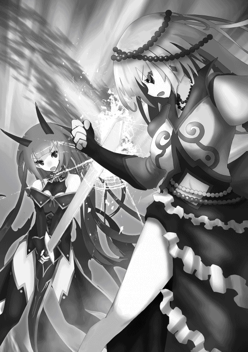
「どういうこと......!?」
「知りたいか？」
不思議そうな表情を浮かべるイエグに、アンリはその剣を見せつける。
「この自害剣は、その名の通り自害専用の剣。自分を傷つけることはできても他者を傷つけることはできない。お前は無傷だったのはそのためだ」
「......ふ、ふふ。あははははは!!」
イエグの豪快が笑い声が響き渡る。
「馬鹿じゃないの貴女!? そんな使えない剣で一体何がしたいっていうのよ!!」
「......決して自らの手で他者を殺すことはしない。それが私の戦闘スタイルだ」
アンリがそう言うと、イエグは呆れたように息をついた。
「どうやら本格的に頭のネジが飛んでいるようね。それじゃ貴女は私に殺されに来たってこと？」
「勘違いするな。私はお前を殺さないが、お前はここで確実に死を迎えることになる。今の内に遺言の内容でも考えておくといい」
「......意味が分からないわね。殺さずにどうやって私が死ぬっていうのよ!!」
「さあな。それは死んでからのお楽しみだ」
イエグの額に再び青筋が入る。
「とりあえず頭がおかしいってことはよく分かったわ。これ以上は時間の無駄だからさっさと殺してあげる!!」
激昂するイエグに対し、アンリは密かに笑みをこぼす。まるで既に勝利を確信しているかのように。
──七星の光城三階・ユナＶＳミカ──
ユナとミカ、互いの剣が目にも止まらぬ速さで幾度となくぶつかり合う。天使と悪魔の間に生まれた二人は、その血筋故に呪文を一つも所持していないため、剣一本に自らの命運を託していた。
戦況はミカの方が優勢である。条件は変わらないはずだが、この戦いに懸ける信念の強さがその差を生み出していた。ユナは形勢を立て直そうと、後方に下がってミカとの距離をとった。
「......強くなったわね、ミカ」
「......お姉ちゃんもね」
しばらく互いに見つめ合うユナとミカ。幼い頃に両親を殺され、数年間を森の中でひっそりと暮らしてきた二人の姉妹。
一緒にモンスターを退治したこと、洞窟に身を潜めて雨を凌いだこと、やっと手に入れたパンを分け合ったこと......。二人の脳裏には様々な思い出が蘇っていた。
「......その剣、まだ使ってたのね」
「......うん。お姉ちゃんだって」
森の中で暮らしていた頃、武器を買うお金などなかった二人は、ゴミ捨て場に捨ててあった二本の剣を見つけ、それを使って森のモンスター達と戦っていた。今の二人が手にしている剣は、その頃と全く同じものだった。
「切れ味は悪いし、無駄に重いし、剣としてはホント最悪。だけどやっぱり、この剣が一番しっくりくるんだよね......何でだろ。お姉ちゃんとの思い出がいっぱい詰まった剣だからかな」
「ミカ......」
「あの頃は苦しいことも沢山あったけど、お姉ちゃんがいれば辛くはなかった。お姉ちゃんがいれば楽しかった。お姉ちゃんは私の全てだったんだよ」
ミカは目を細くして自分の剣を優しく撫でる。やがて静かに剣を下ろし、暗い顔でユナを睨みつけた。
「だけどお姉ちゃんは......私を天使に売った。私を見捨てた。どうして......？」
「違う、見捨ててなんかない!! このまま森の中で暮らし続けるより、せめてミカだけでも衣食住の満ち足りた生活を送ってほしかった!! 私はミカの幸せを願って──」
「幸せ？ お姉ちゃんと引き裂かれることが私の幸せ......!?」
ミカの身体が小刻みに震え出す。
「本当は嫌いだったんでしょ、私のことが。邪魔だと思ってたんでしょ!!」
「そんなこと思ってない!! 私は本当にミカのことを......!!」
「ゲホッ、ゴホッ!!」
すると突然、ミカが咳と共に口から血を吐き出した。
「ミカ!? どうしたの!?」
「......お姉ちゃんだって気付いてるでしょ？ この『天空の聖域』の空間は悪魔の身体には有毒だってこと」
左手で血を拭いながらミカは言う。
「私の身体に流れてる悪魔の血は半分だけ。一般的な悪魔に比べたら影響は少ないけど、それでも長い間『天空の聖域』にいたことで私の身体は着実に蝕まれていった。おかげで私の身体、すっかり弱くなっちゃった」
「......ごめんなさいミカ。私はそんなこと知らなかった......!!」
「知らなかったで許されると思ってるの？ お姉ちゃんのせいで私は幸せどころか不幸のどん底だよ。絶対に許さない......!!」
ミカの頬には一筋の涙が伝っていた。
「もう私を見捨てたお姉ちゃんなんていらない。私の事が嫌いなお姉ちゃんなんていらない。だから死んで......お姉ちゃん!!」
「ミカ......!!」
再び剣を構える二人。ユナは自分の過ちを心の底から後悔した。だが時は既に遅く、ミカの心は完全に壊れてしまっていた。
──七星の光城七階・エリトラＶＳキエル──
アンリとユナがそれぞれの敵と激しい戦いを繰り広げる一方、キエルと対峙するエリトラ。今のところ両者にこれといった動きはなく、エリトラはキエルの様子を窺っていた。
「......呪文【創造】」
先に呪文を唱えたのはキエルだった。何か武器でも生成するのだろうかと、エリトラは身構える。
しかしキエルが【創造】で生成したのは武器でも何でもなく、一個の大樽だった。
「さて、と」
キエルはその場でドガッと腰を下ろし、樽の蓋を開ける。中に入っていたのは──ただの酒だった。
「......どういうつもりですか？」
キエルの不可解な行動に、エリトラは不信感を抱く。
「戦いの前には酒を嗜むのが俺の流儀......と格好つけたいところだが、どうにもお前と戦うのは興が乗らなくてな」
「......我では役者が不足していると言いたいのですか？」
「そうではない。お前が強いのは雰囲気で分かるさ。だが、俺には今日会ったばかりのお前と戦う理由がない。理由もなしに戦うとなると酒の力でも借りなければやってられん、というわけだ」
「ホホホ。今まさに自分達の本陣を我々悪魔に侵されているというのに、戦う理由がないとは面白いことを言いますね。七星天使の名誉を守るというだけでも立派な大義名分になると思いますが？」
「......七星天使の名誉、か」
僅かに口角を上げるキエル。それからキエルは再び【創造】を発動し、二本の木杓を生成した。
「お前も一緒にどうだ？ 酒は飲めるだろう？」
「......何かの罠ですか？」
「俺は戦士だ。そんなくだらん真似はしない」
「............」
これから戦う相手を酒に誘うキエルに、エリトラは感心すら覚える。これを断るのは自らの〝格〟を下げるに等しい行為だろう。
「では、いただくとしましょう」
エリトラは歩み寄り、大樽を挟んでキエルの真向かいに座る。キエルは木杓の一本をエリトラに手渡した。
「その仮面は外したらどうだ？ そのままでは飲めんだろう」
「ご安心を」
仮面の口の部分がパカッと開く。エリトラは木杓で酒を掬い、口に含んだ。同じくキエルも酒を掬い、口へと運んだ。
「味はどうだ？」
「......可もなく不可もなく、ですね」
「そうか。ま、所詮は呪文で生成した酒だからな。やはりバイトで稼いだ金で買った酒に比べると数段劣る」
「七星天使の第二席ともあろう御方が、バイトを？」
「バイトを見下すのはいただけないな。俺にとってはバイトも一つの戦場だ」
「......これは失敬」
奇妙な空気の中、しばらく二人は酒を飲み続ける。キエルは飲むペースが異様に早く、既に樽の酒は三分の一まで減っていた。
「一つ聞きたいことがある。お前が覇王に仕える理由は何だ？」
「愚問ですね。ユート様はいずれ人類を滅ぼし、世界を支配される御方。そんな偉大な御方に仕えることこそ至上の喜びなのです」
「......なるほど」
小さく笑みをこぼすキエル。ユートの正体を知っているキエルにとって、それはある意味皮肉にも聞こえた。
「貴方はどうなのですか？ 七星天使の地位に就いたのには何か理由が──」
「ないな」
キエルは即答した。
「俺には七星天使になった理由などない。セアルのように『世界の平穏を保つ』といったご大層な理念も持っていないしな」
「......そんな貴方が何故、七星天使に？」
「セアルから強引に引き入れられただけだ。あいつとは昔馴染みなものでな。無駄に実力だけはあったものだから第二席という不相応な地位まで得てしまった。早々に後継を見つけて引退したいものだ」
そう言って、キエルは最後の酒を一気に飲み干した。
「先程お前は『七星天使としての名誉を守るというだけでも立派な大義名分になる』と言ったが、俺にはそもそも名誉を守るという目的意識がない。七星天使としての理念を何も持たないのだから当然と言えるだろう」
「......その内見つかると思いますけどね。貴方だけの理念が」
「だといいがな。俺が数々の戦場に身を投じているのは、無意識に〝それ〟を追い求めているからかもしれん......」
キエルはゆっくりと腰を上げる。
「さて。良い感じに酔いも回ってきたところで、そろそろ開戦といこうではないか。経緯はどうあれ七星天使になった以上、その責務は全うしなければならない。たとえ俺自身に戦う理由がなくともな」
「......いいでしょう。しかし貴方と違って我にはユート様のご期待に応えるという確固たる信念があります。酒の恩はあれど、手加減するつもりはないのでご容赦ください」
「無論だ」
一定の距離を置いて対峙するエリトラとキエル。弛緩していた空気に一転して緊張が走る。
「......いくぞエリトラ。呪文【土壌領域】！」
キエルの呪文詠唱と同時に、この階全ての床、壁、天井が一瞬にして〝土〟へと変わっていった。無機物を全く別のものに変化させるという点ではイエグの【金色世界】に近いものがある。
「ホホホ。これが貴方の戦闘フィールドというわけですか」
「ああ」
すると土の塊が一カ所に集まり、やがてそれは一本の巨大な腕を形成した。そしてエリトラを叩き潰すべく、その腕が勢いよく振り下ろされる。
「呪文【攪乱箱】！」
エリトラが呪文を唱えた直後、キエルの視界からエリトラの姿が消える。代わりに側面に「？」と描かれた三つの大きな箱がその場に出現した。謎の光景にキエルは僅かに動揺を見せる。
「......三つの箱のどれかに奴が隠れているということか」
巨大な土の腕は真ん中の箱を叩き潰した。その瞬間、箱は大爆発を巻き起こし、土の腕は粉々に破壊された。
「ホホホ。残念でしたね」
残り二つの箱が自然消滅する。エリトラが隠れていたのは左の箱だった。
「面白い呪文を使うのだな」
「でしょう？ かつては『奇術師エリトラ』という呼び名があったほどですからね」
エリトラは頭のシルクハットを手に持ち、トンと軽く指で叩く。するとシルクハットの中から二匹の鳩がパタパタと出てきた。
「我のモットーはエンターテインメント。たとえ戦いの場であろうと自分が楽しむことを忘れず、そして相手にも楽しんでもらうことです。観客がいればもっと良かったのですけどね」
シルクハットを頭の上に戻し、スポットライトを浴びているかのように両手を広げるエリトラ。
「とくとご覧に入れましょう......我のジェネシスなショーを！」
エリトラが胸ポケットから一本のナイフを取り出し、クルクルと空中で回転させる。するとそのナイフは空中で二本に増え、エリトラはそれらを華麗にキャッチ。それを繰り返し、ナイフは四本、八本と増えていく。
「......それも何かの呪文か？」
「いえいえ、これは単なる手品でございます。ただしナイフには毒が塗ってあるのでご注意を」
エリトラは左手に掴んだ四本のナイフをキエルに向けて投射する。だがキエルの目の前に土の壁が形成され、それらのナイフは防がれる。続けてエリトラは右手に掴んだ四本のナイフを投げるが、またしても土の壁によって阻まれてしまう。
「残念だが、その程度の小細工ならやるだけ無駄だ」
「それはどうでしょう？ 視線誘導は手品の基本の一つですからね」
「......何？」
先程エリトラがシルクハットから出した二匹の鳩。その鳩達はキエルの斜め後方でパタパタと飛んでいる。すると突如として鳩達の姿がナイフに変貌し、キエルに向けて放たれた。
それは完全にキエルの不意を突いた攻撃だった。しかしすかさずキエルの背後に土の壁が形成され、二本のナイフはその壁に埋もれてしまった。
「おや？ 今の攻撃は完全に貴方の意識の外だったはず。何故それが防がれる......？」
「どうやらお前は勘違いをしているようだな」
「......勘違い？」
「この土壌は俺の意志で動かしているわけではない。土壌自らの意志で腕を形成してお前を攻撃し、壁を形成して俺を守ってくれている。これが俺の【土壌領域】の力だ」
「......この土壌は生きているとでも言うのですか？」
「ま、そういう考えもアリだな」
すると天井、壁、床、あらゆる方向から何本もの土の腕が形成され、一瞬にしてエリトラを取り囲んだ。
「さあ、果たしてこの数を先程の【攪乱箱】で回避できるか？」
「......無理ですね」
エリトラは諦めたのか、肩の力を抜いて大きく息をつく。直後、土の腕が一斉に襲い掛かり、エリトラは叩き潰されてしまった。
「意外とあっけなかったな......と言いたいところだが、この程度でやられるようなタマではないだろう」
床の一部がモコモコと動いている。やがてそれは大きな穴となり、そこから煙と共に直方体の箱が出現した。
「......やはりな」
不敵に微笑むキエル。やがてその箱が開き、中からエリトラが姿を現した。
「ジェネシーーーーース!! これぞ奇術師エリトラの大脱出ショーでございます!?」
両手を大きく広げるエリトラに、キエルは惜しみなく拍手を贈った。
「お見事。敵ながらアッパレだ」
「ホホホ。楽しんでいただけたようで何よりです。しかし我のショーはここからが本番ですよ。呪文【幻想分身】！」
パチンと指を鳴らすエリトラ。するとエリトラが一人から二人、二人から三人と増えていき、最終的には五十人以上にまで増えた。
「さあ、本物の我を当てることができますか!?」
全てのエリトラが胸ポケットからナイフを取り出し、キエルに襲い掛かってくる。
「......これは厄介だな」
それに反応するように土の腕が何本も形成され、エリトラの分身を次々と叩き潰していく。しかしエリトラの数は土の腕が対処できる範囲を明かに超えていた。
その隙にエリトラの本体がキエルの頭上を舞う。それに瞬時に気付くキエルだったが、避ける間も呪文を使う間もなく、キエルは咄嗟に右腕を上げて防御する。
「腕一本、いただきますよ！」
キエルの右腕を斬り落とすべく、エリトラはナイフを勢いよく振り落とした。
「!!」
しかしそこでエリトラは驚愕の光景を目の当たりにする。キエルの腕を斬り落とそうと振り下ろしたナイフは、キエルの皮膚を数ミリ程度刻んだにすぎなかった。その腕はまるでダイヤモンドのような固さだった。
「悪いな。ナイフ一本で差し出せるほど俺の腕は安くはない」
「......化け物ですか」
そのままキエルは左手でエリトラの腕を掴む。そして右手の拳に渾身の力を込め、エリトラの腹部に炸裂させた。
「がはっ!!」
手榴弾が爆発したかのようなキエルの一撃にエリトラの身体は吹き飛び、後方の壁に激突した。
「俺の所持呪文の数はセアル達に比べたらかなり少ないが、ＡＴＫとＤＥＦは七星天使の中で最も高い。屈強な身体こそ戦士である証なのだ」
その時キエルは自分の右腕が麻痺し始めていることに気付いた。右腕の傷口を見ると、そこから皮膚がジワジワと紫色に染まっていくのが分かる。
「そういえばナイフには毒が塗ってあるとか言っていたな。全身に毒が回ればいくら俺でも厳しいだろう。その前に決着をつける必要がありそうだ」
キエルは土の壁に大きくめり込んだエリトラに目を向ける。
「......もっとも、奴がまだ生きていたらの話だが」
エリトラの身体が壁から剥がれ、床に落下する。しかしまだ戦闘不能に陥るほどではなく、エリトラは右手で腹部を押さえながら立ち上がった。
「ほう。俺の拳をまともに喰らってまだ立てるとは感心だ。流石は覇王の配下といったところか」
「......ホホホ。ショーを途中で投げ出しては奇術師失格ですからね。ピンチを演出してこそエンターテイメントというものです......!!」
仮面の隙間から流れ出る血を拭いながら、エリトラは言った。
＊
「命を貰う前に一つ聞いておこうか。貴様らは何の為に人間共の魂を狩っている？」
セアルの背後に置かれた『魂の壺』に目を向けながら、僕はセアルに問う。七星天使が人々の魂を集めている目的は既にラファエから聞いていたが、それが真実かどうか念の為確認しておく必要がある。
「『幻獣の門』の封印を解き、幻獣を復活させる為じゃ。門の封印を解くには１０００の人間の魂を生贄に捧げる必要があるんじゃ」
「そして復活させた幻獣の力を利用して余を滅ぼす......という算段か」
「察しが良いではないか。だが貴様がここに現れた以上、ワシが直々に戦うしかなくなってしまったがな」
やはりラファエが話していた通りか。
「貴様が【魂吸収】の呪文を他の七星天使にも付与し、魂を狩らせていたことは知っている。ガブリという男が丁寧に教えてくれた」
僕がそう言うと、セアルは呆れたように息をついた。
「あいつめ、余計なことを......。お前の言う通り、ワシは【能力共有】によって他の奴にも【魂吸収】の呪文を与えていた」
「【能力共有】......。【能力付与】の上位互換、といったところか」
僕が所持している【能力付与】の場合、他者に与えた呪文は自分の中から消えてしまうので、付与というよりは譲渡と言った方が近い。現にリナに与えた【災害光線】は僕の中から消えている。また同時に複数の者に与えたりすることもできない。
「あながちそうとも言えない。【能力共有】はその呪文の所持者が死んだ場合、もしくは何らかの原因でその呪文を失った場合、他者に与えた呪文も全て消えるという欠点があるからな」
「......それは本当か？」
「おっと、つい口が滑ってしまった。おそらく人間と悪魔を含めても【魂吸収】を使えるのはワシ以外に存在しない。つまりワシがここで死ねば人間の魂を奪う手段はなくなってしまうというわけじゃ」
「......なるほど」
良いことを聞いた。こいつが嘘をついていないことが大前提だが、セアルを葬りさえすればこれ以上人々の魂が奪われる心配はなくなるというわけか。
「しかし滑稽な話だな。『世界の平穏を保つ』などと語る貴様が、人間共の魂を奪うことで平穏を脅かしているとは。貴様のやっていることは矛盾している」
「ふっ、返す言葉もない。だが貴様に人類を滅ぼされることに比べたらマシじゃろう。何かを成し遂げる為なら多少の犠牲には目を瞑るしかない」
「......多少の犠牲、か」
セレナやアスタ、そしてサーシャのアジトにいる子供達の顔が浮かぶ。その〝多少の犠牲〟の為にどれだけ多くの人々が心を痛めているか、こいつは理解しているのだろうか。
それに何度も言うようだが、僕は人類を滅ぼす気なんて全くない。とはいえ僕には五万の人間を消し飛ばしてしまった前科があるし、そう思われるのは仕方のないことだ。そこはもう割り切っている。
「ま、人間を目の敵にしている貴様達にとっては、人間の数が減るのは喜ばしいことかもしれないがな」
「寝言は死んでからほざくがいい。人間は余にとって悲鳴を上げさせる貴重な道具だ。それを横取りされるのは不愉快極まりない」
もちろんそんなことは微塵も思っていないが、僕は覇王らしくあろうとワザと言った。
「人間を生物としてすら認識していないとはな......。やはり世界の未来の為、貴様にはここで滅んでもらうしかなさそうじゃ」
「残念だが貴様ごときでは余を滅ぼすことなどできない。そして......」
僕は静かに人差し指の先をセアルに向けた。
「貴様と長々遊ぶつもりもない。呪文【死の宣告】!!」
暗転する視界。セアルの身体が葉脈のような黒い筋に浸蝕されていく。しかしセアルが動揺する様子は一切なく、ただ余裕の笑みを浮かべていた。
「呪文【身体遡行】！」
セアルが呪文を唱える。すると【死の宣告】による浸蝕が綺麗サッパリ消えていることに気付いた。これには僕も少々驚かされる。
「意外とせっかちな奴じゃな。対象に死を宣告し、その十五秒後に対象を葬り去る【死の宣告】をいきなり使ってくるとは。だがワシには通用しない」
「【死の宣告】を解除したというのか？」
「正確には解除したわけではない。【身体遡行】は己の身体を七秒前の状態に戻す呪文じゃ。それだけ言えば分かるじゃろう」
「......なるほど。その呪文によって自らの身体を【死の宣告】が発動する前の状態に戻したというわけか」
「正解じゃ。その性質上、連続使用はできないという欠点はあるがな。呪文一つでワシを葬れると思ったか？」
そんな方法で【死の宣告】を回避するとはな。流石は七星天使の第一席といったところか。これではいくら唱えたところで【身体遡行】で対処されてしまう。
「それと忠告しといてやろう。【死の宣告】を使えるのが自分だけだと思うな」
今度はセアルが人差し指を僕の方に向ける。まさか......！
「呪文【死の宣告】!!」
再び暗転する視界。僕の身体が黒い筋に浸蝕されていく。
「......これは驚いた。まさか余の他に【死の宣告】を使える者がいたとはな」
「呑気に喋っている場合か？ 貴様はあと数秒であの世へ旅立つことになるぞ」
確かに僕には【身体遡行】のような呪文はない。だが──
「覇王を舐めるな。呪文【統星変化】【解呪】を同時発動！」
僕は二つの呪文を唱える。直後に【死の宣告】は解除され、僕の身体への浸蝕も消え失せる。これに対しセアルは目を見開いた。
「馬鹿な。【解呪】は第四統星以下の呪文しか解除できないはず。何故第六統星呪文である【死の宣告】が解除された......!?」
「【統星変化】と唱えたのが聞こえなかったのか？ この呪文で貴様の【死の宣告】の統星を六から四に下げた。これにより【解呪】での解除が可能になったというわけだ」
「......そういうことか」
ただ統星を変化させるだけという一見使い道のなさそうな呪文だが、こうして別の呪文との組み合わせることによって活かす方法もある。
ちなみに全ての呪文はこの〝統星〟によって分類されており、最高で第六統星呪文まで存在する。数字が上になるほど効果や威力は大きくなるが、その分ＭＰの消費も大きくなる。第四統星呪文が使えるだけでもかなり稀少だと言われるので、第六統星呪文を使える僕やセアルがいかに凄いか分かるだろう。
「呪文一つで余を葬れると思ったか？」
僕は先程言われた台詞をそのままセアルに返した。
「これは一本取られた。どうやら戦いの神は容易な決着を望んではいないようじゃ」
「戦いの神、か。そんなものが存在するなら是非ともお目にかかりたいものだな」
しばしの沈黙の後、セアルは右腕をゆっくりと上げる。何か仕掛ける気だな。
「......少し前まで、地上では火山の噴火や竜巻などの自然災害が頻繁に起こり、人々を苦しめていた」
僕が警戒心を高めていると、セアルが唐突に語り始めた。
「が、ワシが七星天使の座に就いて以降、そのような自然災害は一切起こらなくなった」
「何が言いたい？ 災害が起きなくなったのは自分のおかげとでも言うつもりか？」
「ああ」
セアルは右腕を床と並行になったところで止め、右手を僕に向けて広げる。
「何故ならワシが全ての自然災害をこの身体の中に〝封印〟したからじゃ」
「......災害を封印だと？」
「その証拠を見せてやろう。呪文【火山噴火】!!」
セアルの右手から火山弾や溶岩流が一気に放出され、僕の身体に炸裂した。
「まだまだ。呪文【砂塵の竜巻】!!」
砂を伴った強烈な竜巻が発生し、容赦なく僕を襲う。体感的に風速は時速三百キロを優に超えており、城の天井も彼方へと吹き飛ばされてしまった。
「おっと、やりすぎたか。だがちょうどいい。呪文【豪雷】!!」
空に暗雲が立ちこめる。直後、鼓膜が破れそうになる音と共に雷が落ち、僕の脳天に直撃した。
「覚悟しろ覇王。貴様という災害もワシがこの手で消滅させてやる」
セアルの強力呪文を立て続けに喰らい、僕はその場に倒れた。
「まさかこうも簡単に倒せるとはな。貴様を滅ぼす為に躍起になって人間の魂を集めていた自分が馬鹿みたいじゃ」
どうやらセアルは完全に勝った気でいるようだ。
「......とまあ、演技はこれくらいにしておこうか」
僕はすぐに立ち上がり、服に付いた汚れを片手で軽く払う。それを見てセアルは驚愕の表情を浮かべた。
「演技じゃと......!? まさか何らかの呪文で防いでいたというのか!?」
「防いでなどいない。単に貴様の呪文ごときでは余を葬るに至らなかったというだけだ。雷など余にとってはただの静電気でしかない」
どちらかというと雷そのものより雷鳴の方が効いた。未だに耳がキンキンする。
ＨＰ ９９９９９９６８５４／９９９９９９９９９９
ステータスを確認してみると、ＨＰが一気に３０００近く減っていた。たった三回の呪文で僕にこれだけのダメージを負わせるとは、流石は七星天使のリーダー。だが所詮僕の命に届くことはない。
「どうした？ まさかもう手詰まりというわけではあるまい」
「くっ......当然じゃ!! 呪文【湖水爆発】!!」
セアルの右手から間欠泉のような勢いで大量の水が放たれ、僕の身体に炸裂する。僕はしばらくその攻撃を受けてみた後、右手を大きく振ってそれを弾き返した。
「呪文【土石流】!! 呪文【猛吹雪】!!」
その後も様々な災害で僕を攻撃するセアル。しかし案の定どれも致命的なダメージを与えることはなく、僕の両足は微動だにしなかった。
「ば......化け物め......!!」
セアルの呼吸が乱れ始める。そろそろ潮時か。
「どうやらこれ以上の災害はお目にかかれそうにないな。もはや貴様に用はない。消えてもらうぞ」
「......はっ。そう簡単にワシを殺せると思うな。【死の宣告】が通用しないことは既に学習したはずじゃ」
「それはどうかな。呪文【呪文凍結】！」
僕がその呪文を唱えると、セアルの首に〝氷の輪〟が装着された。
「何じゃこれは......!?」
「安心しろ。その呪文は貴様の首を絞めつけるものではない」
そう言いながら、僕は人差し指の先をセアルに向ける。
「呪文【死の宣告】！」
暗転する視界。直後にセアルの身体が黒い筋に浸蝕され始める。
「愚か者め、まだ理解していないのか！ 呪文【身体遡行】!!」
再び身体の時間を戻そうとセアルは呪文を唱える。しかし依然として黒い筋は浸蝕を続けている。
「馬鹿な、何故......!?」
「【呪文凍結】は一定時間呪文の発動を封じる呪文だ。もはや貴様にできるのは、ただ死を待つことのみ」
これはセアルが僕に対して使用した【魔封じの枷】に近い。こちらは時間制限がつく代わり、遠距離の相手にも発動できるという利点がある。
「おのれ......こんなもので......!!」
セアルが氷の輪を壊そうと必死に藻掻く。しかし【魔封じの枷】同様、この呪文も腕力ではどうにもならない。あの時の借りはキッチリ返させてもらう。
そして【死の宣告】の発動から十秒が経過したあたりで【呪文凍結】の効果が切れ、氷の輪は解除された。仮にここで【身体遡行】を発動し身体を七秒前の状態に戻したとしても、もはや【死の宣告】が発動した後の状態にしか戻せない。連続使用できないことは先程セアルがご丁寧に教えてくれた。よってこの瞬間、セアルの死は確定したことになる。
「覇......王......!!」
十五秒が経過。セアルの全身が黒い筋に覆われ......セアルはその場に倒れた。終わってみれば呆気ない勝負だった。
「さらばだセアル。安らかに眠れ」
さて、最後の仕上げだ。僕は階の中央に置かれた『魂の壺』に目を向ける。あれを破壊すれば人々の魂は持ち主の身体へと還っていくはずだ。僕は『魂の壺』のもとへと静かに歩き出した。
「......？」
が、その途中で僕はある〝違和感〟に気付き、ふと足を止めた。そして床に倒れ伏したセアルに目を向ける。
おかしい。人間や悪魔と違って天使はその命が尽きた時、死体は残らず身体は塵となって消滅するはず。それはウリエルや下級天使で既に確認済みだ。しかしセアルの身体はいつまでもその場に残留していた。
一体どうなっている。セアルの死体だけが例外とは思えない。まさかこいつ──
「......ふっ」
セアルの口から声が洩れ、僕の背筋に悪寒が走った。
「ふふふふふふ............はははははは............？！！」
地獄から湧き出るような笑い声と共に、セアルはゆらりと立ち上がる。その全身は不気味な赤黒色に染まっていた。
「残念だが勝負はまだついていない......ワシはこの瞬間が来るのを待っていた......!!」
どういうことだ。確かに【死の宣告】によってこいつは死んだはず。発動が成功したように見せかけて何らかの方法で無効化していたのか？ ならばもう一度......!!
「呪文【死の宣告】!!」
僕は三度目の【死の宣告】を唱える。しかし今度は何も起きなかった。
「悪いがその呪文はもはやＭＰの無駄にしかならない。何故なら私は既に死んでいるからだ。死人に死を与えたところで何の意味がある？」
「既に死んでいる、だと......？」
「【最期の灯火】。この呪文は生が終わりを迎えた時に発動することができる。これによりワシは十分の間、死体の状態で活動することが可能になる」
「......!!」
僕は戦慄を覚えた。こいつは死しても尚、僕を滅ぼそうというのか......!!
「覇王よ、本番はこれからだ。呪文【火山噴火】!!」
セアルの右手から火山岩と溶岩流が放たれる。何をするかと思えばさっきと同じ呪文だと？ 一体どういう──
「ぐおっ!?」
セアルの攻撃が炸裂し、僕の身体は数メートルの後退を余儀なくされる。さっきとは威力がまるで違っていた。
「言い忘れていたよ。【最期の灯火】にはステータスを格段に上昇させる効果があることをな。今の私を死ぬ前の私と同じだと思っていたら痛い目を見るぞ」
「......そのようだな」
どうにも僕には敵の攻撃を避けない癖がついてしまっている。何故なら今までは避ける必要がなかったからだ。
しかし今回ばかりは安易に攻撃を受けない方がいい......そう僕が危機感を覚えるほどに、今のセアルからは尋常ではない強さが感じられた。
「だがその力を得る為の代償が自らの命とは、大博打に出たものだな」
「ワシ一つの命と引き替えに貴様を滅ぼせるのなら本望だ」
どうやら僕は少々甘く見ていたようだ。セアルがこの戦いに懸ける信念を。
「いくぞ覇王。呪文【隕石衝突】!!」
空を見上げると、一個の巨大な隕石が驚異的な速度で飛んでくるのが見えた。標的は当然僕である。
これをまともに喰らうのはまずい。だがこれを僕が回避すれば、下の階にいるアンリ達まで巻き込んでしまう怖れがある。ここは下手に呪文で対抗するより、僕のパワーで確実に相殺する！
「ぬうん!!」
僕は飛来してきた隕石に自らの拳をぶつけた。凄まじい衝撃波が巻き起こり、床に亀裂が生じる。
「ぐっ......おおおおお!!」
僕は隕石を粉々に破壊した。だがその反動は小さくはなく、ＨＰが大幅に削られると共に右腕に激痛が走った。痛みを感じたのはいつ以来だろうか。
「隕石をも破壊してしまうとはな。もはや驚きを通り越して感心すら覚えてしまう」
「......ふっ。石ころ一つで余を殺せると思うな」
僕は思わず笑みをこぼす。想像以上の展開に、僕の胸は確実に高揚していた。戦いの中でこのような感情を抱いたのは初めてかもしれない。
「長々と遊ぶつもりはなかったが......面白い。貴様の執念は称賛に値する」
死人にはＨＰが存在しない。よっていくらダメージを与えたところで意味はない。こいつを止めるには身体を四散させる以外に方法はないだろう。だが──
「【最期の灯火】の効力は十分と言ったな。ならばその十分は貴様にくれてやる」
「......何？」
「生憎死体蹴りの趣味はないものでな。十分だけチャンスをやると言っている。その僅かな時間で余を滅ぼしてみせよ」
僕の言葉を受け、セアルの口角が上がる。
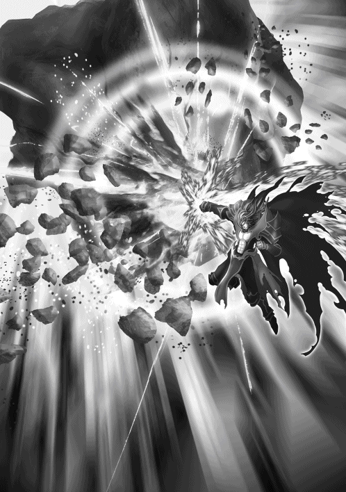
「言ってくれるではないか。その余裕がいつまで続くか楽しみだ......!!」
僕は最期まで付き合うことに決めた。セアルの信念に敬意を表して。
＊
──七星の光城五階・アンリＶＳイエグ──
「呪文【黄金津波】!!」
イエグの周囲の金塊が全て液状化し、波となってアンリに襲い掛かる。しかしアンリは驚異的な跳躍力で難なくそれをかわし、その勢いを保ったままイエグの身体を自害剣で切り裂く。しかしやはりイエグは傷一つ負っていない。
「何度も何度も無意味な攻撃を......。一体何がしたいのかしら？」
「さあな」
アンリはイエグの度重なる攻撃をかわし続け、イエグは自害剣によってダメージを受けないので、戦局は最初の状態からほとんど変化がないように見える。だが──
「......そろそろ頃合いか」
小さく呟くアンリ。そして再び剣を構え、イエグに向かって駆け出した。
「甘いわよ!!」
イエグは素手でアンリの剣を受け止めた。何度もアンリの攻撃を受け続けたおかげで、ついにイエグの目はアンリの動きを捉えた。
「自分を傷つけることはできても他人を傷つけることはできない......。その剣の効果がそれだけのはずがないわよね？」
「くっ......」
アンリの頬を汗が伝うのを見て、イエグは不敵に微笑む。
「どうやら図星のようね」
イエグの【金色世界】は周囲の物体を金塊に変える力。よってアンリの自害剣も金色に染まっていく。アンリは素早く後方に退避したものの既に手遅れであり、自害剣は完全に金色に染まってしまった。
「ふふっ、美しい剣になったじゃない。そして【金色世界】によって金塊に変化したものは全て私の思いのまま。つまり......」
パチンと指を鳴らすイエグ。それを合図にアンリの自害剣は粉々に砕かれてしまった。
「あははははは!! その剣にどんな効果があって何を狙ってたのか知らないけど、これで貴女の目論みはパーよ!!」
「......ふっ」
高らかに笑うイエグに対し、アンリは静かに笑みを浮かべた。
「あら、何がおかしいのかしら？」
「おかしいに決まっている。なんせそのような無意味な深読みで得意気になっているのだからな」
「......何ですって？」
「お前は自害剣に他にも何か効果があると読んだようだが、そんなものはない。自分も傷つけることはできても他者を傷つけることはできない、本当にただそれだけの剣だ」
アンリの言葉に、イエグは眉をひそめる。
「仮にそうだとして、それじゃ貴女は何の為に私を斬り続けていたというの？」
「......どうやら説明が必要なようだな。私が自害剣を出した直後に【界層低下】という呪文を唱えたのを覚えているか？」
「界層低下......？」
イエグは自らの記憶を辿ってみる。
「まあ、確かにそんな呪文を唱えていた気もするわね。それが何だというの？」
「まだ気付いていないとはな。自分のステータスを確認してみるがいい」
「ステータス......？ なっ!?」
イエグは自身のステータスを見て驚愕した。ＨＰやＭＰ、その他のステータスは一切変動していないが、９９９あったレベルが３００近くまで減っていたのである。
「どういうこと!? 何故私のレベルが......!?」
「【界層低下】は、端的に言えばレベルを減少させる呪文。私はこの呪文を自害剣に纏わせていた。つまりお前が自害剣に斬られる度に、お前のレベルは下がり続けていたんだ」
「......ふっ。ふふふふふ......!!」
イエグは顔に手を当て、不気味に笑い出す。
「尚更理解に苦しむわね。レベルだけ下げて一体何の意味があるというの？」
「私の所持呪文の中に【自害強要】というものがある。これはその名の通り、相手に自害を強要する呪文だ。ただしレベル３００未満の者にしか効果がないという欠点がある」
「へえ、怖ろしい呪文ね。でもレベル３００未満の相手にしか使えないなら私には何の意味も──」
イエグの言葉が止まる。その顔はみるみるうちに真っ青に染まった。
「......理解したようだな」
「ま、待って!! こんな、こんなことで私が......!!」
「呪文【自害強要】。自害せよイエグ」
アンリの無慈悲な呪文が発動する。間もなくイエグの身体が勝手に動き出し、自らの能力で金塊を槍に変え、自らの心臓に突き立てる。
「た......助けて......!!」
「最後にもう一度言っておこう。私は決して自らの手で他者を殺すことはしない」
アンリは自分の胸にそっと手を当てる。
「何故ならこの肉体は、いずれユート様の寵愛を受けるもの。それが〝殺しの咎〟に染まっていたのでは、ユート様の品位を下げてしまいかねない......」
頬をほんのり赤く染めながらアンリは言った。
「こんなの......こんなの全然......美しくないいいいいいいいいいい!!」
ドシャッ。イエグの心臓を金色の槍が貫く。イエグは血を吐きながら倒れ──その肉体は塵となって消滅した。
「価値観の相違だな。私の目には自害の瞬間こそ最も美しく映る......」
斯くしてアンリとイエグの戦いは、アンリの勝利で幕を下ろしたのであった。
──七星の光城三階・ユナＶＳミカ──
依然として両者の剣のぶつかり合いが続いている。ユナはミカの剣をかわし、すかさずユナは剣を繰り出す。その剣先がミカの頬を掠め、ミカは咄嗟に後退した。
「はあっ......はあっ......やるね、お姉ちゃん......!!」
やや苦しそうに息をするミカ。体調が万全でない状態で戦いに臨んだ影響がここにきて如実に表れ始めていた。中盤まではミカの方が優勢だったが、今の戦況は逆転していた。
「けど私は負けない......絶対にお姉ちゃんを殺してやる......!!」
「ミカ......」
辛い表情を浮かべるユナ。ミカは床を蹴り上げ、ユナに向かって駆け出した。ユナはその場から動かず、冷静に剣を構える。
ミカの剣が炸裂する。しかしユナはそれを受け流し、ついにミカの剣を床に叩き落とした。
「っ!!」
この瞬間、ミカは身を守る術を失い、無防備になる。勝負をつけるなら今しかない。ミカは剣先をミカの身体に向けるが──
「かはっ！」
ミカは身体の発作で再び口から血を吐き出した。それを目の当たりにしたユナは、無意識に剣を止めてしまった。
不敵に笑うミカ。これはミカが意図的にやったのではなく、本当にただの偶然だった。しかしミカはこの好機を逃さず、素早く床に落ちた剣を拾い──ユナの脇腹に剣を突き刺した。
「ああっ......!!」
ミカがユナの脇腹から剣を抜くと同時に、ユナはその場に崩れ落ちた。ユナの血で床が赤く染まっていく。
「ふふっ、優しいねお姉ちゃんは。剣を止めてなかったら私を殺せてたのに......」
剣に付いた血を人差し指で優しく撫でるミカ。
「......っ」
ユナは脇腹を右手で押さえながら、強く唇を噛みしめる。
──もしミカが私の命を奪うつもりで挑んできたならば......私も覚悟を決めます。
以前ユートに告げた言葉がユナの脳裏に蘇る。あの時嘘をついたつもりなどない。実際あの時はユナにも確かな覚悟があった。だが、今のユナには......。
「でき......ない......」
気が付けば、ユナはそう声に出していた。
「私には......ミカを殺すことなんてできない......」
ユナは妹の事を何よりも大切に想っている。そんなユナにミカの命を奪うことなど、始めからできはしなかった。
しかしミカにはユナの言葉など全く心に響いていないようで、失望した顔でユナを見下ろしていた。
「はぁ、なんか冷めちゃうな。そういうお涙頂戴な台詞で私の同情を誘えるとでも思ってるの？」
「ミカ、私は......」
「もういいよ。お姉ちゃんが私を殺せないなら......私がお姉ちゃんを殺すから!!」
本気の目で剣を振り上げるミカ。だが、もはやユナはそれを避けようとはしなかった。
「ユート様。不甲斐ない配下で申し訳ありませんでした......」
ユナは静かに目を閉じる。愛する妹に殺されるのなら悔いはない......そう思いながら。
「呪文【お手つき禁止】！」
その時だった。ユナの後方で何者かが呪文を発動する声がした。
「......？」
恐る恐る目を開けるユナ。するとミカの剣がすぐ目の前でピタリと制止しているのが分かった。一体何が起きたのかと、ユナは目を丸くする。
「いやあ、間一髪だったっすね！」
ユナは後ろを振り返る。そこに立っていたのは四滅魔の一人、ペータだった。ミカは素早く後ろに跳び、ユナとの距離をとった。
「ペータ！ どうして貴女がここに......!?」
「ようやく下級天使の掃除が終わったから、皆の加勢をしようと思ったんすよ。んで城の階段を上ってたらユナが絶賛大ピンチなのが見えたから、こうして助けに来たってわけっす。あとちょっとでも遅れてたらやばかったっすね！」
「......ありがとう、ペータ」
礼を言うユナにペータは明るい笑顔を見せ、それからミカの方に目を向けた。
「あれが七星天使っすね。なかなか可愛い子じゃないっすか......ってあれ？ なんかやけにユナに似てるっすね。もしかして生き別れの姉妹か何かっすか？」
ペータは冗談で言ったつもりだが、それは見事に的中していた。一方のミカは、ペータの乱入に不機嫌そうな顔をしている。
「......誰だか知らないけど、私とお姉ちゃんの邪魔をしないでくれる？」
「えっ、お姉ちゃん!? まさか本当に生き別れの姉妹なんすか!?」
「そ、それは......」
どう答えていいのか分からず、ユナは口籠もってしまう。
「あれ？ でもユナの妹なら、あの子も悪魔ってことになるっすよね？ いやでも七星天使ってことはやっぱり天使だろうし、ということはユナの方が天使？ いやでもユナは悪魔だし......あれ？」
思考がショートしたのか、ペータの頭から煙のようなものが出始める。
「......まあいいや！ 悪魔だろうと天使だろうと、ウチの仲間を傷つける奴は許さないっすよ！ ここからはウチが相手になるっす！」
「ペータ！ ミカとは私が......!!」
「そんな怪我で何言ってるんすか。とにかくウチに任せるっす！」
しかしペータは困ったような顔で腕を組んだ。
「とは言ったものの、ウチの【邪険外忌】とか【彫刻外忌】って大人数が相手じゃないと使えないんすよね。まあゲームは大勢で楽しむものだからしょうがないっすけど。さて、どうしたもんっすかねー」
うーんと喉を唸らせるペータ。それをミカは苛立った顔で見ている。
「ねえ、いい加減どいてくれない？ ここはお子様が出る幕じゃないんだけど」
「むかーっ！ 誰がお子様っすか！ ていうかアンタだってお子様じゃないっすか！」
癇に障ったのか、ミカを指差して言い放つペータ。
「もう怒ったっすよ！ こうなったらウチの本気の力を見せてやるっす！」
「......はあ。面倒だけど、先に殺すしかないか」
ようやくミカはペータを敵と認識し、剣を構えた。
＊
セアルの凄まじい攻撃の連続で、床や壁の至る所に大きな亀裂が生じている。このままでは城そのものが崩壊しかねないだろう。
「......そろそろタイムリミットだな」
床に這いつくばる満身創痍のセアルを見ながら、僕は呟いた。
正確な時間は測っていないが、感覚的に【最期の灯火】が発動して八分は経っているだろう。つまりあと二分ほどでセアルは真の最期を迎えることになる。
ＨＰ ８９４３６０７６８８／９９９９９９９９９９
自分のステータスを確認してみる。この僕が10億近くもＨＰを削られることになるとはな。これだけのダメージを負うのはこれが最初で最後かもしれない。
床に手をつき、なんとか起き上がろうとするセアル。だがもはや勝負の行方は火を見るより明らかだった。
「もう充分だろう。貴様では余を殺せないことは分かったはずだ。最期の数分くらい、自分の生涯を振り返る時間に充てたらどうだ」
「黙れ......まだワシは負けていない......!! 呪文【隕石衝突】!!」
喉の奥から振り絞るように呪文を唱えるセアル。これで【隕石衝突】は五回目。しかし空を見上げても、隕石が落ちてくる気配はなかった。
「どうやらＭＰの方が先に限界を迎えたようだな。あれだけの大技を繰り返せば無理もないだろう」
「......まだ......だ」
足をふらつかせながらもセアルは立ち上がる。それを見て僕は小さく息をついた。
「これ以上心を折るのは気が引けるが......致し方ない。呪文【超回復】！」
ＨＰ ９９９９９９９９９９／９９９９９９９９９９
僕の身体を眩い光が包み、ＨＰが完全に元の状態に戻った。
「【超回復】はＨＰを全回復させる呪文。これで貴様の今までの努力は水泡に帰したというわけだ」
「なん......だと......!?」
セアルの表情が絶望に染まっていく。
「そろそろ理解したか？ 貴様が一体〝何〟と戦っていたのか」
これで戦う気力も失せただろう。しかし僕の予想に反し、セアルの目はまだ死んでいなかった。
「それでもワシは......最期の瞬間まで戦ってみせる......!!」
セアルは拳を握りしめ、駆け出した。
「......見事な闘志だ」
僕は心の底からそう思った。そして正面から向かってくるセアルに対し、僕は静かに右手を前に出した。
「余からの慈悲だと思って受け取るがいい。呪文【大火葬】！」
その瞬間、セアルの全身を燃え盛る炎が包み込んだ。
「うあああああっ......!!」
断末魔の叫びを上げるセアル。ＨＰが存在しないのでダメージは発生しないものの、動きを止めるには充分だろう。
「......死人らしく、火葬で幕引きとさせてもらおう」
セアルは床に倒れ、動かなくなった。もう起き上がってくる気配もない。
これで正真正銘、決着がついた。【最期の灯火】の効力が切れるまで約一分といったところか。命を賭して僕との戦いに臨んでくれた礼として、その瞬間が来るまで僕が見届けてやるとしよう。
「！」
と思った矢先、城全体が大きく揺れ始め、壁や床が崩れ始めた。やはりセアルの凄まじい攻撃の連続に城が耐えられなかったようだ。この感じだと一分も経たない内に崩壊するだろう。どうやらセアルを見届けることは叶わないようだ。
「......仕方ない」
最後の仕上げをすべく、僕は『魂の壺』まで歩み寄った。これを破壊すれば人々の魂は持ち主の身体へと還る。ようやくだ、ようやくこれでセレナ達を苦しさや寂しさから解放してやれる──
「......!?」
だが、そこで僕は違和感に気付いた。
おかしい。前に壺を見た時、その中の〝白く光るもの〟からは生物の鼓動のようなものがハッキリと伝わってきた。だが今見えている壺の中の〝白く光るもの〟からはそれが全く感じ取れない。本当にただ白く光っているようにしか見えなかった。
嫌な予感が僕の頭を過ぎる。まさか......!!
「ぬうん!!」
僕は素手でその壺を破壊した。同時に全ての〝白く光るもの〟は線香花火のように儚く消えた。
「偽物か......!!」
やられた。これは『魂の壺』でも何でもない、ただの大きな壺だ。中の〝白く光るもの〟も呪文か何かであたかも人々の魂のように見せていただけだ。
「......やっと気付いたか。どうやら最後の最後で出し抜けたようじゃな......」
床に倒れるセアルが不敵に笑ってみせる。
「貴様......本物の『魂の壺』はどこだ!?」
「最初に言っただろう、貴様がここに来ることはワシの【未来予知】が教えてくれたと。ならば当然、貴様の狙いが『魂の壺』だということも分かっていた。敵が求めているものをそのまま置いておく馬鹿がどこにいる......？」
「御託はいい!! 本物をどこに隠したのか言え!!」
僕は思わずセアルの胸ぐらを掴んだ。しかしセアルは薄ら笑いを浮かべたまま何も答えようとしない。これでは何の為に『天空の聖域』まで乗り込んだのか分からない......!!
間もなく本格的に城の崩壊が始まり、その場に立つこともままならなくなる。もうこいつを尋問している時間はない。
「くそっ......!!」
僕はセアルの身体から手を離し、アンリ達に念話を繋げた。
「全員直ちに城外へ退避せよ!! 繰り返す、全員直ちに城外へ退避せよ!!」
＊
──七星の光城七階・エリトラＶＳキエル──
キエルと激しい攻防を繰り広げていたエリトラだったが、ユートからの念話をキャッチして動きを止める。キエルもほぼ同時に動きを止めた。
「......どうやら勝負はお預けのようだな」
城が崩壊していく音を聞きながら、キエルは呟いた。
「この空間は悪魔達にとっては不利なフィールド。次は対等な条件で戦いたいものだな」
「......ええ。その時が来るのを楽しみにしています」
両者とも痛み分けを受け入れ、この場から退去した。
──七星の光城三階・ユナ＆ペータＶＳミカ──
「聞いたっすかユナ！ ユート様から退避の命令っす！」
「......ええ」
時を同じくして、ユナとペータもユートからの念話をキャッチした。
「さっきから城全体がミシミシ言ってるっすからねー。城が崩れる前にとっととずらかるっす！」
これを聞いて、眉をピクリと動かすミカ。
「逃げるのお姉ちゃん？ まだ勝負はついてないよ？」
「いや何言ってんすかアンタ！ もう勝負どころじゃないって分からないっすか!? アンタも瓦礫の下敷きになりたくなかったら早く逃げることっすね！」
するとミカは小さく息をついた。
「ま、いいや。なんか邪魔者が入ったりしたし、このままお姉ちゃんを殺しても後味悪いだけだから」
「誰が邪魔者っすか!! ウチだってあまり活躍できなくて不満溜まってるんすよ!!」
そんなペータを無視し、ミカは暗い笑みをユナに向ける。
「一旦お別れだね、お姉ちゃん。次に会った時は......必ず殺してあげるから」
そう言い残し、ミカは一足先にこの場から退散した。
「いやあ、あの子のユナへの殺意ハンパなかったっすね。妹さんとの間に何があったんすか？」
「そ、それは......」
「っと、今はそんなこと話してる場合じゃなかったっす！ ほら早く背中に乗るっす！」
ペータはユナに背中を向け、その場にしゃがみ込む。ユナは申し訳なく思いながら、ペータの背中に身体を預けた。
「......ありがとうペータ」
「お礼なんていいっすよ。でもユナ、ちょっと重くなったっすか？」
「はっ!? な、何言ってんのよそんなわけないでしょ!?」
「冗談っすよ。振り落とされないようにしっかり掴まってるっす！」
深手を負ったユナを背負い、ペータは城から脱出した。
＊
僕は【瞬間移動】を使い、『七星の光城』から少し距離を置いた場所に転移する。程なくしてアンリ達四人も城から抜け出してくるのが見え、僕の前に集結した。
「遅れて申し訳ございません、ユート様！」
「よい。全員無事で何よりだ」
心の底から僕は安堵した。とりあえず一人も欠けることがなかったのは良かった。アンリとペータはほぼ無傷だが、エリトラとユナは深い傷を負っており、特にユナの状態が深刻だ。早く回復してあげなくては......。
「！」
すると『七星の光城』全体が激しい音と共に崩れて落ちていき、やがてその全てが瓦礫と化した。あと少し脱出が遅れていたら大変なことになってたな。残りの七星天使も既に脱出済みだろう。
「............」
僕は無意識に拳を握りしめた。セアルを倒すことはできたものの、肝心の『魂の壺』の破壊に失敗してしまった。これではセレナ達に顔向けできない......。
「ユート様、これから如何なさいますか？ 七星天使の生き残りを追いますか？」
アンリに聞かれ、僕は考える。今も僕達はこの空間によるダメージを着実に受け続けている。これ以上この空間に留まっていたら、僕はともかくアンリ達の身体にどのような変調をもたらすか分からない。
アンリ達を先に地上に帰して僕だけ残ることも考えたが、アンリ達の忠誠心の高さを考えると、絶対に私達も残ると言い出すだろう。そもそも残りの七星天使がどこに逃げたのか、そして本物の『魂の壺』がどこにあるのか、今は情報が全くない。となれば──
「撤退するぞ。これより覇王城に帰還する」
僕は決断を下し、地上へ戻ることにした。斯くして七星天使との第一次大戦は終結したのであった。
＊
ユート達が『七星の光城』から撤退した後のこと。瓦礫と化した『七星の光城』の上を歩く一人の男がいた。キエルである。
「！」
瓦礫に埋もれたセアルの姿がキエルの目に止まる。キエルは静かに歩み寄り、周囲の瓦礫を一つずつ取り除いていく。
「セアル......」
キエルは優しくその名を呼んだ。覇王に敗れ、変わり果てた姿となったセアル。既に【最期の灯火】の効力も切れ、その身体は徐々に消滅が始まっていた。
「......キエル......か......？」
キエルの声に気付き、セアルはうっすらと目を開ける。
「ああ、俺だ」
「......すまんな......もうお前の顔も見えない......」
そう言って、セアルは力無く笑う。
「これが......世界の平和を求め続け......その理想を打ち砕かれた者の結末じゃ......笑いたければ笑え......」
「お前は最期まで己の信念を貫いた。その生き様を笑う者がどこにいる」
「......ふっ......お前らしいな......」
セアルは最後の力を振り絞り、キエルの方に手を伸ばす。
「手を......握ってくれないか......？」
キエルは何も言わず、セアルの手を力強く握りしめた。
「キエル......皆のこと......頼んだぞ......」
「......ああ」
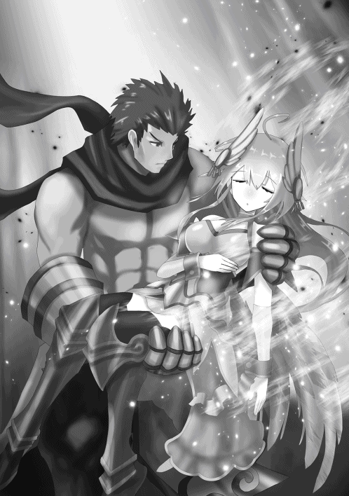
「ミカは身体が弱い......お前が守ってやってくれ......。ラファエは優しすぎる一面がある......常に支えてやってほしい......。ガブリは色々問題が多い......何かしでかしそうになったら殴ってやれ......」
「......ああ」
「ま......一番の問題児はお前じゃがな......。バイトは程々にしておくんじゃぞ......」
「......ああ」
セアルは安心したように微笑む。しかしその笑顔も、塵となって消えていく。
「......なんだか......眠くなってきたな......。そろそろ......逝くとするか......」
セアルの目がゆっくりと閉じていく。
「......じゃあな......キエル......」
キエルはそっと手を伸ばす。だがその時にはもう......セアルの身体は、そこにはなかった。
「......セアル......お前の遺志は......必ず......!!」
キエルの頬には、一筋の涙が伝っていた。
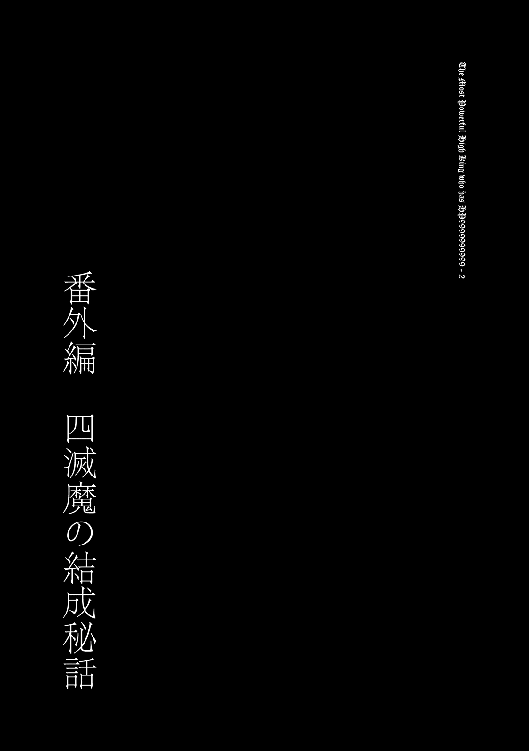
これは、阿空悠人が覇王として転生する半年前の出来事。アンリ、ペータ、ユナの三人は、目の前にそびえ立つ巨大な城を眺めていた。
「おおー、ついに完成したんすね！」
「この城が、本日から私達の拠点となるわけね」
「そう。いずれ復活なさる覇王様にも満足していただければよいが」
現在アンリ達は覇王をこの世に蘇らせるための下準備を着々と進めており、この城もその一つ。目的は勿論、覇王の力をもって忌々しい人間共を滅ぼすことである。
「ところで城には名前とかないの？」
「名前か......」
アンリが思案していると、ペータが元気良く手を挙げた。
「はいはい！ 〝アルティメットダークネスキャッスル〟なんてどうっすか!?」
「なんだそれは......。覇王様が君臨なさる城となるのだから〝覇王城〟でいいだろう」
「えー、まんまじゃないっすか。まあいいっすけど。てかアンリ、その覇王って本当に──」
「覇王〝様〟だ」
「......ご、ごめんっす」
アンリから殺気に満ちた目で睨まれ、ペータは思わず身震いした。
「で、何だ？」
「いや、覇王様って本当に人間を滅ぼせるほどの力があるのかなーと思って」
「愚問だな。かつて覇王様のお力によってこの世界は一度滅亡寸前まで追い込まれたという逸話が残っているほどだ。人間を滅ぼすことなど造作もないだろう」
「うひゃー、マジっすか。けどそんなに凄い力だとウチら悪魔まで巻き添え喰らったりしないか心配っすね」
「安心しろ。覇王様は悪魔の頂点を極めし御方。必ずや我々悪魔を良き世界へと導いてくださるだろう」
まだ姿すら見たこともないというのに、アンリの覇王に対する敬意と信頼は絶大であった。
「覇王様の復活を聞きつけて、私達の傘下に加わりたいという悪魔も増えつつある。私達は〝三滅魔〟としてしっかりとまとめ上げなくてはな」
「その滅魔については異議ありっす！ なんでウチが一番下の第三席なんすか!?」
「先日の協議で決めただろう。私が第一席、ユナが第二席、お前が第三席。今更文句を言うな」
「やっぱり納得いかないっす！ そうだ、改めてジャンケンで決めるのはどうっすか!?」
「あのな......」
ペータの子供のような我が儘に、アンリは溜息を禁じ得なかった。
「ほら、ユナも何か言ってやるっす！」
「私は別に......席次なんて何番目でもいいし。なんならペータが第二席で私が第三席でもいいわよ」
「えっ、本当すか!? うーん、でもそう簡単に譲られると、それはそれで納得できないというか......」
「面倒臭いなペータは......」
その時だった。不意に背後からただならぬ気配を感じ、三人は素早く振り返る。そこにはシルクハットを被り、無機質な仮面を付けた一人の男が立っていた。
「おっと、お取り込み中申し訳ありません」
「貴様、何者だ!?」
いかにも怪しげな男を前に、三人とも咄嗟に戦闘態勢に入る。しかしその者は落ち着いた様子で言葉を続ける。
「そう警戒なさらずに。我はエリトラと申します。ん〜〜ジェネシス!!」
唐突にその場でクルクルと回り出すエリトラを、アンリ達は怪訝な表情で見つめる。やがてエリトラはピタリと動きを止めた。
「用件はただ一つ。我を貴女方の仲間に加えてほしいのです」
「......私達の仲間に？」
「ええ。聞くところによれば、貴女方は覇王様をこの世に復活させ、人間の滅亡を目論んでるだとか」
そう言って、エリトラは仰々しく両腕を広げる。
「いやはや、実に素晴らしい計画！ まさに我の理念そのもの！ ですから是非とも仲間になりたいと思った次第です！」
「......貴様も人間に憎しみを抱く者、というわけか」
自分達に敵意がないと分かり、三人とも肩の力を抜いた。
「そういうことなら歓迎する。だがまずはその仮面を外せ。素顔を見せない輩を信用などできん」
「ホホホ。我とこの仮面は一心同体、自らの手で外すなど有り得ません。どうしても我の素顔が見たければ力ずくでどうぞ」
「......まあいい。それでは貴様は私達の傘下に加わる、ということでよいのだな？」
アンリがそう問うと、エリトラはわざとらしく首を傾げた。
「傘下、というのは少し気に入りませんね。できれば貴女方と対等な立場に置いていただきたい」
「......対等な立場、だと？」
「ええ。こう見えても腕には多少の自信がありましてね。我の実力は貴女方よりも上だと断言しておきます」
挑発的なエリトラの発言に、場の空気が更に緊迫する。
「先程〝滅魔〟がどうとか話してましたよね？ そこに我も加えていただきたい」
「......悪いが三滅魔の席は既に埋まっている。貴様の入る余地など──」
「なら席を増やせばいいではないですか。名称を三滅魔から四滅魔に変えてね。それくらいの融通は利くでしょう？ そして我を一番上、つまり第一席に置いていただきたい」
「ちょっとアンタ！ いきなり現れたかと思えば何勝手なこと言ってるんすか!? 図々しいにも程が──」
堪らず怒鳴るペータを、アンリが右手で制止する。
「面白い男だ。その大胆不敵さは嫌いではない。貴様の申し出、聞き入れてやる」
「はあ!? 何言ってんすかアンリ!?」
「ただし条件がある。この私と一対一で戦ってもらう。そして私を打ち負かすことができたら、第一席の座はくれてやる」
「ほう。もし我が負けたら？」
「自害しろ」
「いや自害しろって......」
これにはユナも思わず苦笑いを浮かべる。
「ホホホ。いいでしょう。その勝負、受けて立ちます」
斯くして決闘を執り行うことになったアンリとエリトラ。覇王城の目の前で、両者は一定の距離を置いて向かい合う。
「先に絶命、もしくは降参した方の負けだ。死にたくなければ早めに降参することだな」
「負けたら自害しないといけないのでしょう？ どのみち死ぬではありませんか」
「ふっ。まあ、そうだな」
対峙する二人を、ペータとユナが少し離れた所から見守る。
「いやー、なんか面白い展開になったっすね」
「......ペータはどちらが勝つと思う？」
「やっぱりアンリじゃないっすか？ アンリが負けるとこなんて想像できないし。ユナはどう思うっすか？」
「私も、アンリには勝ってほしいけど......」
ユナはエリトラから異質な気配を感じ取っていた。あの男は明らかに普通の悪魔とは違う。いや、そもそも本当に〝悪魔〟なのか──
「戦いの前に一つお聞きします。貴女が人間を滅ぼそうとするのは何故ですか？」
「知れたこと。害虫にも等しい人間など駆除されて当然の存在。人間の滅亡こそ私達悪魔にとっての悲願なのだ」
「なるほど。なんとも抽象的な理由ですね」
「......なんだと？」
自分の信念を小馬鹿にされた気になり、アンリはエリトラを鋭く睨みつける。しかしそんなことは意にも介さない様子で、エリトラは言った。
「僕にはある......絶対に人間を滅ぼさなければならない理由が。貴女方とは信念の重さが違う......!!」
「......!?」
先程までとは別人のような雰囲気に、アンリは一瞬気圧される。しかしまたすぐに元の雰囲気に戻った。
「さて、では始めましょうか。先手は我が頂きますよ。呪文【真眼通】！」
早速エリトラが呪文を発動し、アンリは咄嗟に身構える。しかしアンリにダメージはないどころか、身体にも変化は見受けられない。
「......貴様、何をした？」
「それを言ったら面白くないでしょう。手品の前に種を明かしては台無しですからね」
まあいい。たとえ何を企んでいようが、私は私の戦いをするだけ──そう気持ちを切り替えながら、アンリも呪文を発動した。
「呪文【自害剣】！」
虚空より漆黒の剣が現れ、アンリの右手に握られる。
「ホホホ。なんとも禍々しい剣ですね」
「呪文【界層低下】！」
続けてアンリが呪文を発動し、エリトラに向けて疾駆する。しかしエリトラは避けようともせず、そのままアンリの自害剣に切り裂かれた。
「おや？ 全然痛くないですね」
わざとらしく驚くエリトラ。【自害剣】は己を傷つけることはできても他者を傷つけることはできない。よってエリトラへのダメージは０だった。
「はてさて。ダメージを与えられない剣を使って一体どういうつもりなのか......」
エリトラは思案する素振りを見せた後、ポンと手を打った。
「なるほど。【自害剣】と【界層低下】のコンボで【自害強要】の発動圏内になるまで我のレベルを下げ、その呪文によって我を自害させる......といったところでしょうか。いやはや、なんとも怖ろしい戦術ですね」
これにはアンリだけではなく、観戦中のペータとユナも驚愕した。既に発動した【自害剣】と【界層低下】はともかく【自害強要】はまだ存在すら明かしていない。にもかかわらず、何故エリトラにそれが分かったのか。
「貴様、一体......!? 先程の【真眼通】の効力か!?」
「さて、どうでしょうねえ」
おそらく対象者の所持呪文を読み取る呪文なのだろうとアンリは推測する。しかしそれを考慮したとしても、一瞬でアンリの戦法を看破したエリトラの洞察力は見事と言う他ない。
「私の戦術を見抜いたことは褒めてやる。だが貴様が敗北することに変わりはない」
「それはどうでしょう？ その戦術は私に剣を当てられなければ意味を成さない。これ以上貴女の剣を受けることはないと宣言しておきましょう」
「ほざけ！」
目にも止まらぬ速さで剣撃を繰り出すアンリ。だがエリトラは曲芸師のような動きで全ての剣撃を回避する。
「おのれ、ちょこまかと......！」
アンリの額から汗が伝う。まだ両者ともダメージは受けていないが、勝負の流れは明らかにエリトラの方にあった。
「無駄のない動きですね。さぞや厳しい鍛錬を積んでこられたのでしょう。ですが貴女の動きはあまりにも正直すぎる。もっと遊び心を持った方がいい」
「黙れ！ 貴様の説法など聞く耳は持たん！」
「それは残念。では今度は我の番です」
エリトラは懐から複数のナイフを取り出し、アンリに向けて投射する。アンリは自害剣で難なくそれらを打ち払った。
「お見事。さあ、どんどんいきますよ！」
エリトラが絶え間なくナイフを放ち、アンリが華麗な剣捌きでそれらを打ち払う。エリトラのナイフはまるで無限に増え続けているかのように途切れる気配がない。これでは距離を詰めることもできず、徒に体力を消耗するだけである。
「呪文【自害共有】！」
ならばと一瞬の隙を突き、アンリが呪文を詠唱。更にアンリは一切の躊躇なく、自害剣で自らの左足を突き刺した。
「ぐっ!?」
同時にエリトラが動きを止める。【自害共有】は自ら肉体に与えたダメージを相手にも与える呪文。よってエリトラの左足からも鮮血が噴き出していた。
そしてエリトラが激痛に苛まれている今が好機とばかりに、アンリはエリトラに急接近する。左足のダメージはアンリも同じだったが、この程度の痛みで動きが鈍るアンリではない。
アンリは自害剣でエリトラの身体を無数に切り裂いていく。当然エリトラへのダメージは０だが、【界層低下】の効力によってエリトラのレベルは着実に減少を続ける。あと数撃で【自害強要】の発動圏内となるはずだ。
この勝負もらった──アンリが勝利を確信した、その時だった。
「なっ!?」
アンリが驚愕の声を上げた。突如エリトラの身体が塵となって霧散したからである。目の前で起こった謎の現象に、アンリは一瞬呆気にとられてしまう。
「まさか、分身──」
「ご名答」
背後からエリトラの声。だが気付いた時には既に、エリトラはアンリの喉元にナイフを突き立てていた。
「ホホホ。今し方消滅したのは我の【幻想分身】で生み出した分身、我が本物です。楽しんでいただけましたかな？」
「くっ......いつの間にそのような呪文を......!!」
死を覚悟するアンリ。しかしエリトラはナイフを下ろし、後退してアンリと距離をとった。
「貴様、何故首を刈らなかった......!?」
「我には最初から貴女を殺す気などありませんから。これから同志となる御方を手にかけたところで、我には何のメリットもありませんし」
アンリの拳が震える。命拾いしたことへの安堵など、アンリには微塵もなかった。
「さてどうします？ 続けますか？ 我は別に構いませんが」
「......降参する。私の負けだ」
苦悶の表情でアンリは口にした。情けをかけられた上で戦いを続けることは、アンリにとって屈辱でしかなかった。
「あ、アンリが負けたっす......」
「信じられないわね......」
予想外の結末に、ペータとユナは驚きを隠せなかった。
「貴女の敗因は我を格下だと侮ったことですかね。まあ、お互い本気でなかったとはいえ、勝ちは勝ちです。約束は守ってもらいますよ？」
「......ああ。貴様を四滅魔の第一席として迎え入れる」
感情を押し殺しながらアンリは言った。この男の素性はともかく実力は本物だ。きっと覇王様にとって大きな力となるに違いない。そうアンリは自身に言い聞かせた。
「今すぐ自害したい気分だが......覇王様が復活なさるまで死ぬわけにはいかないからな」
「ホホホ。命は大事にした方がよろしいかと。人間のいない理想の世界を目指して、お互い頑張りましょう」
「......ああ」
斯くして謎の仮面男、エリトラが仲間に加わった。この男の正体が明らかとなるのは、まだ先の話──
皆さんこんにちは。著者のダイヤモンドです。おかげさまで無事に二巻目を出させていただくことができました。応援してくださった大勢の方々に感謝です。
さて。本作には主人公達と対立する勢力として「七星天使」と呼ばれる七人の天使が登場します。今巻で彼らの実態が概ね明らかになったので、この場を借りて彼らについての裏話をしたいと思います。
気付いている方もいるかもしれませんが、由来はキリスト教の「七大天使」です。その教派の一つであるギリシャ正教では、七大天使がこのように曜日で分けられることがあります（ウィキペディアより）。
日曜 ミカエル 月曜 ガブリエル
火曜 ラファエル 水曜 ウリエル
木曜 セアルティエル 金曜 イェグディエル
土曜 バラキエル
これを見ればお分かりかと思いますが、ミカエル→ミカ、ガブリエル→ガブリ、ラファエル→ラファエといったように、どの七星天使も七大天使の名前の一部を拝借しております。ただしウリエルは最初に登場する七星天使ということで、天使であることを強調するため敢えてそのまま使いました。
そして更に、それぞれのキャラが使用する呪文は、この各曜日が関係していたりします。例えばガブリ（ガブリエル）は月曜なので【月光砲】【月影分身】といった〝月〟に関する呪文を使いますし、ラファエ（ラファエル）は火曜なので【火炎鎧】【火炎壁】といった〝火〟に関する呪文を使います。日曜はキリスト教では安息日となっているので、それにちなんでミカは呪文を使えないことにしました。
どうするか迷ったのはセアルですね。この法則に従えばセアルは〝木〟に関する呪文を使うことになりますが、七星天使のリーダーが木っていうのもなんか地味ですし。そこで「木って自然のイメージがあるから〝自然〟に関する呪文にしよう」という考えに至り、【砂塵の竜巻】【豪雪】といった自然災害系の呪文を使わせることに決めました。我ながらちょっと強引ですけど。
何故七大天使に目を付けたかというと、やはり僕がキリスト教の高校に通っていたからですかね。いや、あまり関係ないか。七星天使の由来については「小説家になろう」では一切触れていないので、本書を手に取っていただいた方だけの特典（？）ということで。
それでは最後に謝辞を。田中健一さん、とにかく素晴らしいイラストを仕上げていただき感謝感激です。担当のＩ編集、出版までお付き合いいただきありがとうございます。ＴＯブックス編集部の皆様、二巻目を出させていただいたことに感謝です。そして読者の皆様、ご支援本当にありがとうございます。またお会いしましょう！
著者プロフィール
ダイヤモンド
Diamond
去年から始まった某カードゲームアプリに最近嵌っています。子供の頃を思い出して懐かしい気持ちになります。アニメシリーズは今も観てますけど。出でよ、ブルーアイズホワイト──おっと、これ以上はマズいですね。
田中 健一
Tanaka Kenichi
イラストレーターの田中 健一と申します。普段はゲーム関係のキャラクターやモンスターなどのイラストを多く手掛けております。どうぞ宜しくお願い申し上げます！
HP9999999999の最強なる覇王様２
2018年２月１日発行 ver.1.0
著 者 ダイヤモンド
協 力 株式会社MARCOT
発行所 TOブックス
〒150-0045 東京都渋谷区神泉町18-８
松濤ハイツ２Ｆ
03-6452-5766（編集）
0120-933-772（営業フリーダイヤル）
Ⓒ2018 Diamond
※無断で複製・複写・データ配信などをすることは、かたくお断りいたします。
本電子書籍は下記にもとづいて制作しました
HP9999999999の最強なる覇王様２
発行日 2018年２月１日 第１刷発行
本作品の全部または一部を無断で複製、転載、配信、送信したり、ホームぺージ上に転載することを禁止します。また、本作品の内容を無断で改変、改ざん等を行うことも禁止します。
本作品購入時にご承諾いただいた規約により、有償・無償にかかわらず本作品を第三者に譲渡することはできません。
本作品を示すサムネイルなどのイメージ画像は、再ダウンロード時に予告なく変更される場合があります。
本作品は縦書きでレイアウトされています。
また、ご覧になるリーディングシステムにより、表示の差が認められることがあります。